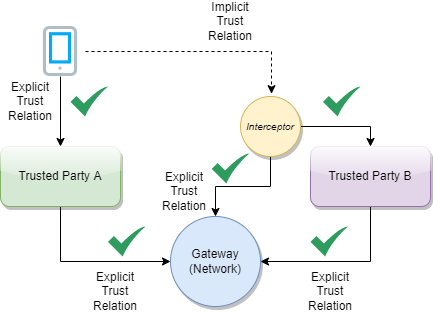

Машинный перевод — не проверен человеком
Эта страница переведена автоматически. Ни один человек не проверял и не утверждал этот перевод, поэтому он может содержать ошибки. Авторитетной является только страница на языке оригинала. Читать оригинал (английский)
Machine translation — not reviewed by a person
This page was translated automatically. No person has reviewed or adjudicated this translation, and it may contain errors. The source-language page is the authoritative text. Read the original (English)
Главная
Краткий обзор
В настоящем руководстве описаны спецификации и процедуры подключения к Глобальной сети сертификации в области цифрового здравоохранения ВОЗ (GDHCN). GDHCN — это механизм поддержки проверки медицинских документов и сертификатов, которыми обмениваются участники GDHCN. К таким медицинским сертификатам могут относиться сертификаты COVID-19, карты плановой иммунизации и домашние медицинские записи, соответствующие стандартам Международной сводки о пациенте (IPS). Этот механизм предоставляет средства гармонизации глобальных стандартов протоколов здравоохранения и создания системы признания цифровых сертификатов для обеспечения непрерывности медицинской помощи и в пунктах въезда. GDHCN призвана использовать существующие инвестиции юрисдикций, сделанные в рамках мер реагирования на COVID-19, и обеспечить инфраструктуру цифрового здравоохранения, необходимую для устойчивости при реагировании на будущие эпидемии и пандемии.
GDHCN является цифровым отражением доверия, которое уже существует между ВОЗ и государствами — членами ВОЗ. GDHCN — это цифровая сеть доверия, основанная на проверенных концепциях, которые используются для описания спецификаций и механизмов установления доверия, позволяющих правомочным участникам создавать новые Домены доверия для обмена проверяемыми цифровыми медицинскими записями. Правомочные участники сети доверия могут подать заявку на присоединение, пройдя процесс подключения. GDHCN функционирует в соответствии с Административно-операционной основой GDHCN (GDHCN Administrative and Operational Framework).

The view in this guide's ArchiMate model.
Чтобы попробовать подключение на практике, сыграйте в Join the Network — симуляцию, в которой условная страна шаг за шагом присоединяется к GDHCN, следуя процессам подключения.
Предпосылки и цель
В ответ на COVID-19 правительства и организации во всём мире разработали и внедрили стандарты и технологии для создания, предъявления и проверки цифровых удостоверений о вакцинации и тестировании. Однако глобальной технической основы, обеспечивающей удобное использование и совместимость этих удостоверений между системами при сохранении внутренней автономии в отношении их использования, пока не существует, и в ней имеется острая необходимость.
Глобальная сеть сертификации в области цифрового здравоохранения ВОЗ представляет собой совокупность компонентов, используемых для проверки совместимых цифровых медицинских документов или сертификатов. Эта система состоит из трёх основных элементов:
Набор чётко определённых цифровых медицинских документов, которые выдаются и проверяются участниками GDHCN Инфраструктура открытых ключей (PKI), используемая для публикации и распространения открытых ключей, применяемых для проверки цифровых подписей цифровых медицинских документов.
Библиотека знаний, используемая для ведения метаданных, включая терминологические коды, коды продуктов и бизнес-правила, которые используются для обеспечения семантической совместимости этих цифровых медицинских документов
Помимо верификации и проверки действительности сертификатов COVID-19, глобальная сеть доверия в области цифрового здравоохранения, такая как GDHCN, может:
Устанавливать доверие к алгоритмам клинической практики с цифровой подписью, публикуемым ВОЗ в рамках работы над руководящими принципами SMART. Обеспечивать возможность создания глобального каталога доверенных медицинских изделий и устройств. Обеспечивать доступ к информации о пациенте и доверие к ней независимо от того, где в мире он находится. Поддерживать устойчивость систем здравоохранения для реагирования на будущие вспышки болезней в мире. Расширять возможности людей по управлению собственным здоровьем и благополучием.
Обмен медицинской информацией с обеспечением совместимости в доверенной среде является сложной задачей, в которой участвует всё большее число заинтересованных сторон (например, ведомства общественного здравоохранения, аккредитованные лаборатории, органы пограничного контроля, учреждения, уполномоченные осуществлять проверку), которым необходимо обеспечить безопасную и надёжную передачу данных, совместимость медицинского содержимого, а также понятность информации и возможность действовать на её основе. В настоящем руководстве подробно описано, как использовать глобальную техническую основу для обеспечения совместимости медицинских удостоверений между системами при сохранении внутренней автономии в отношении их использования.
Для достижения глобальной совместимости медицинских сертификатов не требуется, чтобы все юрисдикции использовали один и тот же стандарт. Совместимость может быть также достигнута при наличии заранее согласованных механизмов, обеспечивающих признание в одной юрисдикции сертификатов, выданных в другой. Для выполнения отдельных критериев установления совместимости и системы доверия разработан ряд услуг и технических артефактов, в том числе:
Модели данных, преобразования и определения словарей, позволяющие обмениваться медицинскими данными в различных форматах стандартов, сохраняя автономию юрисдикции в отношении внутренних процессов и обеспечивая при этом повторную выдачу и взаимное признание удостоверений между юрисдикциями Стандартные спецификации обмена открытыми ключами между различными сетями для проверки цифровых подписей на медицинских удостоверениях Глобальный реестр доверия и федеративное решение инфраструктуры открытых ключей, обеспечивающее техническую совместимость и техническое управление между региональными сетями доверия Рабочие процессы создания, совместного использования и выполнения бизнес-правил, которые оценивают соответствие медицинских данных политике общественного здравоохранения для требований при пересечении границы или в пункте въезда Инструменты с открытым исходным кодом и техническое руководство, снижающие нагрузку по внедрению технической инфраструктуры для участия в федеративной сети доверия, включая инфраструктуру сети доверия с открытым исходным кодом, позволяющую юрисдикциям создавать собственные региональные сети доверия
Циркулярное письмо государствам — членам ВОЗ
В пятницу, 29 сентября 2023 г., Генеральный директор ВОЗ направил всем государствам — членам ВОЗ циркулярное письмо, призывающее к участию в GDHCN.
- C.L.38.2023 (Глобальная сеть сертификации в области цифрового здравоохранения) — на арабском языке
- C.L.38.2023 (Глобальная сеть сертификации в области цифрового здравоохранения) — на китайском языке
- C.L.38.2023 (Глобальная сеть сертификации в области цифрового здравоохранения) — на английском языке
- C.L.38.2023 (Глобальная сеть сертификации в области цифрового здравоохранения) — на французском языке
- C.L.38.2023 (Глобальная сеть сертификации в области цифрового здравоохранения) — на русском языке
- C.L.38.2023 (Глобальная сеть сертификации в области цифрового здравоохранения) — на испанском языке
Целевая аудитория
В настоящем руководстве описаны ожидаемые рабочие процессы для потенциальных акторов экосистемы доверия, а именно:
эмитенты, предоставляющие физическим лицам проверяемые медицинские удостоверения; проверяющие стороны, использующие проверяемые медицинские удостоверения, предъявляемые физическими лицами; и сети доверия, устанавливающие отношения доверия и политики между эмитентами и проверяющими сторонами.
Целевая аудитория настоящего руководства включает лиц, принимающих решения, аналитиков и технических специалистов потенциальных отдельных эмитентов, существующих сетей доверия или потенциальных проверяющих сторон, которые могут участвовать в федеративной сети доверия. К заинтересованным сторонам относятся государства — члены ВОЗ, региональные сети и организации по разработке стандартов.
Участники
Доступные Домены доверия
Коды Доменов доверия GDHCN содержатся в наборе значений GDHCN Trust Domain Value Set и более подробно описаны здесь.
</p>
Этические соображения и принципы защиты данных
Как и в случае любого цифрового решения, существуют этические соображения, такие как возможное влияние на справедливость и на равный доступ, а также принципы защиты данных, которые должны учитываться при разработке технических спецификаций и служить ориентиром в отношении того, как полученные решения могут быть внедрены с соблюдением этических норм. На следующей странице рассматриваются ключевые этические соображения и принципы защиты данных, которые государствам — членам ВОЗ рекомендуется (а при наличии юридических обязательств — необходимо) учитывать при развёртывании ими цифровых решений. Эти этические соображения и принципы защиты данных также легли в основу критериев разработки руководящих принципов SMART ВОЗ (WHO SMART Guidelines) и использования Глобальной сети сертификации в области цифрового здравоохранения ВОЗ.
Обратная связь
Отзывы, касающиеся настоящего руководства по внедрению, можно направить следующими способами:
Часто задаваемые вопросы можно просмотреть здесь Нажав на одну из ссылок «Обратная связь» справа от заголовка любого раздела Отправив электронное письмо по адресу gdhcn-support@who.int Создав задачу (issue) на GitHub в репозитории smart-trust
Сообщество
Зарегистрируйтесь в сообществе chat.fhir.org и подпишитесь на поток who-smart-guidelines для вопросов, запросов и обсуждений, связанных с руководящими принципами SMART ВОЗ (WHO SMART Guidelines) chat.fhir.org ВОЗ также проводит еженедельные созвоны по разработке и внедрению руководящих принципов SMART ВОЗ, участие в которых приветствуется. Чтобы получить приглашение, направьте письмо по адресу gdhcn-support@who.int. gdhcn-support@who.int
Оговорка об ограничении ответственности
Документированная здесь спецификация относится к глобальной демонстрационной рабочей спецификации ВОЗ (WHO Global) и не может использоваться в каких-либо целях внедрения. Данный проект предоставляется без гарантии полноты или согласованности; официальная публикация имеет преимущественную силу по отношению к данному проекту. Использование или ненадлежащее использование данной спецификации либо их последствия не влекут за собой какой-либо ответственности.
Ключевые этические соображения
Этику следует сделать неотъемлемой частью разработки и развёртывания цифрового решения. Однако политические решения зачастую сложны и трудны. Необходимо будет учесть множество различных соображений и соотнести их друг с другом. Нередко фактические данные неопределённы, и существует множество различных конкурирующих этических взглядов и позиций. Одни лишь фактические данные не дадут правильного ответа, как и простой набор этических правил. Деятельность в области общественного здравоохранения требует тщательного суждения и принятия ответственности за результаты. Следует учитывать ряд различных этических соображений, включая как цели, так и процессы.
Цели
Хорошей отправной точкой является определение того, как использование цифрового решения может способствовать выполнению важных общих обязанностей любого правительства в сфере общественного здравоохранения. Три ключевые цели деятельности в области общественного здравоохранения:
защищать и содействовать благополучию отдельных лиц, сообществ и населения в целом; обеспечивать равное обращение со всеми людьми и предотвращать или смягчать, насколько это возможно, предотвратимые и несправедливые различия в состоянии здоровья (т. е. неравенство в отношении здоровья) в пределах государства; а также создавать и поддерживать доверие к деятельности в области общественного здравоохранения как части системы здравоохранения.
Создание и использование цифрового решения может способствовать достижению каждой из этих целей. Например, применительно к цели 1 цифровое решение может содействовать благополучию за счёт предоставления цифровых медицинских записей, обеспечивающих преемственность помощи благодаря тому, что у людей есть доступ к своим медицинским данным в разных учреждениях. Содействие достижению этой цели также способствует доверию к инфраструктуре здравоохранения правительства, что приносит пользу всему населению. Такой результат является важным общим благом, т. е. благом для всех, которое не может быть создано каждым человеком в одиночку. Такие блага требуют скоординированных действий и поддержки со стороны правительств. Кроме того, использование цифрового решения принесёт и другие преимущества благодаря улучшению здоровья и последующему расширению возможностей для отдельных лиц и сообществ делать собственный выбор и добиваться собственных экономических и социальных целей.
Применительно к цели 2 равное обращение требует равного уважения и защиты всех людей и действий, направленных на то, чтобы, насколько это возможно, не допускать дискриминации кого-либо. Примером работы над достижением этой цели является обеспечение внедрения надлежащих гарантий защиты персональных данных. Индивидуальные данные о здоровье являются частной информацией, и необходимы меры защиты, гарантирующие, что ни один человек не будет вынужден раскрывать или публично демонстрировать свою персональную медицинскую запись (PHR) для доступа в какое-либо общественное место или к какой-либо деятельности [swiss-taskforce-vaccination-proof-2021]. Такая практика и/или само отсутствие PHR могут привести к стигматизации лиц, не имеющих PHR, и усугубить риск причинения вреда.
Другим примером работы над достижением цели 2 является поиск путей достижения справедливости при распределении ресурсов здравоохранения. Хотя цифровое решение может предложить более надёжный, точный и пользующийся доверием механизм регистрации личной истории здоровья, оно рискует усугубить неравенство в отношении здоровья по следующим причинам.
→ PHR может усилить цифровую изоляцию, если его применение и использование требуют, чтобы у людей был доступ к цифровой инфраструктуре, или если развёртывание такой цифровой инфраструктуры слишком обременительно для всех государств — членов ВОЗ.
→ Лица, сталкивающиеся с географическими или финансовыми барьерами либо барьерами, связанными с инвалидностью, также могут оказаться лишены возможности получить и использовать PHR — в зависимости от административной процедуры, стоимости и дизайна. Обеспечение справедливого и инклюзивного подхода к внедрению цифрового решения означает, что тем, кто сталкивается с более серьёзными барьерами при получении и использовании PHR, оказывается большая поддержка, чем другим.
Применительно к цели 3 доверие имеет решающее значение для обеспечения преимуществ цифрового решения для отдельных лиц, сообществ и всего населения. Например, обеспечение надёжных мер защиты данных и учёт процедурных соображений, изложенных в разделе 1.3.4, могут способствовать сохранению доверия к системам общественного здравоохранения. Это, в свою очередь, способствует достижению цели 1. Другим примером может служить то, что цифровое решение следует использовать только по назначению, поскольку ненадлежащее использование может подорвать законные виды использования.
Процессы
Стремление к достижению указанных выше целей может порождать этические проблемы. Один из способов снизить этот риск — обеспечить, чтобы различные процессы соответствовали важным процедурным ценностям. Эти ценности, в свою очередь, также способствуют достижению указанных выше целей. К таким ценностям относятся:
→ ПРОЗРАЧНОСТЬ: предоставление ясной, точной и общедоступной информации об обосновании политики и о процессе её выработки с самого начала, т. е. уведомление общественности о том, что такой процесс начат. Такой процесс дисциплинирует принятие решений и обеспечивает подотчётность, создавая прочную основу для окончательного решения, с которым могут согласиться здравомыслящие члены общества.
→ ИНКЛЮЗИВНОСТЬ ПРИНЯТИЯ РЕШЕНИЙ: предоставление всем соответствующим заинтересованным сторонам, в частности затронутым лицам, а также тем, кто отстаивает интересы этих лиц и групп, возможностей участвовать в формировании и разработке политики.
→ ПОДОТЧЁТНОСТЬ: обеспечение чёткой системы, определяющей, кто за что отвечает и как будут регулироваться и обеспечиваться обязанности.
→ ОПЕРАТИВНОЕ РЕАГИРОВАНИЕ: предоставление механизмов и возможностей для пересмотра и корректировки решений и политики с учётом меняющихся научных данных и другой соответствующей информации. Это может включать общественные консультации или взаимодействие с широким кругом экспертов, отраслей и других заинтересованных сторон, чтобы политика учитывала реальные и предполагаемые этические проблемы и опасения. Особенно важными заинтересованными сторонами являются те, кто с большой вероятностью окажется в неблагоприятном положении или столкнётся с особыми или повышенными рисками в связи с созданием PHR, например лица, которые не могут или не желают создавать PHR, т. е. лица с неустойчивым или недействительным статусом гражданства или проживания, а также лица, которые могут столкнуться с другими барьерами при получении или использовании PHR [ada-lovelace-vaccine-passports-2021].
Этические соображения, связанные с другими потенциальными видами использования цифровых персональных медицинских записей для мер обеспечения безопасности в области общественного здравоохранения
Ряд других возможных видов использования цифровых PHR порождает этические проблемы. В условиях чрезвычайной ситуации в области общественного здравоохранения цифровая PHR может играть роль в достижении различных целей общественного здравоохранения, например в определении охвата вакцинацией в данной популяции, что может помочь определить, когда отменять или ослаблять меры общественного здравоохранения и социальные меры (PHSMs) на уровне популяции. Цифровая PHR может также использоваться для облегчения индивидуального освобождения от PHSMs или их смягчения (например, сокращения срока карантина после контакта) или индивидуального доступа к какой-либо деятельности на основании подтверждения вакцинации (если такое использование признаётся этичным); эту функцию можно назвать «паспортом здоровья». Потенциальное развёртывание или использование цифровой PHR для этих целей, особенно в качестве паспорта здоровья, порождает ряд потенциальных этических проблем для отдельных лиц и сообществ, а также проблем в области прав человека ([coe-bioethics-vaccine-pass-2021],[who-vaccination-certificates-ethics]).
Во-первых, использование цифровой PHR в качестве паспорта здоровья сопряжено с особым набором рисков из-за существующей научной неопределённости в отношении новых заболеваний. Например, во время чрезвычайной ситуации в области общественного здравоохранения, имеющей международное значение (PHEIC), связанной с COVID-19, вакцины против COVID-19 продемонстрировали эффективность в предотвращении тяжёлого течения заболевания и смерти, однако степень, в которой каждая вакцина предотвращает передачу SARS-CoV-2 восприимчивым лицам, не была полностью оценена. Не было полностью известно, как долго каждая вакцина обеспечивает защиту от тяжёлого течения заболевания и от инфекции и насколько хорошо каждая из них защищает от текущих и будущих вариантов SARS-CoV-2. В условиях такой научной неопределённости использование цифровой PHR в качестве паспорта здоровья, основанного исключительно на индивидуальном статусе вакцинации, может повысить риск распространения заболевания. Это особенно актуально, если лица с цифровой PHR полностью освобождаются от PHSMs или если трудно обеспечить соблюдение ими требуемых
PHSMs во время мероприятия (например, ношения масок и физического дистанцирования во время концерта), доступ к которому им предоставлен на основании их цифровой PHR.
Во-вторых, некоторые потенциальные поведенческие реакции на цифровую PHR в её роли паспорта здоровья могут нанести ущерб индивидуальному и общественному здоровью. К ним относятся следующие.
→ Если преимущества паспорта здоровья значительны, это может привести к мошенничеству с цифровыми PHR. Например, поддельные записи о вакцинации могут повысить риски для общественного здоровья, если невакцинированный человек потенциально контактирует с уязвимыми людьми.
→ Люди могут быть менее склонны раскрывать свой анамнез и (потенциальные) противопоказания к мере общественного здравоохранения (например, к вакцине), чтобы получить соответствующую цифровую PHR, что повышает риск нежелательных явлений.
→ Создание цифровой PHR после вакцинации для каждого человека может побудить больше людей участвовать в мере общественного здравоохранения (например, пройти вакцинацию), чтобы получить преимущества цифровой PHR. Однако это может также усилить нерешительность в отношении участия в мере общественного здравоохранения из-за опасений, связанных с конфиденциальностью и иными вопросами: запись о вакцинации может быть связана с персональными данными и использоваться для функций, отличных от первоначально предусмотренных (например, для надзора за состоянием здоровья отдельных лиц), или использоваться непредусмотренными третьими сторонами (например, иммиграционными службами, коммерческими организациями, исследователями) [royal-society-setc-vaccine-passports-2021].
В-третьих, цифровая PHR при её использовании в качестве паспорта здоровья рискует создать несправедливые неблагоприятные условия и несправедливость. Например, во время PHEIC, связанной с COVID-19, изначально ограниченные запасы вакцины против COVID-19 в некоторых странах распределялись в приоритетном порядке среди тех, кто подвергался наибольшему риску инфицирования (например, работников здравоохранения) или тяжёлых исходов (например, пожилых людей). Существует опасность того, что лица, желающие пройти вакцинацию, но которым ещё не была предложена вакцина, или лица, которые не могут быть вакцинированы по медицинским показаниям, окажутся в несправедливо неблагоприятном положении, если цифровая PHR будет включать функции паспорта здоровья. Следует рассмотреть, могут ли люди использовать другие подтверждения состояния здоровья, позволяющие им получить аналогичный доступ к тем же услугам при одновременном снижении риска распространения заболевания. Например, во время PHEIC, связанной с COVID-19, такими другими подтверждениями могли быть отрицательный результат теста на COVID-19 или подтверждение приобретённого после инфекции иммунитета на основании надёжных и точных тестов (так называемые сертификаты иммунитета), хотя это также вызывает серьёзные научные и этические опасения [voo2021].
Рекомендации
Разработка, создание и внедрение цифрового решения порождают множество этических проблем. Следующий ряд рекомендаций может быть рассмотрен при планировании такого внедрения.
СФЕРУ ИСПОЛЬЗОВАНИЯ ЦИФРОВОГО РЕШЕНИЯ СЛЕДУЕТ ЧЁТКО ОПРЕДЕЛИТЬ.
Каждому государству — члену ВОЗ, внедряющему цифровое решение, следует чётко определить предлагаемые виды его использования и то, что его не следует использовать для других целей.
Чтобы предотвратить любое потенциальное злоупотребление, при любом внедрении цифрового решения следует устанавливать чёткие и конкретные политики, а при необходимости и законы, определяющие пределы законного использования решений . Использование цифрового решения для ограничения права на свободу передвижения и других прав человека оправдано только тогда, когда оно способствует достижению законной цели во время чрезвычайной ситуации в области общественного здравоохранения и предусмотрено законом, соразмерно, ограничено по времени, основано на научных данных и не применяется произвольным, необоснованным или дискриминационным образом.
ПОТЕНЦИАЛЬНЫЕ ПРЕИМУЩЕСТВА, РИСКИ И ЗАТРАТЫ СЛЕДУЕТ ОЦЕНИВАТЬ ДО ВНЕДРЕНИЯ ЦИФРОВОГО РЕШЕНИЯ.
Создание или разработку цифрового решения следует основывать на оценке преимуществ и затрат, связанных с его использованием, а также достоинств и недостатков предлагаемой инфраструктуры по сравнению с другими потенциальными или существующими способами регистрации, валидации и проверки записей о вакцинации. В оценке преимуществ и затрат — как функции рационального распоряжения ограниченными ресурсами общественного здравоохранения — следует учитывать краткосрочную, среднесрочную и долгосрочную перспективы. Краткосрочная перспектива предполагает рассмотрение полезности и альтернативных издержек инвестирования в цифровую инфраструктуру по сравнению с другими мерами реагирования на чрезвычайные ситуации и удовлетворения других потребностей общественного здравоохранения во время кризиса в области общественного здравоохранения. Следует рассмотреть, может ли цифровая инфраструктура препятствовать реагированию в области общественного здравоохранения из-за потенциальной неэффективности, которую она может привнести в обработку регистраций и/или проведение обучения и т. д. Долгосрочная перспектива предполагает рассмотрение потенциальных преимуществ цифрового решения для укрепления системы здравоохранения, например совершенствования информационной системы здравоохранения и её совместимости между юрисдикциями. Кроме того, до внедрения следует оценить этические проблемы и риски, порождаемые цифровым решением, а также последствия компромиссов между преимуществами и бременем для отдельных лиц, семей, предприятий и других соответствующих заинтересованных сторон. Следует также обеспечить взаимодействие с сообществами, в частности с представителями групп, которые с большой вероятностью столкнутся с повышенными неблагоприятными условиями или рисками.
ПОЛУЧЕНИЕ И ИСПОЛЬЗОВАНИЕ ЦИФРОВОГО РЕШЕНИЯ СЛЕДУЕТ ДЕЛАТЬ МАКСИМАЛЬНО ИНКЛЮЗИВНЫМИ И СПРАВЕДЛИВЫМИ. Цифровые решения следует делать максимально инклюзивными и не допускать, чтобы они ставили кого-либо в неблагоприятное положение. Для этого может потребоваться предоставление альтернативных экономически эффективных решений, включая бумажные альтернативы, для лиц и групп, уже находящихся в неблагоприятном положении, например лиц с барьерами, связанными с цифровыми навыками или инвалидностью, лиц, проживающих в районах с худшим цифровым подключением, а также мигрантов без документов или с неурегулированным статусом. Никого не следует исключать в силу требования индивидуальной оплаты за получение и использование цифрового решения.
СЛЕДУЕТ ПРИНЯТЬ ВСЕ НЕОБХОДИМЫЕ МЕРЫ ДЛЯ ЗАЩИТЫ УЧАСТНИКОВ В ЦЕЛЯХ ПРЕЕМСТВЕННОСТИ ПОМОЩИ. Цифровое решение будет содержать потенциально чувствительные данные о здоровье людей, поэтому эти данные следует защищать надлежащими гарантиями врачебной тайны и конфиденциальности. Доступ к данным или их использование в целях преемственности помощи следует основывать на стандарте согласия (например, подразумеваемого или явного), принятом в данной системе здравоохранения, и обеспечивать в объёме, достаточном для того, чтобы принимающий поставщик медицинских услуг или медицинская бригада могли продолжать оказывать качественную медицинскую помощь. Эти этические стандарты применяются также к международной передаче данных в целях преемственности помощи (например, когда пациент получает медицинские услуги за рубежом).
Для совершеннолетних лиц, не обладающих способностью принимать решения, использование их персональных медицинских записей для решений, касающихся их медицинской помощи, может основываться на их заблаговременных распоряжениях либо, при отсутствии заблаговременного распоряжения, осуществляться в наилучших интересах такого лица его представителем по вопросам медицинской помощи или уполномоченным законным представителем. Несовершеннолетним, обладающим достаточным уровнем развития и зрелости, следует предоставить возможность разрешать использование данных своей медицинской записи в целях преемственности помощи, если требуется согласие.
СЛЕДУЕТ ОБЕСПЕЧИВАТЬ ЯСНОСТЬ И ПРОЗРАЧНОСТЬ ВСЕХ КОММУНИКАЦИЙ.
Сведения о внедрении цифрового решения, значимые для пользователей, следует сообщать прозрачным образом, что может способствовать укреплению общественного доверия к решению и его принятию. Такая коммуникация включает информацию о том, как решение будет приносить пользу отдельным лицам и общественному здоровью, о действующих политиках и механизмах ограничения доступа третьих сторон к решению и его использования ими, о том, связываются ли персональные медицинские данные с другими типами данных, и о целях любого такого связывания данных.
Если в будущем виды использования решения будут расширены на другие научные цели или цели общественного здравоохранения (например, мониторинг программ или исследования), субъектов данных и других членов общества следует заранее информировать о характере и случаях такой деятельности, о действующей структуре этического надзора или управления (в том числе в отношении деятельности по эпиднадзору [who-surveillance-ethics-2017]), а также о возможностях контроля или ограничения использования персональных медицинских данных для этих целей. Персональные медицинские данные являются чувствительными, и их, как правило, следует анонимизировать (или псевдонимизировать, или деидентифицировать) для научных целей или целей общественного здравоохранения, чтобы минимизировать риски для субъектов данных. Если персональные медицинские данные необходимо хранить в идентифицируемой форме для этих целей, следует рассмотреть вопрос о том, требуется ли согласие или от него можно отказаться при соблюдении надлежащих этических критериев (например, минимальный риск, практическая невозможность получения согласия, отсутствие неблагоприятного воздействия на права и благополучие субъектов данных и служение общественному благу в области здравоохранения).
ЦИФРОВОЕ РЕШЕНИЕ СЛЕДУЕТ ПОСТОЯННО КОНТРОЛИРОВАТЬ НА ПРЕДМЕТ ВОЗДЕЙСТВИЯ И КОРРЕКТИРОВАТЬ ПО МЕРЕ НЕОБХОДИМОСТИ. После внедрения важно отслеживать последствия цифрового решения с точки зрения положительных и отрицательных результатов (например, влияния на справедливость) и рассматривать возможные меры по смягчению отрицательных результатов. В ходе такого мониторинга следует также рассматривать виды использования, которые не вписываются чётко в категории законного и незаконного использования, установленные политикой, чтобы решить, следует ли продолжать, изменять или прекращать такое использование.
Принципы защиты данных для цифрового решения
В этом разделе представлены обязательные основополагающие принципы защиты данных для цифрового решения . Принципы призваны служить руководством для национальных органов, которым поручено создание цифрового решения или надзор за его разработкой. Цели заключаются в том, чтобы побудить государства — члены ВОЗ принять или адаптировать, при необходимости, свои национальные законы и нормативные акты, соблюдать принципы защиты персональных данных и обеспечивать уважение прав человека и основных свобод личности, в частности права на неприкосновенность частной жизни, чтобы укрепить доверие к внедрению цифрового решения.
Принципы защиты данных заключаются в следующем. ЗАКОННОЕ ОСНОВАНИЕ, ПРАВОМЕРНОЕ ИСПОЛЬЗОВАНИЕ И СПРАВЕДЛИВАЯ ОБРАБОТКА Персональные данные, собранные в интересах применения цифрового решения, следует обрабатывать справедливым и недискриминационным образом на основании согласия субъекта данных, необходимости защиты жизненно важных интересов субъекта данных или другого субъекта данных либо при явном обосновании законными целями общественного здравоохранения.
Рекомендуется, чтобы обработка персональных данных в интересах применения цифрового решения имела законное основание; рекомендуется также, чтобы она соответствовала применимому законодательству, включая более широкие стандарты в области прав человека и законы о конфиденциальности и защите данных, а также соответствовала самым высоким стандартам конфиденциальности, моральному и этическому поведению.
Доступ к персональным данным, собранным для применения цифрового решения, их анализ или иное использование следует осуществлять только при соблюдении законных интересов соответствующих субъектов данных. В частности, чтобы использование данных было справедливым, данные не следует использовать таким образом, который нарушает права человека, или любым иным образом, который может повлечь неоправданные или неблагоприятные последствия для какого-либо лица (лиц) или группы (групп) лиц.
Любое хранение персональных данных, обрабатываемых в интересах применения цифрового решения, следует осуществлять на законном и справедливом основании. Прежде чем хранить какие-либо данные, следует рассмотреть потенциальные риски, вред и преимущества. Персональные данные следует безвозвратно удалять по истечении времени, необходимого для достижения их цели, если только их более длительное хранение не обосновано конкретными целями.
ПРОЗРАЧНОСТЬ
Обработку персональных данных в интересах применения цифрового решения следует осуществлять прозрачно для субъектов данных. Субъектам данных следует предоставлять легкодоступную, краткую, понятную и удобную для чтения информацию на ясном и недвусмысленном языке о: цели обработки данных; типе обрабатываемых данных; том, как данные будут храниться, сохраняться и передаваться или иным образом становиться доступными; том, кто будет получателями данных и как долго данные будут храниться. Субъектам данных также следует предоставлять информацию о применимых графиках хранения данных и о том, как осуществлять свои права субъекта данных. Перечень организаций, уполномоченных обрабатывать персональные данные в интересах применения цифрового решения, следует опубликовать.
ОГРАНИЧЕНИЕ И КОНКРЕТИЗАЦИЯ ЦЕЛЕЙ Поскольку персональные данные, собранные в интересах цифрового решения, могут использоваться только в установленных рамках и для установленной цели, их не следует обрабатывать способами, несовместимыми с установленными целями. Использование данных для любой другой цели, включая продажу и использование персональных данных в коммерческих целях, следует запретить, за исключением случаев явного, недвусмысленного и добровольного предварительного согласия субъекта данных.
Цели, для которых обрабатываются персональные данные в интересах применения цифрового решения, следует определять не позднее момента сбора данных. Последующее использование персональных данных следует ограничивать достижением этих конкретных целей.
Когда медицинский работник или проверяющая сторона цифрового решения осуществляет свою предусмотренную полномочиями деятельность ; передачу персональных данных, обрабатываемых в интересах применения цифрового решения, третьей стороне или предоставление доступа третьей стороне следует разрешать только в том случае, если соблюдены принципы, лежащие в основе законного основания, как указано выше, и третья сторона обеспечивает надлежащую защиту персональных данных, равную или превышающую ту защиту, которую обеспечивает контролёр данных.
Рекомендуется, чтобы персональные данные, обрабатываемые в интересах применения цифрового решения, соответствовали целям, для которых они будут использоваться, и в той мере, в какой это необходимо для этих целей, были точными, полными и актуальными.
СОРАЗМЕРНОСТЬ, НЕОБХОДИМОСТЬ И МИНИМИЗАЦИЯ ДАННЫХ Рекомендуется, чтобы обработка персональных данных была релевантной (иметь рациональную связь с конкретными целями), адекватной (достаточной для надлежащего достижения конкретных целей) и ограниченной тем, что требуется для достижения конкретных целей. Не следует допускать, чтобы обработка персональных данных была чрезмерной по отношению к
целям, для которых собираются эти персональные данные. Данные, собираемые и хранящиеся в цифровом решении, следует максимально ограничивать с соблюдением соразмерности и необходимости. Доступ к данным, их анализ или иное использование следует сводить к минимуму, необходимому для достижения их цели. Объём данных, включая степень их детализации, следует ограничивать необходимым минимумом. Для обеспечения соразмерного доступа к данным следует использовать механизмы выборочного раскрытия.
Использование данных следует контролировать, чтобы оно не выходило за рамки законного использования. Персональные данные, хранящиеся в интересах применения цифрового решения, следует хранить только в течение времени, необходимого для конкретных целей. Персональные данные, к которым осуществляется доступ в момент проверки цифрового решения, не следует сохранять в репозитории, базе данных или иным образом.
КОНФИДЕНЦИАЛЬНОСТЬ И БЕЗОПАСНОСТЬ Персональные данные, обрабатываемые в интересах применения цифрового решения, следует сохранять в тайне и не раскрывать неуполномоченным сторонам; доступ к персональным данным следует предоставлять только субъекту данных или другим явно уполномоченным сторонам.
С учётом характера и чувствительности персональных данных, обрабатываемых в интересах применения цифрового решения, следует реализовать надлежащие организационные, физические и технические меры безопасности как для электронных, так и для бумажных данных, чтобы защитить безопасность и целостность персональных данных. Такая защита включает меры защиты от нарушения безопасности персональных данных и меры, обеспечивающие постоянную доступность этих персональных данных для целей, для которых они обрабатываются; это применяется независимо от того, хранятся ли данные на устройствах, в приложениях, на серверах или в сетях либо передаются ли они через службы, участвующие в сборе, передаче, обработке, хранении или сохранении данных.
С учётом доступных технологий и стоимости внедрения следует реализовать надёжные технические и организационные гарантии и процедуры (например, эффективный мониторинг доступа к данным, процедуры уведомления об утечке данных) для обеспечения надлежащего управления данными на протяжении всего жизненного цикла данных. Такие меры призваны предотвращать любую случайную утрату, уничтожение, повреждение, несанкционированное использование, фальсификацию, вмешательство, мошенничество, подделку, несанкционированное раскрытие или утечку персональных данных.
В случае нарушения безопасности, ведущего к случайному или незаконному уничтожению, утрате, изменению, несанкционированному раскрытию персональных данных, переданных, хранимых или иным образом обрабатываемых, или несанкционированному доступу к ним, пользователей цифрового решения, которые владеют медицинскими записями (Владельцев данных), следует уведомлять надлежащим образом и своевременно. Владельцев данных следует уведомлять о: любой утечке данных; характере утечки данных, которая может затронуть их права как субъектов данных; и рекомендациях по смягчению возможных неблагоприятных последствий.
ПРАВА СУБЪЕКТОВ ДАННЫХ, ЖАЛОБЫ И СРЕДСТВА ПРАВОВОЙ ЗАЩИТЫ Владельцам данных, если они представили достаточные доказательства того, что являются Владельцем данных, следует предоставить возможность осуществлять права субъекта данных. Эти права субъекта данных включают право на доступ, исправление, удаление, возражение и ограничение обработки персональных данных с учётом условий, установленных национальным законом, указом, нормативным актом или иным официальным актом или распоряжением. Субъекты данных имеют право добиваться возмещения посредством процедуры подачи жалобы, если они понесли вред или ущерб в результате неправомерного использования данных или неверных либо неполных данных. Субъектам данных следует предоставлять легкодоступную, краткую, понятную и удобную для чтения информацию о том, как они могут осуществлять свои права субъекта данных и как добиваться правовой защиты, в том числе как они могут осуществлять любые права в случае предполагаемого мошенничества.
НЕЗАВИСИМЫЙ НАДЗОР И ПОДОТЧЁТНОСТЬ Независимому государственному органу следует отвечать за мониторинг того, соблюдают ли принципы любой контролёр данных и обработчик данных, участвующие в обработке персональных данных в интересах цифрового решения, и он может рекомендовать отозвать разрешение на сбор или иную обработку данных. Такому государственному органу следует предоставить доступ ко всей информации, необходимой для выполнения его задачи. Следует ввести в действие надлежащие политики и механизмы, обеспечивающие соблюдение этих принципов.
Критерии разработки цифровой персональной медицинской записи
С учётом изложенных выше этических соображений и принципов защиты данных при формулировании требований к внедрению цифрового решения были рассмотрены следующие критерии разработки.
При внедрении цифрового решения не следует усиливать неравенство в отношении здоровья или увеличивать цифровой разрыв. Каждому человеку в юрисдикции следует предоставить право получать и хранить записи в цифровом решении. Записи, хранящиеся в цифровом решении, должны быть в формате, доступном для всех, например в бумажном и цифровом форматах. Следует также обеспечить работу любого решения в онлайн- и офлайн-средах на различных платформах — бумажных и цифровых. К людям не следует относиться по-разному и им не следует предоставлять разный уровень доверия в зависимости от формата представления используемых ими данных (например, не следует допускать дискриминации в зависимости от того, предъявляет ли человек медицинскую запись на смартфоне или на бумажной карточке). Ни одно решение не следует связывать с дополнительными расходами для человека. Спецификации совместимости, используемые в цифровых решениях, следует основывать на открытых стандартах, чтобы обеспечить равный доступ к ряду непроприетарных цифровых инструментов. Инфраструктуру, на которой построено цифровое решение, следует выбирать так, чтобы гарантировать, что отдельные лица и государства — члены ВОЗ не окажутся привязаны к обязательствам перед единственным поставщиком. Любое решение следует делать максимально экологичным. Следует выбирать наиболее экологически устойчивые варианты, чтобы уменьшить любой дополнительный неоправданный вред окружающей среде. Любое решение следует разрабатывать так, чтобы дополнять существующие информационные системы здравоохранения и работать в их контексте, в зависимости от обстоятельств. Любому решению не следует передавать или хранить больше данных, чем необходимо для успешного выполнения его задач. Минимизацию медицинского содержания для целей, не связанных с оказанием медицинской помощи, и функции защиты конфиденциальности следует встроить в систему и соответствующим образом соблюдать. В любой подход следует встроить механизмы противодействия мошенничеству.
Цифровые технологии не следует делать единственным механизмом проверки. Всегда следует предусматривать возможность вернуться к ручной проверке записей исключительно на бумаге. Важно отметить, что, несмотря на изложенные здесь технологические критерии разработки, государствам — членам ВОЗ необходимо обеспечить наличие правовой и политической базы для ответственного использования цифрового решения в соответствии с определением государства — члена ВОЗ.
Часто задаваемые вопросы
Участие и роли
Кто может выступать представителем, заполняющим форму заявки на участие в GDHCN?
Представителем следует назначить уполномоченный орган общественного здравоохранения государства — члена ВОЗ, обладающий полномочиями принимать решения об участии в GDHCN.
Какова роль контактного лица владельца бизнес-процессов?
Старшее должностное лицо, обладающее полномочиями принимать решения, участвующее в принятии стратегических решений, но не в повседневной деятельности.
Кого следует назначить техническим контактным лицом?
Лицо, отвечающее за рассмотрение технических запросов и проблем на протяжении жизненного цикла проекта.
Каковы функции контактного лица по правовым вопросам?
Отвечает за правовые аспекты, включая соблюдение нормативных требований и договорные вопросы, связанные с участием в GDHCN.
Финансовая информация
Взимается ли плата за участие в GDHCN?
В настоящее время участие в GDHCN бесплатно и поддерживается за счёт существующего финансирования ВОЗ.
Технические требования и инфраструктура
Как переход на инструмент ВОЗ для управления каталогом продуктов повлияет на коды вакцин?
Цель инструмента — эффективное управление кодами вакцин с учётом сложностей кодирования медицинской терминологии.
Можно ли продолжать участие в среде UAT без перехода в промышленную среду?
Да, продолжение работы в среде UAT возможно и не препятствует последующему переходу в промышленную среду.
Каким образом GDHCN поддерживает совместную работу с открытым исходным кодом?
С помощью таких платформ, как GitHub, позволяющих сообществу вносить вклад в совершенствование технических спецификаций и документации.
Каким образом в GDHCN интегрируются существующие технические спецификации EU DCC?
Путём включения спецификаций EU DCC, таких как API для доступа к ключам, бизнес-правила и наборы значений, что обеспечивает совместимость.
Каковы планы дальнейшего развития и сопровождения инфраструктуры GDHCN?
Дальнейшее развитие будет осуществляться под руководством ВОЗ с упором на совместимость с существующими системами и обеспечение безопасности и обратной совместимости.
Переход и подключение
Как осуществляется передача технических активов из EU DCC в GDHCN?
Сюда входит перенос API и наборов в спецификации GDHCN, при этом ВОЗ обеспечивает беспрепятственную интеграцию.
Каков процесс подключения для новых приложений, ранее не подключённых к EU DCC?
Он включает проверку технических подключений и совместимости с существующими системами, особенно в отношении сертификатов TLS.
Безопасность и соответствие требованиям
Как осуществляется управление ключевыми материалами и процессом обмена ими в GDHCN?
Посредством подробных определений ключевых материалов, обеспечивающих ясность и прозрачность процесса обмена ключами и близких к определениям EU DCC.
Как управляются инциденты безопасности в период перехода под управление ВОЗ?
Основное внимание уделяется устранению инцидентов безопасности; изменения в репозиторий вносятся только при необходимости по соображениям безопасности.
Управление сертификатами
Какова текущая политика продления сертификатов TLS для национальных серверных систем (бэкендов)?
Политика находится на пересмотре; обсуждаются альтернативы политике продления каждые три месяца, включая более длительные сроки действия или самоподписанные сертификаты.
Могут ли сети, размещаемые ВОЗ, использовать самоподписанные сертификаты TLS?
Обсуждается возможность использования ВОЗ самоподписанных сертификатов с увеличенным сроком действия.
Каков порядок внесения предложений об альтернативах текущей политике в отношении сертификатов TLS?
Рассматриваются предложения об альтернативах, например об увеличении сроков действия, чтобы снять опасения, связанные с политикой краткосрочного продления.
###!## Как ВОЗ обеспечивает доверие, не полагаясь исключительно на сертификат TLS? Доверие к удостоверяющему центру (CA), а не к самому сертификату, может решить проблему частого продления.
Бизнес-требования
Данная сеть доверия в области цифрового здравоохранения представляет собой сеть заинтересованных сторон, которые безопасно обмениваются медицинской информацией и используют её на основе принципов доверия, безопасности и конфиденциальности; она призвана обеспечить безопасную, конфиденциальную и соответствующую установленным требованиям обработку медицинской информации. Посредством GDHCN ВОЗ выступает хранителем сети доверия в области цифрового здравоохранения.
Он разделён на следующие разделы:
Ключевые понятия Функциональные требования Варианты использования Персоны Словарь данных
Помимо ключевых понятий, используемых в настоящем документе и определённых ниже, дополнительную документацию можно найти в следующих материалах:
- Административная и операционная основа GDHCN
- Глоссарий
- Управление сертификатами
- Процесс подключения
В случае каких-либо расхождений авторитетным источником определений и понятий следует считать Административную и операционную основу GDHCN.
Понятия. Глоссарий
Сеть доверия GDHCN
Сеть доверия GDHCN — это сеть доверия, в состав которой входят Секретариат GDHCN и Участники GDHCN. Сеть доверия GDHCN обеспечивает функционирование Доменов доверия посредством Шлюза сети доверия, предоставляя Участникам GDHCN возможность двусторонней проверки и использования проверяемых цифровых сертификатов о состоянии здоровья, а также использования Доверенных услуг.
Секретариат GDHCN
Секретариат ВОЗ осуществляет оперативное руководство и управление GDHCN и в этом качестве является Секретариатом GDHCN.
Участник GDHCN
Участник GDHCN — это участник сети доверия, который соблюдает Условия участия и управляет необходимой технической инфраструктурой и процессами управления. Участники GDHCN отвечают за принятие двусторонних решений, связанных с использованием Доверенных услуг.
Правомочный участник GDHCN
Правомочным участником GDHCN является одна из следующих сторон:
- государство — член ВОЗ или ассоциированный член либо его субнациональная единица;
- государство — участник, признанное Международными медико-санитарными правилами, или его субнациональная единица;
- Организация Объединённых Наций (ООН) и другие межправительственные организации, поддерживающие официальные отношения с ВОЗ;
- фонд, программа, специализированное учреждение или связанная организация в системе Организации Объединённых Наций; или
- организация, официально уполномоченная одной из указанных выше организаций, которая способна соблюдать Условия участия GDHCN и выполняет одну или несколько из следующих функций в сфере медицинских услуг:
- Ведомство общественного здравоохранения;
- Ведомство по аккредитации образования в области медицинских профессий;
- Ведомство по лицензированию медицинских услуг; или
- Ведомство по обеспечению безопасности в области общественного здравоохранения. После принятия в GDHCN, по успешном завершении Процесса подключения, такая сторона именуется Участником GDHCN. Правомочный участник GDHCN, начавший Процесс подключения, именуется Правомочным заявителем GDHCN.
Условия участия (TOP)
Участие в GDHCN осуществляется в соответствии с Процессом подключения, установленным Секретариатом GDHCN по его единоличному и абсолютному усмотрению и в соответствии с правилами, положениями, политикой и практикой ВОЗ с учётом вносимых в них время от времени изменений. Требования Условий участия GDHCN включают следующие компоненты:
- TOP0 Предоставление необходимых учётных данных для установления соединения mTLS (взаимная защита транспортного уровня) между серверной системой (системами) Участника GDHCN и Шлюзом сети доверия;
- TOP1 Соответствие — в ходе первоначального Процесса подключения и в периоды плановой проверки — техническим спецификациям, требуемым для PKI;
- TOP2 Соответствие — в ходе первоначального Процесса подключения и в периоды плановой проверки — техническим спецификациям для проверяемых цифровых сертификатов о состоянии здоровья и API Доверенных услуг для каждого применимого Домена доверия;
- TOP3 Соответствие политическим и нормативным стандартам для Участников GDHCN в отношении Доверенных услуг, которые Участник GDHCN эксплуатирует или использует, для каждого применимого Домена доверия; и
- TOP4 Предоставление подтверждающей документации (например, мандата, правовой базы), свидетельствующей о том, что сторона является Правомочным участником GDHCN, по запросу ВОЗ, направляемому время от времени по её единоличному усмотрению.
Представитель владельца бизнес-процессов
Физическое лицо, определённое Участником GDHCN в качестве несущего основную деловую и программную ответственность за Участника GDHCN в части реализации вариантов использования, охватываемых Доменом доверия.
Представитель по управлению ключами
Физическое лицо, определённое Участником GDHCN в качестве несущего основную ответственность за управление инфраструктурой открытых ключей, включая генерацию всех необходимых пар открытого и закрытого ключей, а также настройку соединений между инфраструктурой открытых ключей Участника GDHCN и Шлюзом сети доверия GDHCN и управление ими.
Представитель по правовым вопросам
Физическое лицо, назначенное Участником GDHCN в качестве несущего основную ответственность за рассмотрение требований, связанных с Доменом доверия, от имени этого Участника GDHCN. Рекомендуется, чтобы это было лицо, с которым Секретариат GDHCN может консультироваться по любым правовым или политическим вопросам, которые могут возникнуть, например при внесении изменений в настоящий документ или в одно из его приложений, определяющих Домен доверия.
Технический представитель
Физическое лицо, назначенное Участником GDHCN в качестве несущего основную общую ответственность за безопасность, технические вопросы и системную инфраструктуру этого Участника GDHCN в соответствующем Домене доверия, включая обеспечение соответствия техническим спецификациям.
Письмо-заявка
Официальная заявка, направляемая по проверяемому и защищённому каналу Правомочным участником GDHCN в Секретариат GDHCN для присоединения к сети доверия GDHCN и участия в определённом Домене доверия.
Процесс подключения
Процессы, необходимые для присоединения Правомочного участника GDHCN к сети доверия GDHCN. По успешном завершении Процесса подключения Правомочный участник GDHCN считается Участником GDHCN. Иногда называется просто «подключением».
Ведомство по аккредитации образования в области медицинских профессий
Организация или организационное подразделение, отвечающее за установление и/или реализацию процедур аккредитации учебных заведений, готовящих специалистов медицинских профессий. См. https://apps.who.int/iris/rest/bitstreams/1473223/retrieve и https://applications.emro.who.int/docs/em_rc50_r9_en.pdf?ua=1
Ведомство по лицензированию медицинских услуг
Организация или организационное подразделение, отвечающее за установление и/или реализацию процедур лицензирования, а также за выдачу организациям или физическим лицам лицензий на оказание клинических услуг, услуг системы здравоохранения или услуг общественного здравоохранения в пределах своей юрисдикции. Лицензирование включает процессы, посредством которых надлежащим образом уполномоченные государственные органы, например признанные профессиональные организации, предоставляют физическому лицу или медицинской организации разрешение осуществлять деятельность или заниматься медицинским родом занятий или профессией. См.: https://apps.who.int/iris/rest/bitstreams/1473223/retrieve и https://cdn.who.int/media/docs/default-source/documents/health-systems-strengthening-glossary.pdf.
Ведомство общественного здравоохранения
Организация или организационное подразделение, отвечающее за установление процедур и/или осуществление деятельности, связанной с охраной, укреплением и улучшением общественного здоровья в пределах определённой юрисдикции или области. Может также называться министерством здравоохранения, департаментом здравоохранения или органом общественного здравоохранения.
Ведомство по обеспечению безопасности в области общественного здравоохранения
Организация или организационное подразделение, отвечающее за установление процедур и/или осуществление необходимых мер, как упреждающих, так и ответных, для сведения к минимуму опасности и последствий острых событий в области общественного здравоохранения, угрожающих здоровью людей в разных географических регионах и через международные границы. См.: https://www.who.int/health-topics/health-security.
Инфраструктура открытых ключей (PKI)
Инфраструктура открытых ключей (PKI) — это модель доверия, основанная на сертификатах открытых ключей и удостоверяющих центрах. Она служит средством публикации и распространения списков доверия, содержащих открытые ключи, которые могут использоваться для цифровой проверки эмитента проверяемых цифровых сертификатов о состоянии здоровья.
Удостоверяющий центр подписания (SCA)
Каждый Участник GDHCN поддерживает один или несколько удостоверяющих центров подписания (SCA), сертификаты которых имеют относительно длительный срок действия. SCA выпускает сертификаты открытых ключей для национальных подписантов документов с коротким сроком действия. SCA выступает в роли якоря доверия, благодаря чему доверяющие Участники GDHCN могут использовать сертификат SCA для проверки подлинности и целостности регулярно сменяемых сертификатов DSC.
Владелец
Владелец — это физическое лицо, у которого имеется проверяемый цифровой сертификат о состоянии здоровья, полученный от эмитента. Владелец может принять решение предоставить проверяемый цифровой сертификат о состоянии здоровья получателю.
Получатель
Получатель — это система, уполномоченная Участником сети доверия получать от владельца проверяемый цифровой сертификат о состоянии здоровья, проверять его и использовать его содержимое.
Эмитент
Эмитент — это система, уполномоченная Участником сети доверия формировать проверяемые цифровые сертификаты о состоянии здоровья, которые предоставляются владельцу. Эмитент отвечает за формирование содержимого, которое подписывается цифровой подписью в проверяемом цифровом сертификате о состоянии здоровья. Чтобы подписать это содержимое, эмитенту следует либо самому быть подписантом документов, либо пользоваться услугой подписанта документов в соответствии с политикой юрисдикции.
Подписант документов
Подписант документов использует закрытый ключ из пары закрытого и открытого ключей для цифровой подписи проверяемых цифровых сертификатов о состоянии здоровья. Предполагается, что одним закрытым ключом подписывается большое количество проверяемых цифровых сертификатов о состоянии здоровья. Соответствующий открытый ключ называется сертификатом подписанта документов (DSC).
Сертификаты подписанта документов (DSC)
Сертификаты подписанта документов — это сертификаты открытых ключей, связанные с подписантами документов, которые выдаются или признаются Участником GDHCN.
Управление сертификатами ключей шифрования
Процесс и технические спецификации, касающиеся управления ключами шифрования и их использования для проверяемых цифровых сертификатов о состоянии здоровья, инфраструктуры открытых ключей, а также для защиты соединений с Доверенными услугами и Шлюзом сети доверия.
Домен доверия
Домен доверия включает:
- Определённые варианты использования и бизнес-процессы, связанные с использованием проверяемых цифровых сертификатов о состоянии здоровья;
- открытые совместимые технические спецификации, которые идентифицируют или определяют соответствующие Доверенные услуги и проверяемые цифровые сертификаты о состоянии здоровья; и
- совокупность политических и нормативных стандартов, описывающих ожидаемое поведение Участников GDHCN в связи с эксплуатацией Доверенных услуг и использованием проверяемых цифровых сертификатов о состоянии здоровья (например, минимизация данных, конфиденциальность, сфера использования).
Списки доверия
Создание универсальных приложений проверки, поддерживающих различные стандарты удостоверений, затрудняется значительными различиями в формате полезной нагрузки удостоверений, подписей, форматах ключей и методах распространения ключей. Форматы открытых ключей включают сертификаты x509, наборы веб-ключей JSON (JWKS) и документы DID. Методы распространения ключей подписи включают шлюзы API, размещение эмитентом по заранее определённому URL-адресу, встраивание в сертификаты и разрешение на основе блокчейна. Установление корня доверия посредством якоря доверия или распространения списка доверия осуществлялось через шлюз API, размещённый URL-адрес, закрытое распространение и другие двусторонние соглашения об обмене.
Хотя при подходе, сохраняющем суверенитет, ожидается определённая вариативность, существуют возможности для согласования формата и распространения ключей в целях содействия совместимости. С этой целью мы предлагаем единый формат списка доверия для формирования и совместного использования инфраструктуры открытых ключей для всех спецификаций удостоверений, применяемых существующими сетями доверия. Важно, что этот формат не навязывает участникам сети доверия какую-либо конкретную политическую основу.
В настоящее время GDHCN поддерживает два способа распространения ключей с использованием списков доверия
- EU DCC API — обязательно
- Децентрализованный идентификатор (DID) — необязательно
Сеть доверия
Сеть доверия — это средство аутентификации открытых ключей шифрования, используемых участниками сети для выполнения услуг шифрования, проверки цифровых подписей, установления защищённых соединений между системами и иного использования открытых ключей шифрования.
The view in this guide's ArchiMate model.
Сеть доверия
Шлюз сети доверия (TNG)
Шлюз сети доверия (TNG) — это программное обеспечение с открытым исходным кодом и его операционная ИТ-инфраструктура, использующие открытые стандарты, для инфраструктуры открытых ключей и услуг управления метаданными, которые применяются для обеспечения функционирования одного или нескольких Доменов доверия. После установления соединения mTLS со Шлюзом сети доверия можно взаимодействовать с помощью API.
Шлюз сети доверия — якорь доверия (TNGTA)
Сертификат открытого ключа якоря доверия TNG. Соответствующий закрытый ключ используется для подписания списка всех сертификатов SCA в автономном режиме.
Шлюз сети доверия — защита транспортного уровня (TNGTLS)
Сертификат открытого ключа сервера TLS для TNG.
Участник сети доверия (TNP)
Участник сети доверия (TNP) — это сокращение, используемое для обозначения сертификатов, инфраструктуры или технических артефактов, предоставляемых Участниками GDHCN в рамках сети доверия GDHCN.
Серверная система Участника GDHCN
Серверная система Участника GDHCN для управления локальной частью информации. Реализация серверной системы Участника GDHCN не входит в сферу охвата настоящего документа. Национальная серверная система может также пониматься как доверенная сторона, подключённая к Шлюзу сети доверия (это может быть также скрипт, прокси-сервер или веб-сервер).
Участник сети доверия — удостоверяющий центр обмена данными (TNPDECA)
Сертификат открытого ключа DSCA Участника GDHCN (их может быть несколько).
Сертификат открытого ключа DECA Участника GDHCN (их может быть несколько). DECA — это сертификат, который выступает в роли якоря доверия при проверке цепочки сертификатов для DESC, выпущенных Участником сети доверия
Участник сети доверия — удостоверяющий центр подписания документов (TNPDSCA)
Сертификат открытого ключа DSCA Участника GDHCN (их может быть несколько). DSCA — это сертификат, который выступает в роли якоря доверия при проверке цепочки сертификатов для DSC, выпущенных Участником сети доверия
Участник сети доверия — защита транспортного уровня (TNPTLS)
Сертификат открытого ключа для аутентификации клиента TLS серверной системы Участника GDHCN.
Участник сети доверия — защита транспортного уровня (TNPUP)
Сертификат открытого ключа, который Участник GDHCN использует для подписания пакетов данных, загружаемых в TNG.
Проверяющая сторона Участника сети доверия
Система, используемая Участником GDHCN для проверки цифровой подписи проверяемого цифрового сертификата о состоянии здоровья.
Доверенная услуга
Услуга (цифровая или иная), связанная с выдачей, управлением, проверкой, обменом или другими соответствующими процессами в отношении проверяемых цифровых сертификатов о состоянии здоровья, которая определена с использованием открытых совместимых стандартов цифрового здравоохранения.
Проверяемый цифровой сертификат о состоянии здоровья
Проверяемый цифровой сертификат о состоянии здоровья: цифровое представление набора данных, составляющего сертификат или документ, предназначенное для набора конкретных клинических вариантов использования или вариантов использования в сфере общественного здравоохранения, которое определено с использованием открытых совместимых стандартов цифрового здравоохранения; которое содержит цифровую подпись или связано с цифровой подписью, которая может быть проверена с помощью открытого ключа из пары открытого и закрытого ключей шифрования, и которое выпускается Участником GDHCN.
Конкретные проверяемые цифровые сертификаты о состоянии здоровья определены в профилях содержимого
Управление сертификатами
В настоящем документе описано управление сертификатами открытых ключей, используемое Глобальной сетью сертификации в области цифрового здравоохранения ВОЗ (GDHCN). Дополнительные сведения см. в документе понятия.
Примечание. На встроенном изображении применяются следующие переименования:
- DCCG -> TNG
- CSCA -> SCA
- DCC -> GDHCN
- NB -> TNP
Контекст
Основная функциональность — защищённый и доверенный обмен ключами подписи через Шлюз сети доверия GDHCN (TNG), который выступает в роли центрального хранилища открытых ключей. Участники GDHCN имеют возможность публиковать открытые ключи, которые они используют для подписания проверяемых цифровых сертификатов о состоянии здоровья. Доверяющие Участники GDHCN могут использовать TNG для своевременного получения актуального материала открытых ключей.
Модель доверия механизма GDHCN — инфраструктура открытых ключей (PKI). Каждый Участник GDHCN поддерживает один или несколько удостоверяющих центров подписания (SCA), сертификаты которых имеют относительно длительный срок действия. SCA выпускает сертификаты открытых ключей для подписантов документов с коротким сроком действия (т. е. подписантов цифровых сертификатов о состоянии здоровья), которые называются сертификатами подписанта документов (DSC). SCA выступает в роли якоря доверия, благодаря чему доверяющие Участники GDHCN могут использовать сертификат SCA для проверки подлинности и целостности регулярно сменяемых сертификатов DSC. После проверки Участник GDHCN может предоставлять эти сертификаты (или только содержащиеся в них открытые ключи) своим приложениям для проверки.
Помимо SCA и DSC, TNG также использует PKI для аутентификации транзакций, подписания данных, в качестве основы аутентификации и в качестве средства обеспечения целостности каналов связи между Участником GDHCN и TNG.<
На следующем рисунке представлен общий обзор системы.
Overview

Сфера охвата документа
Цифровые подписи могут использоваться для обеспечения целостности и подлинности данных. Инфраструктуры открытых ключей устанавливают доверие путём привязки открытых ключей к проверенным идентичностям (или эмитентам). Это необходимо, чтобы другие участники могли проверить происхождение данных и идентичность партнёра по обмену и принять решение о доверии. В TNG для обеспечения подлинности используется несколько сертификатов открытых ключей. В настоящем документе определено, какие сертификаты открытых ключей используются и как их следует устроить, чтобы обеспечить широкую совместимость между различными Участниками GDHCN. Настоящий документ основан на [ehn-trust-framework-2021] и [ehn-dcc-techspec-vol1-2021]. В нём подробнее описаны необходимые сертификаты открытых ключей и даны рекомендации по шаблонам сертификатов и срокам действия для стран, желающих эксплуатировать собственный SCA. Поскольку DSC должны быть проверяемыми в течение определённого периода времени (начиная с момента выдачи и до истечения заданного срока), необходимо определить модель проверки для всех подписей, применяемых к сертификатам открытых ключей и цифровому сертификату о состоянии здоровья. Правовые и административные процедуры не входят в сферу охвата настоящего документа; они должны быть определены отдельно.
Терминология
Ключевые слова «ДОЛЖЕН» (“MUST”), «НЕ ДОЛЖЕН» (“MUST NOT”), «ОБЯЗАТЕЛЬНО» (“REQUIRED”), «ДОЛЖЕН» (“SHALL”), «НЕ ДОЛЖЕН» (“SHALL NOT”), «СЛЕДУЕТ» (“SHOULD”), «НЕ СЛЕДУЕТ» (“SHOULD NOT”), «РЕКОМЕНДУЕТСЯ» (“RECOMMENDED”), «НЕ РЕКОМЕНДУЕТСЯ» (“NOT RECOMMENDED”), «МОЖЕТ» (“MAY”) и «НЕОБЯЗАТЕЛЬНО» (“OPTIONAL”) в настоящем документе следует толковать так, как описано в BCP 14 (RFC2119, RFC8174), тогда и только тогда, когда они написаны прописными буквами, как показано здесь.
Эти понятия и следующая таблица содержат сокращения и терминологию, используемые в настоящем документе.
| Термин | Определение | ||||||
|---|---|---|---|---|---|---|---|
| Сертификат | Или сертификат открытого ключа. Сертификат X.509 v3, содержащий открытый ключ субъекта | EC-DSA | Алгоритм цифровой подписи на эллиптических кривых (Elliptic Curve Digital Signature Algorithm). Криптографический алгоритм подписи, основанный на эллиптических кривых | mTLS | Взаимный TLS (Mutual TLS). Протокол защиты транспортного уровня (TLS) со взаимной аутентификацией | RSA | Асимметричный криптографический алгоритм, основанный на факторизации целых чисел и используемый для цифровых подписей или асимметричного шифрования |
Потоки обмена данными TNG и службы безопасности
В этом разделе представлен обзор потоков обмена данными и служб безопасности в системе TNG. В нём также определено, какие ключи и сертификаты используются для защиты обмена данными, загружаемой информации, цифровых сертификатов о состоянии здоровья и подписанного списка доверия, содержащего все подключённые сертификаты SCA. На следующем рисунке представлен общий обзор потока обмена данными TNG и служб безопасности. В последующих подразделах структура описана подробнее.
Trust Model

Общие положения
TNG работает как узел обмена данными, позволяющий Участникам GDHCN обмениваться подписанными пакетами данных. На текущем этапе подписанные пакеты данных содержат DSC, используемые Участниками GDHCN. Это позволяет серверным системам других Участников GDHCN получать их и распространять информацию в свои приложения для проверки. Хотя DSC уже подписаны SCA, такой подход позволяет в дальнейшем расширить систему, с тем чтобы серверные системы могли загружать другое, возможно неподписанное, содержимое (например, правила проверки).
Загруженные пакеты данных предоставляются TNG «как есть», т. е. TNG не добавляет DSC в получаемые пакеты и не удаляет их из них. Серверные системы Участников GDHCN должны иметь возможность проверять сквозную целостность и подлинность загруженных данных (см. раздел «Целостность и подлинность загружаемых данных»).
Кроме того, серверные системы Участников GDHCN и TNG будут использовать взаимную аутентификацию TLS для установления защищённого соединения (см. раздел «Аутентификация и установление соединения»). Таким образом, это дополняет подписи в передаваемых данных.
Аутентификация и установление соединения
TNG использует протокол защиты транспортного уровня (TLS) со взаимной аутентификацией для установления аутентифицированного зашифрованного канала между серверной системой Участника GDHCN и средой Шлюза сети доверия и использования его API. Поэтому TNG имеет серверный сертификат TLS, сокращённо TNGTLS, а серверные системы Участников GDHCN имеют клиентский сертификат TLS, сокращённо TNPTLS. Шаблоны сертификатов приведены в разделе «Шаблоны сертификатов».
Серверная система каждого Участника GDHCN может предоставить собственный сертификат TLS. Этот сертификат будет явно внесён в белый список и поэтому может быть выпущен общепризнанным доверенным удостоверяющим центром (например, удостоверяющим центром, соблюдающим базовые требования форума CA Browser), удостоверяющим центром юрисдикции либо может быть самоподписанным. Каждый Участник GDHCN несёт ответственность за данные своей юрисдикции и за защиту закрытого ключа, используемого для установления соединения с TNG. Очевидно, что подход «используй собственный сертификат» требует чётко определённого процесса регистрации и идентификации, а также процедур отзыва и обновления, которые описаны в разделе «Регистрация серверных систем Участников GDHCN».
TNG использует белый список, в который после успешной регистрации добавляются сертификаты TLS серверных систем Участников GDHCN. Установить защищённое соединение с TNG могут только те серверные системы Участников GDHCN, которые проходят аутентификацию с помощью закрытого ключа, соответствующего сертификату из белого списка.
TNG также будет использовать сертификат TLS, позволяющий серверным системам Участников GDHCN убедиться, что они действительно устанавливают соединение с «настоящим» TNG, а не с каким-либо злонамеренным субъектом, выдающим себя за TNG. Сертификат TNGTLS будет выпущен общепризнанным доверенным CA (включённым во все основные браузеры). Участники GDHCN несут ответственность за проверку безопасности своего соединения с TNG (например, путём сверки отпечатка сертификата TNGTLS сервера, к которому установлено соединение, с отпечатком, предоставленным после регистрации).
Удостоверяющие центры подписания и модель проверки
Все Участники GDHCN, участвующие в механизме GDHCN, ДОЛЖНЫ использовать SCA для выпуска DSC. Участники GDHCN МОГУТ иметь более одного SCA, например при делегировании полномочий. Каждый Участник GDHCN может либо использовать существующие удостоверяющие центры, либо создать специальный (возможно, самоподписанный) удостоверяющий центр для системы SCA. Участники GDHCN ДОЛЖНЫ представить свой сертификат (сертификаты) SCA Секретариату GDHCN в ходе официальной процедуры подключения. После успешной регистрации Участника GDHCN (подробнее см. раздел «Регистрация серверных систем Участников GDHCN») Секретариат GDHCN обновит подписанный список доверия, содержащий все действующие сертификаты SCA. Секретариат GDHCN будет использовать специальную асимметричную пару ключей для подписания списка доверия и сертификатов в автономной среде. Закрытый ключ не будет храниться в онлайн-системе TNG, поэтому компрометация онлайн-системы не позволит злоумышленнику скомпрометировать список доверия. Соответствующий сертификат якоря доверия TNGTA будет предоставлен Участникам GDHCN в ходе процесса подключения. Участники GDHCN могут получать список доверия из TNG для своих процедур проверки.
SCA определяется как удостоверяющий центр, выпускающий DSC, поэтому Участники GDHCN, использующие многоуровневую иерархию CA (например, корневой CA -> SCA -> DSC), ДОЛЖНЫ предоставлять подчинённый удостоверяющий центр, выпускающий DSC. Таким образом, в этом случае — если Участник GDHCN использует существующий удостоверяющий центр — система GDHCN будет игнорировать всё, что находится выше SCA, и внесёт в белый список в качестве якоря доверия только SCA (даже если это подчинённый CA). Это связано с тем, что модель ИКАО [ehn-dcc-techspec-vol1-2021] допускает ровно два уровня — «корневой» SCA и единственный «конечный» DSC, подписанный именно этим SCA. Если Участник GDHCN эксплуатирует собственный SCA, Участник GDHCN несёт ответственность за безопасную эксплуатацию этого CA и управление его ключами. Следует отметить, что SCA выступает в роли якоря доверия для DSC, и поэтому защита закрытого ключа SCA имеет решающее значение для целостности среды сети доверия.
Моделью проверки в PKI сети доверия является модель оболочки (shell model) (определённая, например, в [etsi-en-319-102-1-2016]), согласно которой все сертификаты при проверке пути сертификации должны быть действительны в заданный момент времени (т. е. в момент проверки подписи). Поэтому применяются следующие ограничения:
- SCA НЕ ДОЛЖЕН выпускать сертификаты, срок действия которых превышает срок действия самого сертификата CA (см. [2, Section 5]).
- Подписант документов НЕ ДОЛЖЕН подписывать документы, срок действия которых превышает срок действия самого DSC. Участники GDHCN, эксплуатирующие собственный SCA, ДОЛЖНЫ установить сроки действия своего SCA и всех выпущенных сертификатов и ДОЛЖНЫ обеспечивать обновление сертификатов. Раздел «Удостоверяющие центры, сроки действия и обновление» содержит рекомендации по срокам действия.
Целостность и подлинность загружаемых данных
Участники GDHCN могут использовать TNG для загрузки и скачивания пакетов данных с цифровой подписью после успешной взаимной аутентификации. На начальном этапе эти пакеты данных содержат DSC Участников GDHCN.
Пара ключей, используемая серверной системой Участника GDHCN для цифровой подписи загружаемых пакетов данных в системе TNG, называется парой ключей подписи загрузки Участника сети доверия, а соответствующий сертификат открытого ключа сокращённо обозначается как сертификат TNPUP. Каждый сертификат сети доверия имеет собственный сертификат TNPUP, который может быть самоподписанным или выпущенным существующим удостоверяющим центром, например общедоступным удостоверяющим центром (т. е. удостоверяющим центром, выпускающим сертификаты в соответствии с базовыми требованиями CAB-Forum). Сертификат TNPUP должен отличаться от любых других сертификатов, используемых Участником GDHCN (т. е. SCA, клиента TLS или DSC).
Участники GDHCN ДОЛЖНЫ предоставить сертификат загрузки Секретариату GDHCN в ходе первоначальной процедуры регистрации (подробнее см. раздел «Регистрация серверных систем Участников GDHCN»). Каждый Участник GDHCN несёт ответственность за данные своей юрисдикции и должен защищать закрытый ключ, используемый для подписания загрузок. Другие Участники GDHCN могут проверять подписанные пакеты данных с помощью сертификатов загрузки, предоставляемых TNG.
TNG проверяет подлинность и целостность загруженных данных с помощью сертификата TNPUP до их предоставления другим Участникам GDHCN.
Требования к технической архитектуре TNG
Требования к технической архитектуре TNG можно кратко изложить следующим образом:
- TNG использует взаимную аутентификацию TLS для установления аутентифицированного зашифрованного соединения с серверными системами Участников GDHCN. Поэтому TNG ведёт белый список зарегистрированных клиентских сертификатов TNPTLS.
- TNG использует два цифровых сертификата (TNGTLS и TNGTA) с двумя различными парами ключей. Закрытый ключ пары ключей TNGTA хранится в автономном режиме (не в онлайн-компонентах TNG).
- TNG ведёт список доверия сертификатов TNPSCA, подписанный закрытым ключом TNGTA.
- Используемые шифры ДОЛЖНЫ соответствовать требованиям раздела «Криптографические требования».
Управление жизненным циклом сертификатов
Регистрация серверных систем Участников GDHCN
Участники GDHCN ДОЛЖНЫ зарегистрироваться в Секретариате GDHCN для участия в системе TNG. В этом разделе описана техническая и операционная процедура, которая ДОЛЖНА соблюдаться для регистрации серверной системы Участника GDHCN. Правовые и административные процедуры не входят в сферу охвата настоящего документа; они должны быть определены отдельно.
Секретариат GDHCN и Участник GDHCN ДОЛЖНЫ обменяться информацией о технических контактных лицах для процесса подключения. Предполагается, что технические контактные лица уполномочены своими Участниками GDHCN, а идентификация/аутентификация осуществляется по другим каналам.
Участник GDHCN ДОЛЖЕН предоставить три цифровых сертификата в ходе процесса регистрации и идентификации:
- Сертификат TLS Участника сети доверия — TNPTLS
- Сертификат загрузки Участника сети доверия — TNPUP
- Сертификат(ы) SCA Участника сети доверия — TNPSCA
Все предоставляемые сертификаты ДОЛЖНЫ соответствовать требованиям, определённым в разделе «Шаблоны сертификатов». Секретариат GDHCN проверит соответствие предоставленного сертификата требованиям раздела «Шаблоны сертификатов». После идентификации и регистрации Секретариат GDHCN
- добавляет сертификат(ы) TNPSCA в список доверия, подписанный закрытым ключом, соответствующим открытому ключу TNGTA
- добавляет сертификат TNPTLS в белый список конечной точки TLS TNG
- добавляет сертификат TNPUP в систему TNG
- предоставляет Участнику GDHCN сертификаты открытых ключей TNGTA и TNGTLS
Удостоверяющие центры, сроки действия и обновление
Если Участник GDHCN желает эксплуатировать собственный SCA, сертификаты SCA, скорее всего, будут самоподписанными. Они выступают в роли якоря доверия государства — Участника сети и поэтому Участник GDHCN должен надёжно защищать закрытый ключ, соответствующий открытому ключу сертификата SCA. Участникам GDHCN рекомендуется использовать для своих SCA автономную систему, т. е. компьютерную систему, не подключённую ни к какой сети. Для доступа к системе следует применять контроль с участием нескольких лиц (например, по принципу «четырёх глаз»). После подписания DSC следует применять операционные меры контроля, а систему, в которой хранится закрытый ключ SCA, следует надёжно хранить при строгом контроле доступа. Для дополнительной защиты закрытого ключа SCA могут использоваться аппаратные модули безопасности или смарт-карты.
Сроки действия
Цифровые сертификаты имеют срок действия, обусловливающий необходимость их обновления. Обновление необходимо для использования новых криптографических ключей и адаптации размеров ключей, когда рост вычислительных возможностей или новые атаки угрожают безопасности используемого криптографического алгоритма. Применяется модель оболочки (shell model) (см. раздел «Удостоверяющие центры подписания и модель проверки»). Следующие сроки действия рекомендуются исходя из допущения о максимальном сроке действия проверяемых цифровых сертификатов о состоянии здоровья в один год:
- SCA: 4 года
- DSC: 2 года
- Загрузка: 1-2 года
- Аутентификация клиента TLS: 1-2 года
Для своевременного обновления рекомендуются следующие периоды использования закрытых ключей:
- SCA: 1 год
- DSC: 6 месяцев
Участники GDHCN ДОЛЖНЫ своевременно, например за один месяц до истечения срока действия, создавать новые сертификаты загрузки и сертификаты TLS, чтобы обеспечить бесперебойную работу. SCA и DSC СЛЕДУЕТ обновлять не менее чем за один месяц до окончания периода использования закрытого ключа (с учётом необходимых операционных процедур). Участники GDHCN ДОЛЖНЫ предоставлять Секретариату GDHCN обновлённые сертификаты SCA, сертификаты загрузки и сертификаты TLS.
Сертификаты с истёкшим сроком действия ДОЛЖНЫ удаляться из белого списка и списка доверия.
Участники GDHCN и Секретариат GDHCN ДОЛЖНЫ отслеживать сроки действия своих сертификатов. Центрального органа, который вёл бы учёт сроков действия сертификатов и информировал участников, не существует.
На следующем рисунке показаны периоды использования закрытых ключей и сроки действия сертификатов для рекомендуемых значений в случае, если Участники GDHCN желают эксплуатировать собственный SCA (при допущении о максимальном сроке действия подписанных документов в один год).
Validity Times

Участники GDHCN могут устанавливать различные сроки действия своих сертификатов открытых ключей.
Отзыв сертификатов
Как правило, сертификаты открытых ключей могут быть отозваны выпустившим их удостоверяющим центром (CA) с помощью списков отозванных сертификатов или службы оперативной проверки статуса сертификатов. SCA системы сети доверия СЛЕДУЕТ предоставлять списки отозванных сертификатов (CRL). Даже если эти CRL в настоящее время не используются другими Участниками GDHCN (см. [2, Section 5.1]), их СЛЕДУЕТ интегрировать для будущих применений. Если SCA принимает решение не предоставлять CRL, сертификаты DSC этого SCA необходимо будет обновить, когда CRL станут обязательными.
SCA НЕ СЛЕДУЕТ использовать протокол состояния сертификата в реальном времени (OCSP) для своих DSC по соображениям конфиденциальности. Проверяющим сторонам Участников GDHCN НЕ СЛЕДУЕТ использовать OCSP для проверки DSC, и им СЛЕДУЕТ использовать CRL. РЕКОМЕНДУЕТСЯ, чтобы серверная система Участника GDHCN выполняла необходимую проверку сертификатов DSC, загруженных из Шлюза сети доверия, и передавала проверяющим сторонам Участников GDHCN только набор доверенных и проверенных DSC. Проверяющим сторонам Участников GDHCN НЕ СЛЕДУЕТ выполнять проверку отзыва DSC в процессе проверки. Одна из причин этого — защита конфиденциальности владельцев проверяемых цифровых сертификатов о состоянии здоровья путём исключения любой возможности отслеживания использования конкретного DSC связанным с ним ответчиком OCSP.
Участники GDHCN могут самостоятельно удалять свои DSC из TNG, используя действительные сертификаты загрузки и сертификаты TLS. Следует отметить, что удаление сертификата DSC будет означать, что все сертификаты о состоянии здоровья, выданные с этим DSC, станут недействительными, когда Участники GDHCN получат обновлённые списки DSC. Очевидно, что защита закрытого ключевого материала, соответствующего DSC, имеет решающее значение.
Участники GDHCN ДОЛЖНЫ информировать Секретариат GDHCN о необходимости отзыва сертификатов загрузки или сертификатов TLS, например вследствие компрометации серверной системы Участника GDHCN. Секретариат GDHCN может затем прекратить доверие к затронутому сертификату, например путём удаления его из белого списка TLS. Секретариат GDHCN может удалить сертификаты загрузки из базы данных TNG. Пакеты, подписанные закрытым ключом, соответствующим этому сертификату загрузки, станут недействительными, когда Участники GDHCN прекратят доверие к отозванному сертификату загрузки.
Если SCA необходимо отозвать, Участники GDHCN ДОЛЖНЫ проинформировать об этом Секретариат GDHCN, а также других Участников GDHCN, с которыми у них установлены отношения доверия. Секретариат GDHCN выпустит новый список доверия, в котором затронутый сертификат больше не будет содержаться. Все DSC, выпущенные этим SCA, станут недействительными, когда Участники GDHCN обновят хранилище доверенных сертификатов своей серверной системы Участника GDHCN.
Если необходимо отозвать сертификат TNGTLS или сертификат TNGTA, Секретариат GDHCN и Участники GDHCN должны совместно установить новое доверенное соединение TLS и новый список доверия.
Сертификаты для промежуточных сред
Участники GDHCN и Секретариат GDHCN будут использовать непроизводственные среды (разработки, приёмки, тестирования и т. д.) для тестирования системы перед переходом в производственную среду или при выпуске новых функций. Обязательным является требование о том, чтобы сертификаты открытых ключей и связанный с ними ключевой материал не использовались повторно в производственной и непроизводственных средах. Следовательно, Участники GDHCN ДОЛЖНЫ использовать разные сертификаты открытых ключей и закрытые ключи для производственной и всех непроизводственных сред. Это относится к сертификатам TNPTLS, TNPUP Участников GDHCN и ко всем DSC. Сертификаты TNGTA для производственной и непроизводственных сред будут разными.
Существует несколько причин, по которым сертификаты не следует повторно использовать в разных средах. Одна из причин заключается в том, что соответствующие закрытые ключи пришлось бы копировать из одной системы в другую, а непроизводственные среды, как правило, не имеют такого же уровня защиты, как производственные. Это ставит под угрозу безопасность закрытых ключей. В рамках системы сети доверия существует дополнительный риск того, что DSC, выпущенные для целей тестирования, будут опубликованы в производственном TNG и эти DSC могут быть использованы для выдачи действительных сертификатов о состоянии здоровья.
Шаблоны сертификатов
В следующих разделах приведены криптографические требования и рекомендации, а также требования к шаблонам сертификатов. Для сертификатов TNG в этом разделе определены шаблоны сертификатов. См. также примеры генерации сертификатов в руководстве по подготовке сертификатов.
Криптографические требования
Криптографические алгоритмы и наборы шифров TLS должны выбираться на основе действующих рекомендаций Федерального ведомства по информационной безопасности Германии (BSI) или SOG-IS. Эти рекомендации и рекомендации других учреждений и организаций по стандартизации весьма схожи. Рекомендации приведены в технических руководствах TR 02102-1 и TR 02102-2 (источник) или в документе SOG-IS Agreed Cryptographic Mechanisms (источник).
Требования к DSC
Применяются требования [2, Section 3.3.2]. Следовательно, настоятельно РЕКОМЕНДУЕТСЯ, чтобы подписанты документов использовали алгоритм цифровой подписи на эллиптических кривых (ECDSA) с NIST-p-256 (как определено в приложении D к FIPS PUB 186-4). Другие эллиптические кривые не поддерживаются. Из-за ограничений объёма цифрового сертификата о состоянии здоровья Участникам GDHCN НЕ СЛЕДУЕТ использовать RSA-PSS, даже если он допускается в качестве резервного алгоритма. Если Участники GDHCN используют RSA-PSS, им СЛЕДУЕТ использовать размер модуля 2048 или максимум 3072 бит. В качестве криптографической хеш-функции ДОЛЖНА использоваться SHA-256 (см. ISO/IEC 10118-3:2004).
Требования к TLS, загрузке и SCA
Для цифровых сертификатов и криптографических подписей в контексте TNG основные требования к криптографическим алгоритмам и длине ключей сведены в следующую таблицу (по состоянию на 2021 г.):
| Алгоритм подписи | Размер ключа | Хеш-функция | |||
|---|---|---|---|---|---|
| EC-DSA | Не менее 250 бит | SHA-2 с длиной выхода ≥ 256 бит | RSA-PSS (рекомендуемое дополнение) RSA-PKCS#1 v1.5 (устаревшее дополнение) | Модуль RSA (N) не менее 3000 бит с открытой экспонентой e > 2^16 | SHA-2 с длиной выхода ≥ 256 бит |
| DSA | Простое число p не менее 3000 бит, ключ q 250 бит | SHA-2 с длиной выхода ≥ 256 бит |
Рекомендуемой эллиптической кривой для EC-DSA также является NIST-p-256 ввиду её широкого распространения.
Требования к ключам GPG
У каждого лица, уполномоченного предоставлять ключевой материал от имени Участника GDHCN, имеется ключ GPG, указанный в Письме-заявке. Ключ ДОЛЖЕН соответствовать RFC 4880 (OpenPGP), как того требует Письмо-заявка, и ДОЛЖЕН отвечать следующим требованиям:
| Алгоритм ключа | Размер ключа | Идентичность |
|---|---|---|
| RSA | Не менее 3072 бит | Адрес электронной почты в ключе ДОЛЖЕН совпадать с адресом электронной почты, указанным для этого лица в Письме-заявке |
| EC (например, ECDSA) | Не менее 256 бит | Адрес электронной почты в ключе ДОЛЖЕН совпадать с адресом электронной почты, указанным для этого лица в Письме-заявке |
Секретариат GDHCN проверяет соблюдение этих требований при проверке Письма-заявки (см. процесс подключения, шаг [22]).
Сертификат SCA (TNPSCA)
В следующей таблице приведены рекомендации по шаблону сертификата TNPSCA на случай, если Участник GDHCN примет решение эксплуатировать собственный SCA для системы DCC. Записи, выделенные полужирным шрифтом, обязательны (ДОЛЖНЫ быть включены в сертификат), записи, выделенные курсивом, рекомендуются (СЛЕДУЕТ включать). Для отсутствующих полей рекомендации не определены.
| Поле | Значение |
|---|---|
| Субъект | cn= <non-empty and unique common name>, o=<Provider> ,c=<GDHCN Participant> |
| Назначение ключа | подписание сертификатов, подписание CRL (как минимум) |
| Основные ограничения (Basic Constraints) | CA = true, ограничение длины пути = 0 |
В соответствии с [2, Section 5] имя субъекта ДОЛЖНО быть непустым и уникальным в пределах юрисдикции Участника GDHCN. Код страны (c) ДОЛЖЕН соответствовать юрисдикции, которая будет использовать этот SCA. Сертификат ДОЛЖЕН содержать уникальный идентификатор ключа субъекта (SKI) в соответствии с RFC 5280.
Подписант документов (DSC)
В следующей таблице приведены рекомендации по шаблону сертификата DSC в соответствии с [2, Section 5]. Записи, выделенные полужирным шрифтом, обязательны (ДОЛЖНЫ быть включены в сертификат), записи, выделенные курсивом, рекомендуются (СЛЕДУЕТ включать). Для отсутствующих полей рекомендации не определены.
| Поле | Значение |
|---|---|
| Серийный номер | уникальный серийный номер |
| Субъект | cn=<non-empty and unique common name> , o=<Provider> ,c=<GDHCN Participant that uses this DCS> |
| Назначение ключа | цифровая подпись (как минимум) |
DSC ДОЛЖЕН быть подписан закрытым ключом, соответствующим сертификату SCA, используемому Участником GDHCN.
Следующие расширения используются в соответствии с [2, Section 5]:
- Сертификат ДОЛЖЕН содержать идентификатор ключа удостоверяющего центра (AKI), совпадающий с идентификатором ключа субъекта (SKI) сертификата выпустившего его SCA
- Сертификату СЛЕДУЕТ содержать уникальный идентификатор ключа субъекта (в соответствии с RFC 5280)
Кроме того, сертификату СЛЕДУЕТ содержать расширение «точка распространения CRL», указывающее на список отозванных сертификатов (CRL), предоставляемый SCA, выпустившим DSC.
Следующие расширения используются так, как определено в [2, Appendix A4]. Страны МОГУТ также включать запись extendedKeyUsage с нулём или более (т. е. не более 3) значений из следующих:
| Поле | Значение | ||||
|---|---|---|---|---|---|
| extendedKeyUsage | 1.3.6.1.4.1.1847.2021.1.1 для эмитентов результатов тестирования | extendedKeyUsage | 1.3.6.1.4.1.1847.2021.1.2 для эмитентов сертификатов о вакцинации | extendedKeyUsage | 1.3.6.1.4.1.1847.2021.1.3 для эмитентов сертификатов о выздоровлении |
Эти значения определены как некритические, поэтому всем приложениям следует корректно обрабатывать новые и/или неизвестные OID.
Сертификаты загрузки (TNPUP)
В следующей таблице приведены рекомендации по сертификату загрузки серверной системы Участника GDHCN. Записи, выделенные полужирным шрифтом, обязательны (ДОЛЖНЫ быть включены в сертификат), записи, выделенные курсивом, рекомендуются (СЛЕДУЕТ включать). Для отсутствующих полей рекомендации не определены.
| Поле | Значение | ||
|---|---|---|---|
| Субъект (Subject) | cn= \, o=\ ,c=\ | Назначение ключа (Key Usage) | цифровая подпись (как минимум) |
Аутентификация клиента TLS Участника GDHCN (TNPTLS)
В следующей таблице приведены рекомендации по сертификату аутентификации клиента TLS серверной системы Участника GDHCN. Записи, выделенные полужирным шрифтом, обязательны (ДОЛЖНЫ быть включены в сертификат), записи, выделенные курсивом, рекомендуются (СЛЕДУЕТ включать). Для отсутствующих полей рекомендации не определены.
| Поле | Значение | ||||
|---|---|---|---|---|---|
| Субъект (Subject) | cn=\, o=\, c= \ | Назначение ключа (Key Usage) | цифровая подпись (как минимум) | Расширенное назначение ключа (Extended Key Usage) | аутентификация клиента (1.3.6.1.5.5.7.3.2) |
- Сертификат МОЖЕТ также содержать расширенное назначение ключа «аутентификация сервера» (1.3.6.1.5.5.7.3.1), но это не обязательно.
Следует учитывать, что в самоподписанные сертификаты также рекомендуется включать назначение ключа «подписание сертификатов» (keyCertSign), чтобы OpenSSL мог проверить (само)подпись сертификата.
Сертификат подписи списка доверия (TNGTA)
В следующей таблице определён сертификат якоря доверия TNG.
| Поле | Значение | ||
|---|---|---|---|
| Субъект (Subject) | cn= Digital COVID Certificate Gateway, o=\ , c=\ | Назначение ключа (Key Usage) | цифровая подпись (как минимум) |
Серверные сертификаты TLS TNG (TNGTLS)
В следующей таблице определён сертификат TLS TNG.
| Поле | Значение | ||||||
|---|---|---|---|---|---|---|---|
| Субъект (Subject) | cn=\, o=\ ,c= \ | SubjectAltName | dnsName: \ или iPAddress: \ | Назначение ключа (Key Usage) | цифровая подпись (как минимум) | Расширенное назначение ключа (Extended Key Usage) | аутентификация сервера (1.3.6.1.5.5.7.3.1) |
- Сертификат МОЖЕТ также содержать расширенное назначение ключа «аутентификация клиента» (1.3.6.1.5.5.7.3.2), но это не обязательно.
Сертификат TLS TNG будет выпущен общепризнанным доверенным удостоверяющим центром (включённым во все основные браузеры и операционные системы и соблюдающим базовые требования CAB Forum).
Процесс подключения
Ниже описаны процессы подключения к Глобальной сети сертификации в области цифрового здравоохранения (GDHCN).
Секретариат GDHCN управляет Процессом подключения и Письмами-заявками Правомочных участников GDHCN для подключения к сети доверия в качестве доверенной стороны. Подготовленные записи о подключении передаются Секретариату GDHCN с запросом на проведение технического подключения доверенной стороны. Успешная с организационной и технической точки зрения заявка завершается подтверждением, после чего Участник GDHCN может подключиться к сети доверия в качестве доверенной стороны.

Ознакомьтесь с:
- Понятия, лежащие в основе описания этих процессов подключения, включая общее описание Условий участия;
- Обзор подключения — общее описание процесса подключения;
- Управление сертификатами — описание управления сертификатами открытых ключей;
Правомочному участнику GDHCN следует выполнить Контрольный перечень подключения, который содержит обучающие видео по процессу подключения.
После положительной оценки Письма-заявки и оценки Формы технической оценки ВОЗ:
- предоставит необходимые технические спецификации и сведения о конфигурации для подключения их серверных систем к Шлюзу сети доверия (TNG) GDHCN ВОЗ
- предложит Участнику GDHCN зарегистрировать свои производственные сертификаты и перевести их в производственную среду.
В случае каких-либо расхождений авторитетным источником определений и понятий следует считать Административную и операционную основу GDHCN.
Обзор процесса подключения
Процесс полного подключения к GDHCN разделён на три основных этапа, как показано на следующем рисунке:
Рисунок 1. Этапы подключения
Подготовка и представление ключевого материала
Чтобы установить соединение со Шлюзом сети доверия (TNG) и стать участником GDHCN, участник должен подготовить собственный ключевой материал, который мы подключим к шлюзу. Этот процесс требует технических знаний для подготовки сертификатов X.509, которые для представления должны храниться в репозитории GitHub, принадлежащем участнику.
Чтобы начать подключение, участникам необходимо подготовить и представить ключевой материал.
Выполните шаги, описанные в: tng-participant-template и README.md.
Дополнительную информацию можно найти в следующих ресурсах:
Схема, дающая общее представление о шагах, необходимых для начала Полного подключения.

В документе содержится подробное описание задач, которые должен выполнить участник. Примечание: работа участника начинается с шага 8 и заканчивается на шаге 14.
После получения вашего пакета материалов и успешного подключения материала мы свяжемся с вами, чтобы начать следующий этап тестирования.
Проведение приёмочного тестирования
После того как мы сообщим участнику об успешном подключении, первым действием процесса следует сделать проверку связи. После успешного установления связи участнику следует провести свои приёмочные испытания. Эти приёмочные испытания должны проводиться в специальной тестовой среде, называемой средой пользовательского приёмочного тестирования (UAT), к которой уже подключены другие участники сети доверия, подавшие заявку на подключение.
API Шлюза сети доверия может использоваться для взаимодействия с сохранением полной функциональности шлюза EU DCC. Кроме того, добавляются различные сервисы HL7 FHIR.
Участник должен [сообщить нам результаты] своих тестов; будет проведена проверка качества сообщённых результатов, чтобы мы могли выявить возможные проблемы или подтвердить готовность к развёртыванию в производственной среде.
Ввод в эксплуатацию в производственной среде
После успешного завершения и утверждения этапа приёмки может начаться процесс ввода в эксплуатацию в производственной среде. Он включает представление ключевого материала, предназначенного для производственной среды (как описано в этапе 1), с последующим подключением к производственной среде. Участник будет уведомлён об успешном вводе в эксплуатацию в производственной среде.
Требования к заявке на подключение
Правомочным участникам GDHCN предлагается представить подписанное письмо, содержащее:
- необходимую информацию для подключения к производственной среде
- подтверждение соблюдения Условий участия.
Заявка Участника GDHCN должна содержать как минимум:
- Один или несколько TNPSCA, один TNPTLS и один TNPUP ;
- заявление о признании ключей и процессов других юрисдикций, представленных в списках шлюза; и
- Контактные лица — технический представитель, представитель по правовым вопросам, представитель владельца бизнес-процессов.
Письма-заявки
Письма-заявки — DDCC
DDCC: Домен доверия для Цифровой документации сертификатов COVID-19
- Письмо-заявка в отношении DDCC с использованием транзитивного доверия
- Письмо-заявка в отношении DDCC в рамках Процесса полного подключения
- Письмо-заявка в отношении DDCC в рамках Процесса полного подключения — версия на арабском языке
- Письмо-заявка в отношении DDCC в рамках Процесса полного подключения — версия на китайском языке
- Письмо-заявка в отношении DDCC в рамках Процесса полного подключения — версия на французском языке
- Письмо-заявка в отношении DDCC в рамках Процесса полного подключения — версия на русском языке
- Письмо-заявка в отношении DDCC в рамках Процесса полного подключения — версия на испанском языке
Письма-заявки — PH4H
- Письмо-заявка для PH4H — версия на английском языке
- Письмо-заявка для PH4H — версия на испанском языке
Письма-заявки — IPS Pilgrimage
Письмо-заявка — Шлюз сети доверия
- Письмо-заявка для Шлюза сети доверия — версия на английском языке
- Письмо-заявка для Шлюза сети доверия — версия на арабском языке
- Письмо-заявка для Шлюза сети доверия — версия на французском языке
- Письмо-заявка для Шлюза сети доверия — версия на китайском языке (путунхуа)
- Письмо-заявка для Шлюза сети доверия — версия на русском языке
- Письмо-заявка для Шлюза сети доверия — версия на испанском языке
Задачи Секретариата
Для организации процесса подключения секретариат должен выполнять следующие задачи:
- Организационная идентичность и контактные данные устанавливаются ВОЗ в автономном (офлайн) процессе через страновые бюро ВОЗ в государствах — членах ВОЗ с соответствующими контактными лицами в министерствах здравоохранения или в соответствующем Ведомстве общественного здравоохранения.
- обеспечение защищённого канала для Участника GDHCN для передачи безопасных и надёжных заявок SCA и/или информации DID;
- создание и защита пары ключей (Якорь доверия) для подписания/подтверждения запросов на подключение к шлюзу;
- передача открытого ключа Якоря доверия службе эксплуатации шлюза; и
- передача запросов на подключение службе эксплуатации шлюза.
Подробное описание Процесса подключения
На этой странице описан процесс подключения к GDHCN (так называемый Future Onboarding Process, FOP — «будущий процесс подключения»), представленный в нотации BPMN 2.0. Под каждой схемой приводится текст отображаемых на ней шагов. Этот текст хранится в файле Markdown рядом с каждым файлом BPMN, по одному разделу на задачу, и каждая задача схемы ссылается на свой раздел, поэтому страница и схемы формируются из одного источника. Номера [n] — это номера шагов исходной схемы.
Если схема и текст расходятся, определяющим является текст: в первую очередь Административно-операционный рамочный документ GDHCN (Administrative and Operational Framework), затем текст шага. Схемы лишь ссылаются на документацию; такие требования, как размеры ключей, изложены в указанной документации, например требования к ключам GPG.
Обзор процессов подключения
Подключение проходит в три этапа. На этапе 1 Участник подаёт заявку и проходит проверку Письма-заявки. На этапе 2 оператор шлюза регистрирует ключи Участника — по одному разу для каждой среды. На этапе 3 Участник подключается к шлюзу и проходит тесты: сначала в UAT, затем в PROD. После подключения Участник может присоединиться к дополнительному Домену доверия, изменить свои ключи или представителей либо прекратить участие, а Правомочный участник GDHCN может предложить новый Домен доверия.
На каждой схеме имеется по одному пулу для каждой стороны (Участник GDHCN, Секретариат GDHCN в ВОЗ и оператор шлюза) и по одной дорожке для каждого актора. Задача с маркером + вызывает другой процесс: выберите её на схеме, чтобы перейти к этому процессу. Среда (UAT, PROD, а также DEV, если используется) является входными данными процессов, которые выполняются по одному разу для каждой среды.
Настоятельно рекомендуется:
-
Использовать сертификаты, выданные публичным CA, соблюдающим правила CAB Forum
-
Не использовать одни и те же сертификаты повторно в разных промежуточных средах
Процессы перечислены по этапам: Верхний уровень, Этап 1: подача заявки и проверка, Этап 2: регистрация ключей, Этап 3: ввод в эксплуатацию, После подключения. Процесс, который впоследствии используется повторно, указан на том этапе, на котором он выполняется впервые.
Чтобы попробовать подключение на практике, сыграйте в Join the Network — симуляцию, в которой условная страна шаг за шагом присоединяется к GDHCN. Её шаги — это процессы, описанные на этой странице.
Акторы
Каждая дорожка соответствует одному актору, определённому как ActorDefinition в настоящем руководстве.
| Актор | Роль в подключении |
|---|---|
| Представитель владельца бизнес-процессов | Направляет заявление о заинтересованности и Письмо-заявку; может лично встретиться с представителями ВОЗ (Рамочный документ, разд. IX). |
| Представитель по правовым вопросам | Может лично встретиться с представителями ВОЗ для передачи Письма (Рамочный документ, разд. IX); получает уведомления о поправках (XI.2). |
| Официальный делегат | Делегат на Всемирной ассамблее здравоохранения или ином совещании руководящего органа ВОЗ (Рамочный документ, разд. IX). |
| Представитель по управлению ключами | Управляет инфраструктурой открытых ключей Участника и является владельцем ключа GPG, указанного в Письме (Рамочный документ, разд. IX). |
| Технический представитель | Подключает системы Участника к Шлюзу сети доверия и проводит тесты (Рамочный документ, разд. IX). |
| Секретариат GDHCN | Уполномоченные сотрудники ВОЗ в Секретариате GDHCN (Рамочный документ, разд. V, VI). |
| Представитель ВОЗ в стране | Встречается с представителем в стране и направляет Письмо дипломатической почтой (Рамочный документ, разд. IX). |
| Якорь сети доверия | ВОЗ как якорь доверия для инфраструктуры открытых ключей (Рамочный документ, разд. VI.6). |
| Операционная группа | Операционная группа поставщика услуг шлюза (шаги [30]-[50]). |
| Группа по подключению | Группа по подключению поставщика услуг шлюза (шаги [64]-[77]). |
| Бот GitHub | Пользователь-бот GitHub шлюза для данной среды (шаги [11]-[13], [34]-[38]). |
| Шлюз сети доверия | Шлюз сети доверия (Рамочный документ, разд. V.1). |
Верхний уровень
| Процесс | Назначение | Вызываемые процессы | Вызывающие процессы |
|---|---|---|---|
| Подключить Участника (верхний уровень) | Подключить Участника GDHCN к Домену доверия в три этапа: подача заявки и проверка, настройка и ввод в эксплуатацию. | Подать заявку и пройти проверку, Ввести в эксплуатацию, Зарегистрировать ключи | - |
Подключить Участника (верхний уровень)
Подключить Участника GDHCN к Домену доверия в три этапа: подача заявки и проверка, настройка и ввод в эксплуатацию.
Рамочный документ, разд. V.4, VI.5 и IX. Вызываемые процессы: Подать заявку и пройти проверку, Ввести в эксплуатацию, Зарегистрировать ключи. Вызывающие процессы: нет. Файл BPMN: GDHCN.ONB.bpmn.
Этап 1: подача заявки и проверка
| Процесс | Назначение | Вызываемые процессы | Вызывающие процессы |
|---|---|---|---|
| Подать заявку и пройти проверку | Подать заявку на присоединение и пройти проверку Письма-заявки. | Подготовить ключи и репозиторий, Проверить Письмо-заявку | Подключить Участника (верхний уровень) |
| Подготовить ключи и репозиторий | Подготовить ключи и репозиторий для одной среды. | - | Подать заявку и пройти проверку, Изменить ключи или представителей |
| Проверить Письмо-заявку | Проверить одно Письмо-заявку и при необходимости обеспечить его исправление. | Передать Письмо по защищённому каналу | Подать заявку и пройти проверку, Присоединиться к дополнительному Домену доверия, Изменить ключи или представителей |
| Передать Письмо по защищённому каналу | Передать Письмо-заявку по защищённому каналу. | - | Проверить Письмо-заявку, Изменить ключи или представителей |
Подать заявку и пройти проверку
Подать заявку на присоединение и пройти проверку Письма-заявки.
[1] Правомочный участник сети доверия (TNP) должен направить своё заявление о заинтересованности [ссылка на форму. [Документ 5] ] по адресу gdhcn-support@who.int .
[2 – 3] ВОЗ проверяет все предоставленные данные и удостоверяется, что они соответствуют требованиям ВОЗ согласно Условиям участия в сети доверия (TOP 0 – 3) https://smart.who.int/trust/concepts.html , а также: критериям правомочности участника, статусу государственного органа/учреждения здравоохранения, контактным данным утверждающих лиц и физических лиц. [См. Критерии правомочности]. [Документ 16]
\ [Документ 6]
[4 - 5] Если соответствие правилам управления ВОЗ не подтверждено, заявка отклоняется. Об отклонении TNP сообщается по электронной почте.
[6] TNP необходимо изменить данные, переданные ВОЗ, и подать их повторно.
[7] Если техническая группа ВОЗ даёт положительное заключение, правомочному участнику сети доверия будет предложено начать процесс подключения. Приглашение содержит следующую информацию:
- Необходимые технические спецификации и сведения о конфигурации для подключения локальных серверных систем к TNG ВОЗ
- Запрос на предоставление необходимой информации для подключения к различным средам (UAT, PROD, DEV (необязательно))
- Запрос на соблюдение Условий участия в сети доверия
[8] TNP получает подтверждение и необходимую техническую информацию для подключения к TNG и регистрации сертификатов.
Для успешного подключения к Шлюзу сети доверия необходимо выполнить следующие подготовительные шаги [9] – [11]:
Рамочный документ, разд. V.4 и IX. Вызываемые процессы: Подготовить ключи и репозиторий, Проверить Письмо-заявку. Вызывающие процессы: Подключить Участника (верхний уровень). Файл BPMN: GDHCN.ONB.Apply.bpmn.
Подготовить ключи и репозиторий
Подготовить ключи и репозиторий для одной среды.
[9] Создайте сертификаты для каждой среды. Подробности см. здесь: https://smart.who.int/trust/concepts_CertificatePreperation.html
1) Сертификаты должны быть подготовлены для всех сред (допускаются самоподписанные) в соответствии с требованиями раздела Certificate Governance («Управление сертификатами») - Аутентификация: TNPTLS - Загрузка: TNPUP - SCA: TNPSCA
Примечание. Участник должен предоставить как сертификат CA, так и сертификат TLS.
Если участник использует самоподписанный сертификат TLS, этот сертификат TLS можно просто скопировать и переименовать в CA.crt.
Во всех остальных случаях участник предоставляет соответствующий сертификат CA.
2) Подготовьте открытые ключи в формате PEM в своём закрытом репозитории GitHub (см. [11]), предназначенном для ключей используемой среды.
3) Подготовленные открытые ключи должны быть помечены тегами, подписанными сгенерированными ключами GPG:
- Пометьте версию своей актуальной информации тегом, используя команды git tag и подписания из терминала или среды разработки (IDE). Обратите внимание, что обновление непосредственно в веб-интерфейсе GitHub не работает, поскольку платформа использует промежуточный ключ.
- Пользователь-бот клонирует последний тег вашего закрытого репозитория и проверяет подпись тега по зарегистрированным ключам GPG
- После проверки предоставленного материала его содержимое будет принято для участника
[10] Создайте ключи GPG для каждой среды и для каждого необходимого пользователя.
Следуйте инструкциям по созданию ключа: https://docs.github.com/en/authentication/managing-commit-signature-verification/generating-a-new-gpg-key
Ключ должен соответствовать требованиям к ключам GPG раздела Certificate Governance («Управление сертификатами»).
[11] TNP создаёт закрытые репозитории GitHub для каждой среды
- Создайте закрытый репозиторий git на GitHub.
- Подготовьте следующую информацию для включения в запрос на подключение:
- URL-адреса репозиториев сред (все закрытые, чтобы скрыть личность загружающего) (DEV (необязательно), UAT, PROD)
- Пригласите пользователя-бота ВОЗ в закрытый репозиторий (с правами на чтение). Пользователь-бот: tng-bot для среды PROD и tng-bot-dev для сред DEV (необязательно) и UAT.
[12] После создания репозитория GitHub и отправки ВОЗ приглашения для пользователя-бота GitHub это приглашение по умолчанию действительно в течение 7 дней. Если в этот срок не предпринимается никаких действий, оно утрачивает силу.
[13] Приглашение для пользователя-бота GitHub должно быть принято ВОЗ в течение 7 дней с момента его отправки.
Рамочный документ, разд. V.4.c, VII.4-5 и IX. Вызываемые процессы: нет. Вызывающие процессы: Подать заявку и пройти проверку, Изменить ключи или представителей. Файл BPMN: GDHCN.ONB.PrepareKeys.bpmn.
Проверить Письмо-заявку
Проверить одно Письмо-заявку и при необходимости обеспечить его исправление.
[14] TNP готов к подключению в соответствии с требованиями и правилами управления ВОЗ и собрал в Письме-заявке [Документ 16] следующую информацию:
-
URL-адреса закрытых репозиториев GitHub для каждой среды (UAT, PROD, DEV (необязательно))
-
ключи GPG для каждой используемой среды и каждого уполномоченного/ответственного лица
-
3-значный код участника по ISO
-
Контактные данные (включая адрес электронной почты) лиц, уполномоченных предоставлять сертификаты TNP. TNP направляет Письмо-заявку в ВОЗ.
[15] Письмо-заявка получено и обработано ВОЗ.
[16 - 17] Проверка и подтверждение указанных лиц, которым разрешено предоставлять ключевой материал от имени TNP, осуществляются по одному из следующих каналов:
- Посредством личной встречи
-
Посредством подписанного подтверждения по дипломатическим каналам
.
После получения Письма-заявки проводится идентификация физических лиц по паспорту, отпечаткам пальцев или аналогичным способом.
[18] ВОЗ подтверждает получение Письма-заявки и приступает к проверке предоставленных данных. На этом этапе проверяется соблюдение правил. Проверка проводится подробно в соответствии с процессом и лицами, участвующими в запросе.
[19] Если проверка соблюдения правил не пройдена, ВОЗ должна уведомить TNP по электронной почте.
[20] TNP получает электронное письмо с информацией о том, что проверки не пройдены. Необходимо принять корректирующие меры.
[21] ВОЗ проверяет для каждого предоставленного ключа GPG, включён ли в этот ключ GPG указанный адрес электронной почты.
[22] Проверьте, что ключ GPG соответствует криптографическим критериям и критериям управления
-
требования к ключам GPG раздела Certificate Governance («Управление сертификатами»), включая длину ключа
-
адрес электронной почты в ключе GPG должен совпадать с адресом электронной почты, указанным в Письме-заявке
[23] ВОЗ собирает необходимую информацию для передачи операционной группе (OPS):
-
Ключи GPG всех подтверждённых лиц для всех запрашиваемых сред (UAT, PROD и, при необходимости, DEV)
-
URL-адреса закрытых репозиториев GitHub заявителя
-
3-значный код участника TNP по ISO
-
подтверждение того, что приглашение для пользователей-ботов GitHub принято
Рамочный документ, разд. V.4.a-b и IX. Вызываемые процессы: Передать Письмо по защищённому каналу. Вызывающие процессы: Подать заявку и пройти проверку, Присоединиться к дополнительному Домену доверия, Изменить ключи или представителей. Файл BPMN: GDHCN.ONB.VerifyLetter.bpmn.
Передать Письмо по защищённому каналу
Передать Письмо-заявку по защищённому каналу.
Рамочный документ, разд. IX. Вызываемые процессы: нет. Вызывающие процессы: Проверить Письмо-заявку, Изменить ключи или представителей. Файл BPMN: GDHCN.ONB.ConveyLetter.bpmn.
Этап 2: регистрация ключей
| Процесс | Назначение | Вызываемые процессы | Вызывающие процессы |
|---|---|---|---|
| Зарегистрировать ключи | Зарегистрировать ключи Участника для одной среды. | - | Подключить Участника (верхний уровень), Присоединиться к дополнительному Домену доверия, Изменить ключи или представителей |
Зарегистрировать ключи
Зарегистрировать ключи Участника для одной среды.
[30] Собранная информация для подключения направляется операционной группе (OPS). Группа по подключению (OB) также получает уведомление.
[31 - 35] Операционная группа (OPS) переносит данные для подключения в файлы конфигурации для автоматизации процессов GitHub. В результате создаётся запрос на слияние (Pull Request, PR). Дальнейшие шаги различаются в зависимости от среды.
[36 -37] Для среды PROD запрос PR проверяется ВОЗ. После успешной проверки выполняется процесс подписания ключей в изолированной среде (air-gapped). Перейдите к [47]
[38] Для UAT (и, при необходимости, DEV) ключи подписываются в ходе процесса автоматического подписания.
[39] Поставщик услуг также проверяет PR.
[47] Проверка TSI запроса на слияние (Pull Request) в среде PROD.
[40 - 41] Если проверка не пройдена, ВОЗ информируется о её результате.
[48 - 50] Если запрос на слияние (Pull Request) не прошёл проверку, TSIS сообщает об этом участнику, чтобы тот внёс исправления
[42] Исправление.
Вызываемые процессы: нет. Вызывающие процессы: Подключить Участника (верхний уровень), Присоединиться к дополнительному Домену доверия, Изменить ключи или представителей. Файл BPMN: GDHCN.ONB.RegisterKeys.bpmn.
Этап 3: ввод в эксплуатацию
| Процесс | Назначение | Вызываемые процессы | Вызывающие процессы |
|---|---|---|---|
| Ввести в эксплуатацию | Подключиться к шлюзу и пройти тесты: сначала в UAT, затем в PROD. | Подключиться и протестировать | Подключить Участника (верхний уровень), Присоединиться к дополнительному Домену доверия |
| Подключиться и протестировать | Подключиться к шлюзу и пройти тест для одной среды. | - | Ввести в эксплуатацию |
Ввести в эксплуатацию
Подключиться к шлюзу и пройти тесты: сначала в UAT, затем в PROD.
[77 - 80] После прохождения теста готовности к эксплуатации участнику разрешается использовать среду TNG PROD. Участнику и ВОЗ направляется электронное письмо с подтверждением успешного прохождения теста и завершения процесса подключения.
Вызываемые процессы: Подключиться и протестировать. Вызывающие процессы: Подключить Участника (верхний уровень), Присоединиться к дополнительному Домену доверия. Файл BPMN: GDHCN.ONB.GoLive.bpmn.
Подключиться и протестировать
Подключиться к шлюзу и пройти тест для одной среды.
[43] Если проверка прошла успешно, начинается внесение сертификатов в белый список.
[67] Если пробный тест (Dry Run Test) пройден успешно, продолжается внесение сертификатов в белый список шлюза (среда PROD).
[44 - 46] и участник получает уведомление об успешном завершении подготовки.
[68 - 69] Группа по подключению сообщает TNP о необходимости подготовиться к подключению к среде TNG PROD.
[60] Участник подключается к среде UAT; для проверки соединения необходимо выполнить следующие шаги:
2) Аналогичным образом протестируйте другие маршруты Trustlist (например, с DSC/SCA/Upload/Authentication…)
[70] Участнику разрешается и предоставляется возможность подключиться к среде TNG PROD (подробнее см. [60]).
[61] Если подключение не удаётся, необходимо принять корректирующие меры для анализа и устранения проблем(ы). Операционная группа оказывает TNP поддержку.
[71] Если подключение не удаётся, необходимо принять корректирующие меры для анализа и устранения проблем(ы). Операционная группа оказывает TNP поддержку.
[62] После установления соединения с TNG участник может начать пробный тест (dry run) в UAT.
Этот тест включает следующие шаги:
a) Загрузите один или несколько DSC в TNG
b) Снова удалите как минимум один DSC (отзыв DSC)
c) Необязательно: загрузите его снова (если это требуется для дальнейшего тестирования)
d) Загрузите список доверия со шлюза TNG (API)
e) Предоставьте образцы VDHC для проверки поставщиком услуг
f) Проверьте несколько образцов VDHC, чтобы убедиться, что реализация проверки работает правильно
[72] После установления соединения с TNG PROD может начаться тест готовности к эксплуатации (Production Readiness Test).
Этот тест включает следующие шаги:
a) Создайте сертификат подписанта документов (DSC) и подпишите его с помощью SCA
b) Создайте пакет CMS с помощью следующей команды:
Ввод:
openssl x509 -outform der -in cert.pem -out cert.der
openssl cms -sign -nodetach -in cert.der -signer signing.crt -inkey signing.key -out signed.der -outform DER -binary
openssl base64 -in signed.der -out cms.b64 -e -A
Примечание: cert.der — это ваш DSC, signing.crt — TNPUP
c) Загрузите пакет CMS в шлюз
Ввод:
curl -v -X POST -H “Content-Type: application/cms” –cert TLS.pem –key TLS_key.pem –data @cms.b64 https://tng-uat.who.int/signerCertificate
d) Снова загрузите список доверия и проверьте, присутствует ли в нём ваш DSC. <
Примечание. Некоторые версии curl не прикрепляют клиентские сертификаты автоматически. Это можно проверить с помощью curl –version. Убедитесь, что используемая версия связана с OpenSSL. Особенно это касается Windows (https://curl.se/windows/):
Пример теста OpenSSL (рабочий)
e) Снова удалите как минимум один DSC (отзыв)
f) Загрузите его снова, если DSC требуется
</details>
[63] После выполнения всех необходимых шагов участник должен предоставить результаты тестирования группе по подключению.
[73 - 74] После выполнения всех необходимых шагов участник должен направить результаты тестирования поставщику услуг по электронной почте.
[64 - 65] Группа по подключению проверяет результаты и предоставляет участнику обратную связь.
[75] Поставщик услуг проверяет результаты.
[66] При возникновении проблем дополнительные корректирующие меры согласовываются и реализуются совместно с участником.
[76] и при возникновении проблем дополнительные корректирующие меры согласовываются и реализуются совместно с участником.
Вызываемые процессы: нет. Вызывающие процессы: Ввести в эксплуатацию. Файл BPMN: GDHCN.ONB.ConnectTest.bpmn.
После подключения
| Процесс | Назначение | Вызываемые процессы | Вызывающие процессы |
|---|---|---|---|
| Присоединиться к дополнительному Домену доверия | Присоединиться к дополнительному Домену доверия после подключения. | Проверить Письмо-заявку, Ввести в эксплуатацию, Зарегистрировать ключи | - |
| Изменить ключи или представителей | Изменить ключи или представителей после подключения. | Подготовить ключи и репозиторий, Передать Письмо по защищённому каналу, Проверить Письмо-заявку, Зарегистрировать ключи | - |
| Предложить новый Домен доверия | Предложить новый Домен доверия и добиться его утверждения. | - | - |
| Прекратить участие | Прекратить участие в одном или нескольких Доменах доверия. | - | - |
Присоединиться к дополнительному Домену доверия
Присоединиться к дополнительному Домену доверия после подключения.
Рамочный документ, разд. V.4 и IX. Вызываемые процессы: Проверить Письмо-заявку, Ввести в эксплуатацию, Зарегистрировать ключи. Вызывающие процессы: нет. Файл BPMN: GDHCN.TrustDomain.Join.bpmn.
Изменить ключи или представителей
Изменить ключи или представителей после подключения.
Рамочный документ, разд. IX. Вызываемые процессы: Подготовить ключи и репозиторий, Передать Письмо по защищённому каналу, Проверить Письмо-заявку, Зарегистрировать ключи. Вызывающие процессы: нет. Файл BPMN: GDHCN.ONB.ChangeKeys.bpmn.
Предложить новый Домен доверия
Предложить новый Домен доверия и добиться его утверждения.
Рамочный документ, разд. V.3, VI.2-3 и XI. Вызываемые процессы: нет. Вызывающие процессы: нет. Файл BPMN: GDHCN.TrustDomain.Propose.bpmn.
Прекратить участие
Прекратить участие в одном или нескольких Доменах доверия.
Рамочный документ, разд. XV.1-3. Вызываемые процессы: нет. Вызывающие процессы: нет. Файл BPMN: GDHCN.ONB.Terminate.bpmn.
Исходная схема
Примечание. На встроенном изображении действуют следующие переобозначения:
-
DCCG -> TNG
-
CSCA -> SCA
-
DCC -> VDHC (Проверяемый цифровой сертификат о состоянии здоровья)
-
NB -> TNP

Варианты использования
Агрегация федеративного PKD
Ключи из локальных PKD агрегируются в федеративном PKD для использования приложениями проверки.
АКТОРЫ:
- Локальный PKD — выступает в качестве узла в сети доверия
- Агрегирующий/федеративный PKD — доверенная агрегация открытых ключей и доверенных услуг от узлов
ТРАНЗАКЦИЯ: зеркалирование локального PKD
Федеративная проверка
Приложения проверки могут криптографически проверять медицинские удостоверения с помощью ключей, полученных из федеративного PKD.
АКТОРЫ:
- Универсальное приложение проверки — проверяет медицинские документы с использованием инфраструктуры открытых ключей (PKI)
- Локальный PKD — выступает в качестве узла в сети доверия
- Агрегирующий/федеративный PKD — доверенная агрегация открытых ключей и доверенных услуг от узлов
ТРАНЗАКЦИЯ: запрос PKD
Динамическая валидация бизнес-правил
Валидация одного или нескольких проверенных удостоверений COVID на соответствие динамическому бизнес-правилу.
АКТОРЫ:
- Универсальное приложение проверки — выполняет бизнес-правила в отношении проверенных медицинских документов
- Библиотека бизнес-правил — доверенная услуга, предоставляемая узлом в сети доверия, для обмена бизнес-правилами с использованием спецификации Clinical Quality Language (CQL)
ПРЕДУСЛОВИЕ: приложение проверки прошло процесс проверки
ТРАНЗАКЦИИ: запрос обновлений бизнес-правил, выполнение бизнес-правила
ВНЕ ОБЛАСТИ ПРИМЕНЕНИЯ: консолидация бизнес-правил между участниками сети доверия
Предпосылки
Бизнес-правила для медицинских удостоверений — это инструкции, руководящие указания и нормативные положения, выражающие политику в области здравоохранения, например «данный курс вакцинации соответствует требованиям юрисдикции для въезда» или «данному пациенту следует завершить свой график иммунизации». Такие политики могут поддерживать различные сценарии, например оценку подтверждения вакцинации или обеспечение непрерывности медицинской помощи.
Применение бизнес-правил в контексте сетей доверия для медицинских удостоверений требует вычислимого и основанного на стандартах подхода к определению правил и последующей их оценке в отношении удостоверений. Например, лица, желающие перед поездкой проверить свои удостоверения о вакцинации на соответствие требованиям въезда, должны иметь возможность оценивать бизнес-правила различных юрисдикций назначения в отношении удостоверений различных форматов.
В рамках работы ВОЗ по DDCC в качестве вычислимого представления бизнес-правил, применяемых к медицинским удостоверениям в Глобальной сети доверия, используется Clinical Quality Language (CQL) — стандарт для бизнес-правил в области здравоохранения. CQL определяет понятное человеку представление логики, которая может оцениваться в отношении клинических знаний, включая медицинские удостоверения. CQL — это предметно-ориентированный язык, предназначенный для того, чтобы эксперты в клинической области могли как писать, так и читать клинические выражения, и не требующий навыков разработки программного обеспечения. После разработки CQL для его выполнения в отношении клинических знаний сначала требуется транслировать CQL в его каноническое представление — Expression Logical Model (ELM). Полученное выражение CQL в ELM можно выполнить в отношении медицинского удостоверения DDCC с помощью механизма выполнения CQL. Результат можно упаковать и передать, а значит, выполнение CQL не требует центрального сервера и не зависит от платформы. Это гарантирует, что CQL можно выполнять в отношении медицинских данных, не требуя передачи персональных медицинских данных.
Медицинские удостоверения могут быть определены с использованием различных стандартов. Медицинские удостоверения DDCC, которые могут оцениваться с помощью бизнес-правил CQL, определены с использованием стандарта Fast Healthcare Interoperability Resources (FHIR). FHIR — это стандарт, поддерживающий электронный обмен медицинской информацией. Стандарт FHIR основан на распространённых интернет-стандартах, широко используемых в отрасли, таких как протокол передачи гипертекста (HTTP), нотация объектов JavaScript (JSON), передача репрезентативного состояния (REST) и стандарт открытой авторизации (OAuth).
Бизнес-правила на практике
Применение бизнес-правил к медицинским удостоверениям с помощью CQL на практике — это процесс, состоящий из нескольких шагов. Например, в сценарии, когда министерство здравоохранения намерено ввести требования о тестировании на COVID-19 для въезда в страну, на протяжении жизненного цикла правил выполнялись бы следующие шаги:
-
Концептуализация правил: прежде всего сами правила должны быть определены на уровне управления. В данном примере министерство здравоохранения может принять решение требовать отрицательный тест на COVID-19, сделанный в течение 72 часов, для разрешения въезда в страну
-
Разработка правил: правила могут быть написаны на CQL экспертами в клинической области. В данном случае CQL выражал бы 72-часовой период и указывал бы, какие тесты на COVID-19 приемлемы.
-
Публикация правил: правила CQL можно упаковать в виде ресурса FHIR Library и опубликовать в онлайновой доверенной службе здравоохранения. В данном примере публикация правил позволила бы путешественнику перед поездкой получить опубликованные правила и выполнить их в универсальном приложении проверяющей стороны в отношении своей SMART Health Card, чтобы убедиться в соответствии требованиям въезда.
-
Проверка медицинских удостоверений: прежде чем CQL можно будет выполнить в отношении медицинских удостоверений, удостоверения должны пройти проверку действительности для подтверждения их подлинности. Для такой проверки может использоваться федеративная криптографическая инфраструктура, позволяющая совместно использовать инфраструктуру аутентификации в разных юрисдикциях.
-
Преобразование медицинских удостоверений в формат, поддерживаемый для проверки: в рамках работы ВОЗ по DDCC определяет основанный на FHIR общий стандарт медицинских удостоверений, в отношении которого может выполняться CQL. Удостоверения в других стандартах можно преобразовать в стандарт DDCC FHIR с помощью FHIR StructureMap и ConceptMap, определённых в руководстве по внедрению DDCC.
-
Выполнение CQL в отношении медицинских удостоверений: после преобразования удостоверений CQL можно выполнить в отношении них и получить результат. В данном примере результаты показали бы, соответствует ли путешественник требованиям для поездки.
Разработка CQL
CQL выражает логику бизнес-правил в форме, одновременно понятной человеку и вычислимой. Для масштабируемого и стандартизированного вычисления логики в отношении медицинских удостоверений она должна быть написана с опорой на общий стандартный формат представления удостоверений.
Средства разработки
CQL можно писать в любом текстовом редакторе, однако использование интегрированной среды разработки (IDE), специально поддерживающей CQL, может упростить работу. Для IDE Visual Studio (VS) Code существует расширение CQL, поддерживающее подсветку синтаксиса при написании CQL.
Структура CQL
Артефакты CQL организованы вокруг понятия библиотеки. Библиотеку CQL можно рассматривать как контейнер для конкретного экземпляра бизнес-логики. Файл CQL начинается с объявления имени и версии библиотеки:
library DDCCPass version '1.0.0'
Каждая библиотека CQL работает с одной или несколькими конкретными моделями данных. Для CQL, предназначенного для выполнения в отношении медицинских удостоверений DDCC, моделью данных является FHIR, что можно указать с помощью объявления using:
using FHIR version '4.0.1'
Библиотеки CQL могут также содержать объявления терминологии, включая системы кодов (codesystem) и наборы значений (valueset). Эти объявления позволяют определить в CQL локальное имя для системы кодов или набора значений, используемых в логике CQL:
valueset "WHO Specimen Sample Origin": 'https://smart.who.int/ddcc/ValueSet-who-ddcc-sample-origin-covid-19.html'
Затем локальное имя можно использовать для ссылки на систему кодов или набор значений в CQL:
define "ValidSampleOrigin": [Observation] O where O.method in "WHO Specimen Sample Origin"
Системы кодов и наборы значений, на которые ссылаются медицинские удостоверения DDCC, можно найти в DDCC IG:
Полная информация о разработке CQL, включая примеры, приведена в CQL Authoring Guide. Дополнительные руководящие указания и передовую практику можно найти в CRMI IG CQL Guidelines.
CQL для медицинских удостоверений
DDCC IG ВОЗ определяет медицинские удостоверения с использованием стандарта FHIR, а CQL для выражения бизнес-правил в отношении удостоверений работает с ресурсами FHIR, составляющими удостоверение. Пакет (Bundle) документа медицинского удостоверения DDCC содержит минимальный ресурс Patient вместе с соответствующими связанными ресурсами Immunization, представляющими информацию о введённых вакцинах, и ресурсами Observation, представляющими результаты тестов.

Упаковка CQL для распространения
CQL можно упаковать для распространения в ресурсе FHIR Library, предназначенном для описания и совместного использования артефактов знаний, таких как CQL. В CRMI IG Packaging Guidelines содержится информация о том, как следует упаковывать библиотеки CQL. Примеры CQL, упакованного в FHIR Library, можно найти в DDCC IG Knowledge Artifact Libraries.
Пример CQL
Следующий пример CQL демонстрирует простой пример бизнес-правил, применяемых к иммунизации:
// Declare the name and version of the Library of functions
library DDCCPass version '1.0.0'
// The version of FHIR we are using
using FHIR version '4.0.1'
// Execute all business rules relative to a specific Patient content
context Patient
// Define boolean valued business rule to check if there is an immunization that was completed
define "Completed Immunization": exists ("Completed Immunizations")
// Define a list of completed immunizations for which the dose number is the same as the series dose
// Immunization resources are queried from those that reference the Patient we are executing against
define "Completed Immunizations":
[Immunization] I
where ( I.protocolApplied.doseNumber.value = I.protocolApplied.seriesDoses.value )
Ресурсы по разработке CQL
См. CQL Introduction, CQL Authoring Guide, CRMI IG CQL Guidelines и CRMI IG Packaging Guidelines.
Выполнение CQL
После того как CQL разработан и упакован в FHIR Library для распространения, его можно выполнить в среде выполнения CQL. Перед выполнением CQL необходимо сначала преобразовать в его представление ELM с помощью CQL-to-ELM Translator. Это преобразование можно выполнить с помощью CQL to ELM Translation Service, который также доступен в виде Docker-образа. Полученный ELM затем можно выполнить в механизме выполнения CQL. К доступным механизмам выполнения CQL относятся:
Существует также CQL Evaluator, объединяющий CQL-to-ELM Translator с Java CQL Evaluation Engine.
Терминология
Для выполнения CQL также необходимо наличие соответствующих терминологических ссылок. Для выполнения CQL в Java CQL Evaluation Engine требуется доступ к терминологическому серверу FHIR. JavaScript CQL Execution Framework, помимо поддержки терминологических серверов, также позволяет передавать терминологические ресурсы в библиотеку во время выполнения.
Карты структур и карты концептов
Руководство по внедрению DDCC определяет как общее стандартное представление, с опорой на которое может быть написан CQL, так и сопоставления для трансляции различных исходных форматов в общее представление. Исходными форматами являются
- SMART Health Cards: Vaccination & Testing (SMART Health Cards)
- Цифровые сертификаты COVID Европейского союза (EUDCC)
- Видимые цифровые печати Международной организации гражданской авиации (ICAO VDS-NC)
- Digital Infrastructure for Verifiable Open Credentialing (DIVOC)
Общим представлением, в которое необходимо преобразовать эти исходные форматы медицинских удостоверений перед оценкой бизнес-правил CQL, является Цифровая документация сертификатов COVID-19 Всемирной организации здравоохранения (DDCC ВОЗ)
Трансляция между форматами требует правильного сопоставления как структуры удостоверения, так и клинических концептов, выраженных в этой структуре.
Сопоставление структуры требует извлечения данных из исходного формата и их выражения в целевом формате. Например, имя владельца удостоверения имеет разное представление в каждом из форматов и должно быть правильно сопоставлено с целевым форматом. Сопоставление структуры удостоверения выполняется с помощью FHIR StructureMaps. StructureMap определяют правила, описывающие, как две различные структуры связаны друг с другом, и содержат логику, определяющую, как экземпляры могут автоматически преобразовываться из одной структуры в другую.
Помимо сопоставления общей структуры, необходимо правильно сопоставить клинические концепты. Например, в одном формате для представления типа медицинского теста может использоваться LOINC, а в другом — SNOMED CT. Сопоставление клинических концептов одного формата с другим выполняется с помощью FHIR ConceptMaps. ConceptMap определяет сопоставление набора концептов одной системы кодов с концептами другой системы кодов.
Для использования StructureMap при трансляции форматов требуется механизм сопоставления. Обратите внимание, что использование механизма сопоставления на Java также требует использования терминологического сервера; по умолчанию используется tx.fhir.org.
Справочные материалы:
Введение в CQL
В настоящем документе описано, как выполнять бизнес-правила, написанные на Clinical Quality Language (CQL), в отношении удостоверений для подтверждения того, что предоставленные данные соответствуют бизнес-требованиям юрисдикции.
Обзор
Для выполнения бизнес-правил CQL в отношении записи о вакцинации можно использовать следующие высокоуровневые шаги, подробно описанные ниже:
- Начать с удостоверения о вакцинации в поддерживаемом формате и набора бизнес-правил, написанных на CQL
- Настроить FHIR-сервер Matchbox для преобразования удостоверений
- Определить правильную StructureMap для преобразования удостоверения о вакцинации в логическую модель DDCC CoreDataSet
- С помощью Matchbox преобразовать удостоверение в экземпляр логической модели DDCC CoreDataSet, а затем в соответствующий экземпляр ресурса DDCC
- Настроить CQL Translation Service для преобразования CQL в представление Expression Logical Model (ELM)
- Создать проект Node.js с соответствующими зависимостями CQL, чтобы обеспечить среду выполнения для представления ELM
- Выполнить бизнес-правила в отношении экземпляра FHIR
Преобразование удостоверений о вакцинации в экземпляр ресурса DDCC
Процесс начинается с преобразования оцениваемого удостоверения о вакцинации в модель DDCC FHIR. В примерах настоящего документа мы начнём с примера полезной нагрузки удостоверения в формате SHC, который можно загрузить:
curl https://raw.githubusercontent.com/WorldHealthOrganization/ddcc/main/structuremap-tests/fixtures/shc/example-00-b-jws-payload-expanded.json --output example-00-b-jws-payload-expanded.json
Удостоверения можно преобразовать с помощью соответствующих StructureMap, используя FHIR-сервер Matchbox.
Запуск Docker-образа Matchbox
Сервер Matchbox можно запустить с помощью его Docker-образа. Следующая команда запускает Docker-образ на локальной машине с прослушиванием порта 8080:
docker run -d -p 8080:8080 --restart unless-stopped eu.gcr.io/fhir-ch/matchbox:v314
ПРИМЕЧАНИЕ. На момент написания последняя версия Matchbox неправильно обрабатывает требуемые преобразования StructureMap; убедитесь, что версия Matchbox, с которой вы проводите тестирование, обновлена. Docker-образ Matchbox, по-видимому, не имеет корректного тега latest, поэтому обязательно укажите фактический номер версии последнего Docker-образа.
При таком способе запуска Matchbox использует хранилище данных в оперативной памяти, а не базу данных, поэтому состояние не сохраняется между различными экземплярами контейнера.
Загрузка IG в Matchbox
Для выполнения нужных преобразований в Matchbox необходимо загрузить соответствующие IG. DDCC IG и SHC IG можно загрузить с помощью следующих команд curl, обращённых к серверу Matchbox:
curl -X 'POST' \
'http://localhost:8080/matchbox/fhir/ImplementationGuide' \
-H 'accept: application/fhir+json' \
-H 'Content-Type: application/fhir+json' \
-d '{ "resourceType": "ImplementationGuide", "version": "1.0.0", "name": "fhir.who.ddcc", "url": "http://smart.who.int/ddcc/package.tgz" }'
curl -X 'POST' \
'http://localhost:8080/matchbox/fhir/ImplementationGuide' \
-H 'accept: application/fhir+json' \
-H 'Content-Type: application/fhir+json' \
-d '{ "resourceType": "ImplementationGuide", "version": "0.6.2", "name": "hl7.fhir.uv.shc-vaccination", "packageId": "hl7.fhir.uv.shc-vaccination" }'
Преобразование удостоверения о вакцинации в ресурс DDCC FHIR
Это двухэтапный процесс. На первом этапе полезная нагрузка удостоверения о вакцинации преобразуется в логическую модель DDCC CoreDataSet с помощью соответствующей StructureMap из DDCC IG:
curl -X 'POST' \
'http://localhost:8080/matchbox/fhir/StructureMap/$transform?source=http://smart.who.int/ddcc/StructureMap/CertSHCtoCoreDataSet' \
-H 'accept: application/fhir+json' \
-H 'Content-Type: application/fhir+json' \
-d @example-00-b-jws-payload-expanded.json \
-o example-00-a-DDCCCoreDataSet.json
В результате будет создан новый файл, содержащий информацию о вакцине в промежуточном формате CoreDataSet. Затем данные в промежуточном формате можно преобразовать в экземпляр ресурса DDCC FHIR:
curl -X 'POST' \
'http://localhost:8080/matchbox/fhir/StructureMap/$transform?source=http://smart.who.int/ddcc/StructureMap/CoreDataSetVSToAddBundle' \
-H 'accept: application/fhir+json' \
-H 'Content-Type: application/fhir+json' \
-d @example-00-a-DDCCCoreDataSet.json \
-o example-00-a-DDCC.json
ПРИМЕЧАНИЕ. На момент написания эти шаги преобразования работали некорректно, в особенности второй, и CQL не был протестирован на окончательной версии
Теперь запись готова к оценке на соответствие бизнес-правилам.
Выполнение CQL в отношении преобразованных удостоверений о вакцинации
Для выполнения бизнес-правил CQL в отношении записи требуется транслировать CQL в представление Expression Logical Model (ELM) и выполнить ELM в механизме выполнения CQL. В настоящем документе мы начнём с одного из примеров из DDCC IG:
// Declare the name and version of the Library of functions
library DDCCPass version '1.0.0'
// The version of FHIR we are using
using FHIR version '4.0.1'
// Execute all business rules relative to a specific Patient content
context Patient
// Define boolean valued business rule to check if there is an immunization that was completed
define "Completed Immunization": exists ("Completed Immunizations")
// Define a list of completed immunizations for which the dose number is the same as the series dose
// Immunization resources are queried from those that reference the Patient we are executing against
define "Completed Immunizations":
[Immunization] I
where ( I.protocolApplied.doseNumber.value = I.protocolApplied.seriesDoses.value )
Вы можете поместить этот пример в файл с именем DDCCPass.cql и изменить его по своему усмотрению, прежде чем продолжить.
Трансляция CQL в ELM
CQL можно транслировать в ELM с помощью Docker-образа CQL Translation Service. Следующая команда запускает Docker-образ на локальной машине с прослушиванием порта 8081:
docker run -d -p 8081:8080 --restart unless-stopped cqframework/cql-translation-service:latest
После запуска службы трансляции CQL можно транслировать в ELM с помощью следующей команды curl:
curl -X "POST" \
--url "http://localhost:8081/cql/translator/" \
--header "Content-Type: application/cql" \
--header "Accept: application/elm+json" \
--data-binary @DDCCPass.cql \
--output DDCCPassELM.json
Извлечение ELM из FHIR Library
В качестве альтернативы трансляции CQL, если нужный CQL уже существует и трансляция в ELM упакована вместе с CQL в составе FHIR Library, ELM можно извлечь из Library. В настоящем документе описано, как извлечь ELM с помощью простого проекта Node.js. Если Node.js ещё не установлен, его необходимо сначала установить. Новый проект Node.js можно создать с помощью npm:
mkdir ExtractELM
cd ExtractELM
npm init --yes
Отправной точкой может послужить следующий пример кода на JavaScript:
// This example loads a FHIR Library, extracts the ELM, and writes it to a file
const { argv, exit } = require('process');
const fs = require('fs');
if (argv.length < 4) {
console.log(`Usage: ${argv[0]} ${argv[1]} <FHIR-Library> <ELM-File>`);
exit();
}
const libraryFile = argv[2];
const elmFile = argv[3];
// Load the Library contents and parse the JSON
const library = JSON.parse(fs.readFileSync(libraryFile), 'utf8');
// Find the ELM data
const elmContent = library.content?.find(c => c.contentType === 'application/elm+json')
if (!elmContent?.data) {
console.log('No ELM content found in Library');
exit();
}
// Base64 decode the ELM
const elm = atob(elmContent.data);
// Write the ELM to the desired output file
fs.writeFileSync(elmFile, elm);
Пример FHIR Library, содержащей ELM, можно загрузить:
curl https://raw.githubusercontent.com/WorldHealthOrganization/ddcc/main/input/resources/Library-DDCCPass-1.0.0.json --output Library-DDCCPass-1.0.0.json
После загрузки FHIR Library можно выполнить код для извлечения ELM из Library:
node main.js Library-DDCCPass-1.0.0.json DDCCPassELM.json
В результате выполнения сценария будет создан файл с нужной трансляцией в ELM.
Выполнение ELM в отношении преобразованных удостоверений о вакцинации
Результат трансляции CQL в ELM можно выполнить в отношении записи о вакцинации с помощью библиотеки JavaScript CQL Execution Framework вместе с JavaScript CQL Execution FHIR Data Source. В настоящем документе описано, как настроить это в простом проекте Node.js. Если Node.js ещё не установлен, его необходимо сначала установить. Новый проект Node.js с необходимыми библиотеками CQL можно создать с помощью npm:
mkdir CQLDemo
cd CQLDemo
npm init --yes
npm install cql-execution cql-exec-fhir
После настройки проекта можно вычислить ELM, полученный из бизнес-правил CQL, в отношении удостоверения о вакцинации, преобразованного в экземпляр ресурса DDCC. Отправной точкой может послужить следующий пример кода на JavaScript:
// This example loads an ELM file and vaccination records and evaluates
// the ELM against each record
const { argv, exit } = require('process');
const fs = require('fs');
const cql = require('cql-execution');
const cqlfhir = require('cql-exec-fhir');
if (argv.length < 4) {
console.log(`Usage: ${argv[0]} ${argv[1]} <ELM-file> <vaccination-record>...`);
exit();
}
const elmFile = argv[2];
const recordFiles = argv.slice(3);
// Load the ELM and set up the execution environment
const elm = JSON.parse(fs.readFileSync(elmFile), 'utf8');
const library = new cql.Library(elm);
const executor = new cql.Executor(library);
// Load all the vaccination records
const patientSource = cqlfhir.PatientSource.FHIRv401();
const records = recordFiles.map(filename => JSON.parse(fs.readFileSync(filename, 'utf8')));
patientSource.loadBundles(records);
// Execute the business rules against the records and show the results
const results = executor.exec(patientSource);
console.log(results);
Для выполнения бизнес-правил в отношении ресурса этот код можно запустить следующей командой:
node main.js DDCCPassELM.json example-00-a-DDCC.json
В результате выполнения сценария будут получены результаты, похожие на следующие:
Results {
patientResults: {
"ac1efa5f-9a92-48be-95a1-0550f18a349c": {
Patient: [FHIRObject],
'Completed Immunizations': [Array],
'Completed Immunization': true
}
},
unfilteredResults: {},
localIdPatientResultsMap: { 'ac1efa5f-9a92-48be-95a1-0550f18a349c': { DDCCPass: {} } },
patientEvaluatedRecords: {
'ac1efa5f-9a92-48be-95a1-0550f18a349c': [ [FHIRObject], [FHIRObject] ]
}
}
Требования
Существует ряд требований, которые должны соблюдаться в процессе обмена доверенными медицинскими документами.
Совместимость медицинского содержимого
Включено ли в сертификат/удостоверение или медицинский документ правильное содержимое?
Согласованные модели данных, контролируемые словари и преобразования данных позволяют потребителям медицинских документов понимать содержимое медицинского документа в вычислимой форме. Общие форматы выражения политик в области здравоохранения в виде исполняемых библиотек бизнес-правил также позволяют потребителям проверять содержимое на соответствие собственным политикам в области общественного здравоохранения. Здесь эти артефакты определяются с использованием спецификаций медицинских данных, согласованных с Health Level Seven International (HL7). HL7 — некоммерческая организация по разработке стандартов, аккредитованная ANSI, деятельность которой направлена на создание комплексной основы и связанных с ней стандартов для обмена, интеграции, совместного использования и поиска электронной медицинской информации.
Совместимость доверия и сети доверия
Можно ли проверить, что удостоверение о вакцинации, сертификат COVID или иной доверенный медицинский документ действительно исходит от заявленного эмитента? Остался ли сертификат неизменённым с момента выдачи?
Существующие стандарты сертификатов медицинских данных используют различные чётко определённые методы включения цифровых подписей в медицинские документы на основе методов криптографии с открытым ключом. Распространение открытых ключей в федеративном реестре стандартизировано, чтобы акторы в разных сетях могли получать и обрабатывать открытые ключи, метаданные, бизнес-правила и данные об отзыве от любого другого актора. Универсальные приложения проверки могут использовать содержимое, совместно используемое в федеративном реестре, для извлечения цифровых подписей из медицинских документов и проверки эмитента и целостности содержимого документа в соответствии со спецификациями, установленными стандартом удостоверений.
Доверяет ли проверяющая сторона эмитенту сертификата?
Федеративный реестр способствует установлению доверия посредством услуг, позволяющих проверяющим сторонам обнаруживать эмитентов в других сетях и получать доступ к политикам управления этих сетей. Он предоставляет инфраструктуру для технического управления участвующими сетями.
Аутентификация личности и привязка к личности
Является ли данное лицо тем, за кого себя выдаёт? Относится ли сертификат к этому лицу?
Аутентификация личности и привязка к личности не входят в сферу действия настоящей основы и определяются политиками, установленными на уровне отдельной проверяющей стороны.
Модели данных и обмен
Акторы
Акторы создают медицинскую информацию, управляют ею или выполняют действия на её основе. Ниже перечислены акторы, относящиеся к сети доверия SMART.
Библиотека бизнес-правил
Доверенная услуга, предоставляемая узлом в сети доверия, для обмена бизнес-правилами с использованием спецификации Clinical Quality Language (CQL).
Каталог продуктов
Используется для ведения и публикации основных данных о продуктах здравоохранения, медицинских изделиях и товарах, на которые могут ссылаться Проверяемые цифровые сертификаты о состоянии здоровья.
Терминологическая служба
Используется для ведения и публикации сопоставлений между различными локальными системами кодирования и требуемыми словарями, которые используются в Проверяемых цифровых сертификатах о состоянии здоровья.
Публикация ключей
Инициирующие события
Участник сети доверия или один из уполномоченных им эмитентов генерирует новую пару открытого и закрытого ключей для подписания документов.
Семантика сообщений
См. документацию EU DCC Open API. Назначение ключа — DSC (Document Signing Certificate, сертификат подписания документов)
Ожидаемые действия
Якорь доверия проверяет представленные ключевые материалы и распространяет их среди других Участников сети доверия
Зеркалирование локального PKD
Инициирующие события
Семантика сообщений
Ожидаемые действия
Этапы включают:
- Подключение локального PKD (однократно). Подключение может включать оценку формата локального PKD, предоставление доступа к федеративному PKD и подписание деловых соглашений.
- Открытые ключи локального PKD зеркалируются (периодически)
- Зеркалированные открытые ключи объединяются в основной список (периодически)
- Основной список подписывается цифровой подписью для распространения
От локальных PKD, участвующих в федеративном PKD, ожидается, что они:
- Располагать существующей инфраструктурой открытых ключей, используемой для выдачи доверенных медицинских документов (например, сертификатов COVID)
- Иметь разрешения/политики, позволяющие предоставлять открытые ключи
- Может предоставлять открытые ключи в одном из следующих форматов:
- X.509
- Веб-ключи JSON (JWK)
- Децентрализованные идентификаторы (DID) в соответствии со спецификацией GDHCN.
От федеративных PKD ожидается, что они:
- Располагать средствами получения локальных каталогов открытых ключей / узлов-членов, представленных в службах агрегирования
- Иметь разрешения/политики, позволяющие предоставлять открытые ключи узлов-членов сети доверия
- Располагать существующей инфраструктурой открытых ключей, используемой для подписания списка ключей узлов-членов
- Может предоставлять список открытых ключей в следующем формате:
- Децентрализованные идентификаторы (DID) в соответствии со спецификацией GDHCN.
Подписание утверждения медицинского сертификата (HCERT)
Инициирующие события
Полезная нагрузка утверждения HCERT сформирована и готова к подписанию эмитентом, действующим от имени Участника сети доверия.
Семантика сообщений
Результатом будет действительный подписанный HCERT
Ожидаемые действия
Публикация ключей проверки — API
Инициирующие события
Участник сети доверия публикует ключи в Шлюзе сети доверия для использования приложениями проверки. Ключи могут быть закодированы для различных целей, в том числе в соответствии с управлением сертификатами согласно их $usage и $domain доверия
Семантика сообщений
См. Swagger API
Ожидаемые действия
Получение ключей проверки — DID
Инициирующие события
Семантика сообщений
Ключи следует получать в соответствии со спецификацией GDHCN DID.
Ожидаемые действия
После подключения к сети доверия приложение проверки может получать ключи проверки. Полученный список ключей проверки может использоваться в следующих бизнес-процессах:
- Подключение федеративного PKD путём получения ключа подписи, используемого для подписания основного списка (однократно).
- Получение основного списка из федеративного PKD и проверка подписи (периодически).
- Десериализация проверяемого QR-кода (например, двумерного штрихкода с данными о вакцинации) для определения идентификатора ключа.
- Получение открытого ключа, связанного с идентификатором ключа, из основного списка или использование кэшированного ключа.
- Проверка
- криптографическую подпись в двумерном штрихкоде.
- полномочия эмитента на выдачу данного типа сертификата с использованием данного ключа.
- дату истечения срока действия ключей.
- дату истечения срока действия сертификата.
- отсутствие сертификата в доступных списках отзыва.
- наличие ключа эмитента в списке доверия выдающего органа (ключ не отозван).
- наличие ключа эмитента в списке доверия органа, осуществляющего проверку.
- соответствие имени/личности в сертификате документу, удостоверяющему личность.
- соответствие сертификата бизнес-правилам юрисдикции, осуществляющей проверку.
Получение ключей проверки — API
Инициирующие события
Семантика сообщений
См. Swagger API
Ожидаемые действия
После подключения к сети доверия приложение проверки может получать ключи проверки. Полученный список ключей проверки может использоваться в следующих бизнес-процессах:
- Подключение федеративного PKD путём получения ключа подписи, используемого для подписания основного списка (однократно).
- Получение основного списка из федеративного PKD и проверка подписи (периодически).
- Десериализация проверяемого QR-кода (например, двумерного штрихкода с данными о вакцинации) для определения идентификатора ключа.
- Получение открытого ключа, связанного с идентификатором ключа, из основного списка или использование кэшированного ключа.
- Проверка
- криптографическую подпись в двумерном штрихкоде.
- полномочия эмитента на выдачу данного типа сертификата с использованием данного ключа.
- дату истечения срока действия ключей.
- дату истечения срока действия сертификата.
- отсутствие сертификата в доступных списках отзыва.
- наличие ключа эмитента в списке доверия выдающего органа (ключ не отозван).
- наличие ключа эмитента в списке доверия органа, осуществляющего проверку.
- соответствие имени/личности в сертификате документу, удостоверяющему личность.
- соответствие сертификата бизнес-правилам юрисдикции, осуществляющей проверку.
Ключи следует получать в соответствии со спецификацией GDHCN DID.
Запрос обновлений бизнес-правил — API
Инициирующие события
Семантика сообщений
См. Swagger API
Ожидаемые действия
Запрос обновлений бизнес-правил — API
Инициирующие события
Семантика сообщений
Должен выступать в роли библиотеки бизнес-правил:
- Выражает политику в области здравоохранения (например, «Требуется полный курс вакцинации») в виде исполняемого бизнес-правила на языке Clinical Quality Language (CQL) как ресурс FHIR Library
- Публикует бизнес-правила в виде ресурсов FHIR Library через доверенную службу здравоохранения
Необязательно:
- Предоставить цифровую подпись бизнес-правила в виде ресурса FHIR Provenance
- Предоставляет открытый ключ в PKD
Ожидаемые действия
Выполнение бизнес-правила
Инициирующие события
Семантика сообщений
Ожидаемые действия
Приложение проверки:
- Предварительное условие: выполнить процесс федеративной проверки одного или нескольких QR-кодов
- Определить одно (или несколько) бизнес-правил, подлежащих выполнению в соответствии с вариантом использования
Необязательно:
- Получает открытый ключ подписи бизнес-правил из PKD (локального PKD либо через агрегирующий/федеративный PKD)
- Проверяет подлинность бизнес-правила
- Сопоставить содержимое QR-кода с необходимыми ресурсами FHIR с помощью FHIR Structure Maps
- Выполнение бизнес-правила на языке CQL в отношении содержимого ресурсов FHIR
Запрос наборов значений — API
Инициирующие события
Семантика сообщений
См. Swagger API
Ожидаемые действия
Запрос наборов значений — FHIR
Инициирующие события
Семантика сообщений
Транзакции со службой терминологии см. в IHE Sharing Value Sets and Concept Maps.
Ожидаемые действия
Выполнение бизнес-правила
Инициирующие события
Семантика сообщений
Ожидаемые действия
Рабочие процессы
Плановая синхронизация
Проверка цифровых сертификатов о состоянии здоровья
Агрегация федеративного PKD
Федеративная проверка
Динамическая валидация бизнес-правил
Домены доверия
Домен доверия включает:
- Определённые варианты использования и бизнес-процессы, связанные с использованием Проверяемых цифровых сертификатов о состоянии здоровья; эти Проверяемые цифровые сертификаты о состоянии здоровья могут выдаваться или проверяться с помощью Доверенных услуг, предоставляемых Участниками сети доверия цифрового здравоохранения.
- открытые, совместимые технические спецификации, которые определяют или устанавливают применимые Доверенные услуги и Проверяемые цифровые сертификаты о состоянии здоровья; и
- набор политических и нормативных стандартов, описывающих ожидаемое поведение Участников GDHCN в связи с функционированием Доверенных услуг и использованием Проверяемых цифровых сертификатов о состоянии здоровья (например, минимизация данных, конфиденциальность, сфера использования).
Коды Доменов доверия GDHCN содержатся в наборе значений Доменов доверия GDHCN (GDHCN Trust Domain Value Set).
Модель Домена доверия
Административно-операционный рамочный документ GDHCN является правовым источником для Доменов доверия. Логическая модель Домена доверия следует его определению, состоящему из трёх частей: варианты использования (моделируемые компонентами DAK), технические спецификации, а также политические и нормативные стандарты. Домен доверия также указывает свои условия использования — ValueSet политик, о действии в соответствии с которыми может заявить участник.
Участник указывает эти политики в проверяемом удостоверении (Verifiable Credential), по одной записи termsOfUse на каждую политику. Например, так поступает получатель VHL (VHL Receiver) в рамках опции Verifiable Credential профиля IHE ITI VHL.
Модель допускает, что любая из частей может быть пустой, однако пустая часть считается ошибкой контроля качества (QA). Ошибкой также считается ValueSet условий использования, который не используется ни одним бизнес-процессом BPMN.
| Домен доверия | Определено в | Условия использования |
|---|---|---|
| DDCC | Рамочный документ, приложение I | Условия использования DDCC |
| IPS-PILGRIMAGE | Приложения к Рамочному документу пока нет; составлено на основе IG IPS Pilgrimage | IPS.HAJJ.CONSENT |
Цифровая документация сертификатов COVID-19 (DDCC)
Цифровая документация сертификатов COVID-19 (DDCC), опубликованная в августе 2021 г., и аналогичное руководство по результатам тестов (https://www.who.int/publications/i/item/WHO-2019-nCoV-Digital_certificates_diagnostic_test_results-2022.1), опубликованное в марте 2022 г., служат основой для соответствующего руководства по внедрению FHIR. Настоящее руководство по внедрению (IG) является вычислимым представлением основных элементов данных опубликованного руководства, сопоставленных со стандартными терминологиями. Эти модели данных в форме логических моделей FHIR и терминологии в форме наборов значений FHIR лежат в основе совместимости между различными форматами удостоверений. IG содержит карты структур (Structure Maps) и карты понятий (Concept Maps) FHIR для определения преобразований между поддерживаемыми форматами удостоверений и основным набором данных, что позволяет выполнять бизнес-правила в отношении общего набора элементов данных.
QR-коды и логические модели DDCC{:width=”850em”}
В настоящее время в рамках Цифровой документации сертификатов COVID (DDCC) ВОЗ признаются следующие профили содержимого:
- Цифровые сертификаты COVID (DCC) Европейского союза (обязательно)
- DIVOC (необязательно)
- Видимые цифровые печати без ограничений (VDS-NC) Международной организации гражданской авиации (ИКАО) (необязательно)
- Smart Health Cards (SHC) — иммунизация (необязательно)
Исходные спецификации
Найти спецификации, являющиеся „источником истины“ для форматов сертификатов, сопоставленных с основными наборами данных DDCC, может быть затруднительно. Наиболее известная документация по каждому из перечисленных выше форматов сертификатов приведена в библиографии:
- EU DCC: [ehn-trust-framework-2021], [ehn-dcc-techspec-vol1-2021], [etsi-en-319-102-1-2016], [ec-dcc-techspec-vol1-5], [ec-dcc-vol1-2022], [eu-implementing-decision-2021-1073]
- DIVOC:
- Элементы определены с помощью JSON-LD. По состоянию на 2023-02-12 наиболее актуальный контекст JSON-LD для вакцин и для результатов тестов находится здесь. Обратите внимание, что URI контекстов JSON-LD, специфичных для DIVOC и встроенных в сертификаты, не разрешаются.
- Документация DIVOC находится здесь, но она не содержит описаний на уровне элементов (например, привязок к терминологиям на уровне отдельных элементов).
- Привязки к терминологиям на уровне элементов приходится выводить из более общей документации. Контекст JSON-LD
v2вводит элементevidence.icd11Codeдля вакцин, однако документация о том, к каким кодам привязан этот элемент и используется ли он в промышленной эксплуатации, отсутствует. Иного вычислимого представления типа/продукта вакцины не существует.
- ИКАО: [icao-vds-nc]
- SMART Health Cards: [smart-health-cards-spec], [hl7-shc-vaccination-ig]
PH4H
Руководство по внедрению Панамериканской магистрали цифрового здравоохранения (PH4H) описывает использование GDHCN в Американском регионе.
IPS для паломничества (IPS-Pilgrimage)
Руководство по внедрению IPS Pilgrimage содержит машиночитаемое представление руководящих принципов ВОЗ в отношении проверяемой IPS во время паломничества. В нём в явном виде закодирована логика, пригодная для компьютерной совместимости, включая модели данных, терминологии и логические выражения, на вычислимом языке в целях поддержки внедрения IPS в варианты использования во время паломничества.
Терминология
Эти концепции и следующая таблица содержат сокращения и терминологию, используемые в настоящем документе.
| Термин | Описание |
|---|---|
| DCC | Цифровой сертификат COVID-19 (Digital COVID-19 Certificate). |
| DDCC | Цифровая документация сертификатов COVID-19 (Digital Documentation COVID-19 Certificate). |
| DCC Gateway | Веб-приложение REST для обмена сертификатами подписантов документов, наборами значений DCC, бизнес-правилами DCC и списками отзыва для целей проверки DCC между национальными бэкендами подключённых государств. |
| CMS | Cryptographic Message Syntax (синтаксис криптографических сообщений) согласно RFC5652. Этот синтаксис используется для цифровой подписи, вычисления дайджеста, аутентификации или шифрования произвольного содержимого сообщений. |
| JRC | Европейский объединённый исследовательский центр (European Joint Research Centre). |
| OG | Исходный шлюз (Origin Gateway). |
| CQL | Clinical Quality Language (язык клинического качества). |
Введение
Настоящая архитектурная спецификация предоставляет средства для создания федеративной сети доверия для использования с медицинскими записями, например в рамках технических спецификаций и руководящих документов по внедрению Цифровой документации сертификатов COVID-19 (DDCC) ВОЗ. Она основана на предположении, что участники сети доверия могут создавать собственные независимые национальные сети доверия, участвовать в региональной сети доверия или пожелать участвовать в глобальной федеративной сети доверия. Кроме того, участники сети доверия могут пожелать, чтобы эти сети доверия были совместимы для внутренних и межъюрисдикционных вариантов использования. Хотя конкретные вопросы управления и политики, которые необходимо учитывать при создании таких совместимых сетей доверия, выходят за рамки настоящего документа, предполагается, что техническая архитектура, описанная в настоящем документе, будет поддерживать внутриюрисдикционные и межъюрисдикционные политики участников сети доверия.
Спецификации Шлюза сети доверия (TNG) в настоящем документе предназначены для поддержки спецификации DDCC, которая служит связующей/рамочной спецификацией для различных медицинских записей, таких как цифровые сертификаты COVID (например, EU DCC, SMART Health Cards, DIVOC и ИКАО (ICAO)). Настоящая спецификация основана на EU Digital Covid Certificate Gateway и расширяет его в нескольких важных направлениях:
- обеспечивая федерацию и одноранговый обмен информацией между шлюзами;
- поддерживая доступ к содержимому метаданных (например, наборам значений/кодировкам, бизнес-правилам) с явным соблюдением спецификации HL7 FHIR;
- предоставляя явные средства отзыва цифровых сертификатов COVID; и
- обеспечивая (необязательную) поддержку рабочих процессов онлайн-проверки и валидации.
В текущей системе DCC централизованный шлюз играет ключевую роль в установлении доверия между всеми подключёнными участниками сети доверия. Операторы шлюза следуют хорошо задокументированному процессу установления идентичности и подключения якоря доверия каждого участника сети доверия. TNG развивает эту систему, позволяя другим организациям создавать шлюзы доверия, что даёт возможность сформировать федеративную сеть шлюзов доверия, поддерживающую все основные сертификаты-удостоверения COVID-19.
Доверенная сторона и национальный бэкенд
Текущая концепция шлюза ориентирована на установление доверия между «национальными бэкендами» (“National Backends”), т. е. системами, эксплуатируемыми национальным органом здравоохранения или принадлежащими ему. Это может быть скрипт, полностью автоматизированное решение или ручной процесс, который способен доверенным образом подключаться к шлюзу и выполнять загрузку и выгрузку содержимого. Какие конкретные решения стоят за этим, выходит за рамки самого шлюза. В контексте DDCC термин «национальный бэкенд» (“National Backend”) сформулирован слишком узко, поскольку к шлюзу в сети доверия могут подключаться со своими системами публикации и другие стороны. Поэтому в данном контексте термин «национальный бэкенд» (“national backend”) следует понимать скорее как «доверенную сторону» (“Trusted Party”), т. е. участника, получившего доступ к доверенному шлюзу. Доверенный шлюз или федератор в свою очередь также выступает в роли «доверенной стороны» (“Trusted Party”) по отношению к другим шлюзам.
Концепция проектирования шлюза
В настоящее время EU DCC Gateway представляет собой единую централизованную систему, которая устанавливает доверие между участниками DCC и обеспечивает совместное использование бизнес-правил, наборов значений и списков отзыва. Если в другом регионе мира будет создан такой шлюз, в архитектуре на данный момент нет способа обмениваться этими доверенными данными между двумя шлюзами. В новой архитектуре в контексте DDCC несколько шлюзов могут быть соединены друг с другом и совместно использовать доверенные данные. В долгосрочной перспективе эта архитектура позволит создавать группы и в конечном итоге сформировать федерацию. Такая архитектура может быть применима и представлять интерес для сторон, не являющихся органами власти, например авиакомпаний, которым нужна копия содержимого шлюза только для чтения. Этого можно добиться, подключив авиакомпанию к шлюзу, специально настроенному для этой цели и соединённому с официальным шлюзом. Для достижения этой цели архитектура должна поддерживать несколько режимов работы, например Primary-Secondary (основной — вторичный). Как упоминалось выше, текущая реализация EU DCCG — это единая централизованная система, служащая узлом для хранения и управления необходимой информацией, собираемой от доверенных сторон.

В TNG следует реализовать данное расширение текущей реализации DCCG с целью создания сети из нескольких шлюзов для обмена материалом открытых ключей, связанным с медицинскими записями, наборами значений и бизнес-правилами между различными сторонами (органами власти, сторонами, не являющимися органами власти, коммерческими организациями). В этой архитектуре шлюз может подключаться к любому другому шлюзу путём ручной настройки списка соединений и доверительных отношений. Для управления соединениями и их поведением при загрузке вводится новый компонент — федератор. Федератор — это микросервис, который выступает автоматизированным клиентом загрузки между двумя шлюзами и выполняет все обязанности по обмену доверенными данными.

Основой этого обмена данными является функциональность текущей библиотеки коннектора, которая подключается к шлюзу и предоставляет потребителю наиболее необходимые функции. Эта библиотека дополняется возможностью подключения к нескольким шлюзам вместо одного.
Варианты использования
Двустороннее подключение
В варианте использования двустороннего подключения библиотека коннектора подключается в качестве доверенной стороны к нескольким шлюзам для загрузки/выгрузки содержимого. Это требует подключения к обоим шлюзам.

Одноранговый обмен
В варианте использования однорангового обмена два или более шлюза могут обмениваться данными в двустороннем режиме. Исходный и целевой шлюзы позволяют друг другу загружать данные. Все полученные в ходе обмена данные добавляются к существующим данным шлюза. Сюда могут входить данные сторонних шлюзов, если это разрешено соглашением об обмене данными между двумя шлюзами.

Обмен «основной — вторичный»
В варианте использования обмена «основной — вторичный» один или несколько шлюзов выступают в роли основного источника, а другая группа шлюзов — в роли вторичного источника. В этом режиме вторичные шлюзы загружают данные основного и добавляют их к собственному набору данных или заменяют им свой набор данных. Основной шлюз игнорирует данные вторичных, которые выступают лишь копиями основного шлюза для чтения. Ведущие национальные бэкенды могут подключаться к основному шлюзу и загружать данные в этот единственный основной шлюз.

Обмен из объединённых источников
В варианте использования обмена из объединённых источников шлюз загружает данные из нескольких шлюзов и добавляет их к собственному набору данных. В результате формируется объединённая коллекция.

Медиатор доверия
Содержимое шлюза может использоваться для установления доверия между участниками, которые связаны лишь слабо, например устройствами проверяющей стороны (Verifier Devices), которые известны доверенной стороне A, но не известны напрямую доверенной стороне B.

Для установления доверия между участниками может быть создан медиатор доверия, опирающийся на список доверия шлюза. Затем медиатор может использовать эту информацию, чтобы решить, следует ли устанавливать доверительные отношения. Например, перехватчик может проверить, была ли подпись JWT создана открытым ключом сертификата, подписанного подключённым SCA. Если SCA подключён и является доверенным, это доказывает, что подпись была создана тем, кому доверяет этот SCA. Тем самым доверие к этому участнику также обеспечивается.

Обзор архитектуры
Назначение Шлюза сети доверия — обеспечить защищённый и доверенный обмен данными в пределах сети доверия.
Данные, которыми обменивается TNG
Обмен метаданными
TNG предоставляет совместимые средства обмена ключевыми метаданными для поддержки цифровых сертификатов COVID-19 с использованием стандартов HL7 FHIR. Это включает, в частности:
- Наборы значений, которые рекомендуется совместно использовать с помощью транзакций, определённых в профиле IHE Sharing Value Sets and Concept Maps (SVCM), и которые включают следующие ресурсы:
- Ресурсы HL7 FHIR ValueSet для совместного использования кодировок и терминологий, на которые ссылаются различные спецификации цифровых сертификатов COVID (например, допустимые вакцины или тесты). - Ресурсы HL7 FHIR ConceptMap могут использоваться для сопоставления кодировок, определённых юрисдикцией, с кодировками спецификации DDCC.
- Бизнес-правила, которым рекомендуется соответствовать инфраструктуре Knowledge Artifact и Clinical Decision Support и включать следующие ресурсы:
- Ресурсы HL7 FHIR Library для совместного использования библиотек бизнес-правил, выраженных на языке Clinical Quality Language (CQL)
- Ресурсы HL7 FHIR PlanDefinition для указания того, какое бизнес-правило следует выполнять в зависимости от соответствующих вариантов использования для валидации или преемственности медицинской помощи.
Чтобы абстрагировать эти требования, Шлюз сети доверия вводит новую функциональность под названием «доверенные ссылки» (“Trusted References”), которая позволяет шлюзу совместно использовать любые конечные точки сервисов без передачи самого содержимого. Для обеспечения обратной совместимости функции бизнес-правил и наборов значений DCC сохраняются в архитектуре, но могут быть отключены с помощью профилей. Явные конечные точки для бизнес-правил и наборов значений будут заменены доверенными ссылками, поскольку широкое разнообразие медицинского содержимого следует оставить реализациям серверов FHIR, а не реализации каждого сервиса в самом шлюзе.
Обмен открытыми ключами
TNG предоставляет способ совместного использования открытых ключей, применяемых для подписания цифровых сертификатов COVID, а также предоставления списков отозванных сертификатов открытых ключей.
Обмен ссылками
TNG обеспечивает функциональность для хранения защищённых и доверенных ресурсов (т. е. наборов значений FHIR или бизнес-правил), которая гарантирует, что все участники системы точно знают о важных источниках. Эти ссылки могут храниться в виде URL.
Обмен данными об эмитентах
Для некоторых типов удостоверений, например Verifiable Credentials, TNG необходим для обеспечения доверия к эмитентам этих удостоверений. Большинство удостоверений содержат идентификатор эмитента, например URL HTTP или DID с материалом открытого ключа для проверки этих удостоверений. Для предоставления доверенного списка таких эмитентов шлюз предоставляет функцию загрузки идентификаторов эмитентов.
Концепция решения
Для реализации архитектурной концепции существующий DCC Gateway будет дополнен микросервисом, реализующим компонент TNG Federator. Этот компонент федератора развёртывается рядом со шлюзом и обеспечивает взаимодействие с другими федераторами. Каждый федератор может загружать данные других компонентов. Выгрузка данных в другие федераторы не предусмотрена (каждый шлюз загружает данные через федератор). Доверенные потребители могут принять решение об использовании информации федерации и должны явно активировать эту функцию. Таким образом, федератор выступает в роли коннектора/синхронизатора шлюзов и поставщика интерфейса для доступа к федеративным данным.

Примечание: базовая архитектура DCC Gateway остаётся неизменной. Для поддержки федерации вводятся лишь обратно совместимые расширения.
Установление соединения со шлюзом
Спецификация DDCC предоставляет совместимые стандарты для обмена содержимым метаданных, таким как доверенные ссылки, доверенные сертификаты и сертификаты подписантов, с системами через Шлюз сети доверия. Эти метаданные управляются доверенными системами, которым потребуется соединение/проксирование или сервис-фасад для работы со Шлюзом сети доверия («медиатор TNG» (“TNG Mediator”)). Этот медиатор должен быть подключён к TNG и признан доверенным его оператором, прежде чем станет возможной загрузка или выгрузка содержимого. Технически это может быть скрипт, бэкенд-система или медиатор OpenHIM. Основные задачи такого программного обеспечения — установление соединения mTLS со шлюзом, подписание загружаемого содержимого (например, CMS — Cryptographic Message Syntax) и загрузка подписанных DSC, записей об отзыве или выпуск бизнес-правил. Процедуры, используемые в фоновом режиме, выходят за рамки настоящего документа. Могут применяться ручные процессы выпуска, автоматические решения или иные процессы, однако крайне важно обеспечить, чтобы доверенный канал и безопасность сертификатов, используемых для загрузки/соединения TLS, не были скомпрометированы.
Варианты организации моста к другим системам
Для подключения существующих систем (т. е. PKD или любых других систем, содержащих сертификаты PKI (например, ИКАО (ICAO)), бизнес-правила или наборы значений (например, серверы FHIR)) к TNG необходим инструмент-мост, преобразующий полученные записи исходной системы в формат HL7 FHIR / Rest API шлюза. Например, для переноса каталога открытых ключей на основе LDAP в шлюз можно настроить скрипт/медиатор, который извлекает DSC и автоматически загружает их в шлюз. Обратите внимание, что в этом сценарии для работы процесса все SCA должны быть подключены до загрузки.
В особых обстоятельствах, когда необходимы «массовые транзакции данных» или интенсивная синхронизация, может быть предусмотрена возможность настройки адаптера непосредственно поверх базы данных шлюза. Сам TNG поддерживает JDBC, что позволяет использовать и другие базы данных, кроме mysql. Например, если используется Cassandra, MongoDb или CouchDB и доступен драйвер JDBC, данные могут реплицироваться на несколько узлов.
Примечание: репликации баз данных имеют собственное поведение, и функциональность шлюза не может охватить каждую доступную базу данных. Поэтому функцию JDBC следует использовать только при необходимости и на свой страх и риск.
Структурные блоки
Шлюз сети доверия состоит из DCC Gateway, дополненного механизмами обратного вызова и дополнительными источниками списков доверия, нового компонента федератора с клиентом загрузки, API федерации, прокси-сервера для исходящих вызовов и интерфейса к маршрутам различных сервисов.

Модель доверия
Обзор
Модель доверия шлюза основана на управлении сертификатами PKI шлюза DCC Gateway. Все элементы, важные для безопасности, загружаются в подписанном формате CMS и защищаются различными видами сертификатов PKI, как определено правилами управления сертификатами PKI. Центральными элементами модели доверия являются SCA, защищающий сертификаты подписантов документов, и сообщения CMS, защищающие загружаемое содержимое.
SCA и DSC
Для подписания цифровых сертификатов COVID-19 выдающий орган создаёт сертификат подписанта документов (“DSC”). Каждый орган распространяет свои DSC среди проверяющих сторон, чтобы DSC можно было использовать для подтверждения действительности выданного сертификата. Для установления цепочки доверия между используемыми DSC и распространителями национальных списков доверия каждый DSC подписывается корневым удостоверяющим центром (“SCA”) для проверки подлинности самого DSC. По соображениям безопасности SCA объявляется физически изолированным (air gapped), а его открытая часть затем подключается к шлюзу. В ходе подключения SCA подписывается оператором шлюза, чтобы обеспечить доверие при первоначальной проверке. После подключения каждый входящий DSC может проверяться по доверенному SCA. Подпись оператора (выполненная DCCGTA) устанавливает доверие к различным сертификатам, таким как сертификат загрузчика и сертификат аутентификации TLS, как определено правилами управления сертификатами.

Использование CMS
Для поддержки различного содержимого в шлюзе с одинаковым уровнем безопасности модель доверия вводит CMS в качестве универсального контейнера для элементов, важных для безопасности. Формат CMS позволяет стандартизировать подписание и шифрование независимо от содержимого, для одного или нескольких получателей.

Расширение
Текущая модель доверия DCC Gateway поддерживает только подключение нескольких бэкендов и обмен содержимым между ними (см. ниже).

Для реализации архитектурной концепции модель доверия шлюза будет расширена, чтобы федератор мог поддерживать несколько якорей доверия. Для этого TNG Federator будет подключён к исходному шлюзу с сертификатами TNPTLS и TNPUP для доступа к содержимому шлюза. В целевом шлюзе настраивается якорь доверия исходного шлюза (подписанный оператором), чтобы содержимое источника признавалось действительным. При успешной проверке содержимое добавляется как подмножество к существующему содержимому шлюза. Подключённые национальные бэкенды затем могут загружать всю информацию, активировав опцию федерации, чтобы получать содержимое обоих шлюзов. Цепочку доверия можно проверить по якорю доверия подключённого шлюза и списку доверия подключённых якорей доверия.

Примечание: федератор выступает в качестве особого вида «национального бэкенда» (“National Backend”), поэтому все сертификаты, связанные с TNP, за исключением TNPUP, подключаются в обычном порядке.
«Сырые» открытые ключи
Модель доверия не поддерживает «сырые» открытые ключи по соображениям безопасности, особенно в случаях, когда:
Действительность «сырых» ключей не может быть проверена; «сырой» ключ не может быть проверен источником (например, корневым удостоверяющим центром); «сырые» ключи легко создавать и распространять, и ненадлежащее управление «открывает дверь» всем участникам сети доверия
Поэтому все «сырые» ключи должны быть преобразованы в оболочку сертификата x509, чтобы стать DSC в шлюзе, и этот сертификат должен быть подписан надлежащим образом подключённым SCA. Этот процесс не влияет на проверку сертификата COVID-19, если при загрузке (и в сертификате) применяется правильный KID.
Ограничение DSC
Для поддержки унаследованных систем или при любой необходимости разграничения в процессе проверки, например для правильных эмитентов или разграничения при вычислении KID, рекомендуется, чтобы DSC содержали следующие OID в поле расширенного назначения ключа (extended key usage):
| Поле | Значение | Описание |
|---|---|---|
| extendedKeyUsage | 1.3.6.1.4.1.1847.2021.1.1 | Для эмитентов сертификатов о тестировании |
| extendedKeyUsage | 1.3.6.1.4.1.1847.2021.1.2 | Для эмитентов сертификатов о вакцинации |
| extendedKeyUsage | 1.3.6.1.4.1.1847.2021.1.3 | Для эмитентов сертификатов о выздоровлении |
| extendedKeyUsage | 1.3.6.1.4.1.1847.2022.1.20 | Для «сырых» ключей DIVOC |
| extendedKeyUsage | 1.3.6.1.4.1.1847.2022.1.21 | Для «сырого» ключа SHC |
| extendedKeyUsage | 1.3.6.1.4.1.1847.2022.1.22 | Для «сырых» ключей в DCC (вычислять kid только по открытому ключу) |
Использование OID может ограничивать область применения сертификата подписанта документов в процессе проверки (если это поддерживается приложением проверяющей стороны). Например, мошеннические сертификаты о вакцинации, выданные центрами тестирования, не будут действительными, поскольку они подписаны DSC, ограниченным эмитентами сертификатов о результатах тестирования.
OID также может использоваться как индикатор при проверке, поскольку он может указывать, что данный сертификат является оболочкой для «сырых» ключей.
Могут существовать и определяться другие ограничения DSC по мере появления новых вариантов использования.
Примечание: все варианты расширенного назначения ключа (extendedKey usage) следует хорошо документировать на github во избежание путаницы в отношении их использования. Каждый необходимый атрибут следует настраивать так, чтобы наилучшим образом поддерживать процесс проверки.
Архитектура федератора
Обзор
Федератор спроектирован как новый подкомпонент, который может размещаться как микросервис или внутри шлюза в рамках одного развёртывания. Это поведение настраивается при установке. В целом федератор обеспечивает автоматическую загрузку содержимого шлюза или федерации. Загруженное содержимое хранится в базе данных шлюза для предоставления его через конечные точки федерации шлюза. Затем доверенные стороны могут загружать федеративные данные с этих конечных точек.
Представление «чёрный ящик»

Представление «белый ящик»

Модель данных
####### Конфигурация федератора
Примечание: каждый маршрут федерации шлюза должен настраиваться вручную для явной загрузки, чтобы избежать недоразумений при конфигурировании. Это важно по соображениям безопасности. Все якоря доверия должны быть подключены, иначе содержимое отфильтровывается.
| Поле | Тип | Описание |
|---|---|---|
| ID | int | Уникальный идентификатор строки таблицы |
| GatewayId | GUID | Уникальный идентификатор другого исходного шлюза. |
| GatewayEndpoint | Varchar | URL другого шлюза. |
| GatewayKid | Varchar | KID клиентского сертификата исходного шлюза, используемого для подключения к другому шлюзу. (TNG TLS FED |
| GatewayPublicKey | Varchar | Открытый ключ ECDSA подписи шлюза |
| AuthenticationKID | Массив Varchar | KID подключённых TNGTLS GW другого шлюза. |
| TrustAnchorKIDs | Массив Varchar | KID подключённого якоря доверия (TNG TA) |
| DownloadTarget | String | FEDERATION или GATEWAYONLY |
| Режим | int | Перечисление для режима загрузки: APPEND или OVERRIDE. Режим APPEND добавляет загруженные данные к существующему набору данных (существующие данные федерации будут заменены). OVERRIDE удаляет существующие наборы данных (за исключением собственных TNPTLS, якорей доверия и конфигураций федерации) |
| Подпись | Varchar | Подпись якоря доверия |
####### Планировщик загрузки
| Поле | Тип | Описание |
|---|---|---|
| GatewayID | GUID | Уникальный идентификатор шлюза |
| DownloadInterval | int | Интервал загрузки |
| LastDownload | TimeStamp | Время последней загрузки |
| Повтор | boolean | Флаг повтора |
| Сообщение | String | Сообщение федератора |
| Неудачные повторные попытки | int | Количество неудачных повторных попыток |
Конечные точки
Для использования федеративных данных шлюз будет дополнен конечными точками федерации, которые являются модифицированными вариантами общих маршрутов GET. При использовании этих новых конечных точек общее содержимое возвращается в изменённом виде:
| Метод | Используется в федераторе | Используется в медиаторе | Маршрут | Модификация/поведение |
|---|---|---|---|---|
| GET | X | X | /trustlist/certificates | Возвращает список доверенных сертификатов. Список может быть отфильтрован с помощью необязательных параметров запроса. По соображениям совместимости с унаследованными системами все сертификаты подписантов, внесённые в группу сертификатов “DSC” (если профиль включён). Все прочие сертификаты следует предоставлять через параметр запроса. |
| GET | X | X | /trustlist/issuers | Возвращает список доверенных эмитентов. Список может быть отфильтрован с помощью необязательных параметров запроса. |
| GET | X | X | /trustlist/signatures | Возвращает список подписей для существующих списков доверия. |
| GET | X | X | /trustlist/references | Возвращает список доверенных ссылок. Список может быть отфильтрован с помощью необязательных параметров запроса. |
Примечание: всем маршрутам следует фильтровать предоставляемое содержимое по хешу, чтобы избежать повторной передачи одного и того же содержимого. При некоторых обстоятельствах две разные федерации могут получить от одной TP одинаковое содержимое.
Общие параметры запроса
Каждый маршрут, предоставляющий федеративные данные, должен поддерживать параметр запроса для фильтрации федераций с использованием массива:
/URL?federationId=id1,id2,id3&Domain=DCC&ResourceType=...
Если установлен режим “GATEWAYONLY”, его необходимо использовать для запроса только по настроенному идентификатору шлюза.
Формат федерации
В формат федеративных данных всегда следует включать оболочку федерации со сведениями о federationID, домене (Domain) и типе ресурса.
Процесс загрузки
Для федерации данных нескольких шлюзов вводится процесс загрузки, с помощью которого следует гарантировать, что в локальный шлюз загружаются только доверенные данные. В данном контексте доверенные данные означают, что оператор локального шлюза полностью контролирует, какие федеративные данные принимаются, а какие нет. Для достижения этой цели оператор локального шлюза должен явно подключить все удалённые федераторы, а также якоря доверия тех данных, которые могут быть приняты. Это необходимо, поскольку каждый удалённый федератор может предоставлять данные нескольких других шлюзов (которым доверяет оператор исходного шлюза), но это не обязательно означает, что эти данные автоматически являются доверенными и для оператора локального шлюза (неявных доверительных отношений необходимо избегать). Поэтому в ходе процесса загрузки следует выполнять проверку, пропускающую все данные, которым локальный оператор явно не доверяет. Этого можно достичь путём внесения нескольких якорей доверия в белый список и перекрёстной проверки по сертификатам TNPUP. Если цепочка доверия установлена таким образом, каждое содержимое может быть загружено, проверено и помещено в хранилище. Весь процесс загрузки следует механизму дельта-загрузки: ежедневно загружается всё содержимое, а в течение дня — только изменения (дельты). Для сети доверия это означает, что сертификат шаг за шагом «всплывает» от исходного шлюза ко всем остальным шлюзам. В связи с таким поведением необходимо учитывать, что между созданием пары ключей и выдачей с её помощью первых сертификатов проходит около одного дня.

Модификации и изменения архитектуры
Модификации EU DCC Gateway (спецификация)
Таблицы данных
Таблица доверенных сторон (см. главу 4.2.3.1, EU DCC Gateway) дополняется новым типом сертификата “TRUSTANCHOR”; в вызове API для списков доверия появляются эти новые типы. Для разграничения федератора и обычной доверенной стороны вводится тип доверенного элемента (“TP”, “FEDERATOR”,”GATEWAY”). Для разграничения различных доменов сертификатов в таблицу также добавляется новый столбец ‘‘DOMAIN”, со значением по умолчанию “DCC’’. В настоящее время другими значениями могут быть “ICAO”, “DIVOC” и “SHC”. Домен отображается в маршрутах списков доверия.
Каждая таблица данных (SignerInformation, Trusted Issuer, Trusted Reference и т. д.) получает новые столбцы для UUID, идентификатора федерации и objectVersion. Первичные ключи изменяются на ID + идентификатор федерации для гарантии уникальности.
Загрузка SignerInformation
Конечные точки информации о подписантах должны настраиваться с помощью профиля для включения и отключения маршрутов. Это необходимо для сохранения обратной совместимости с EU DCC Gateway. В контексте DDCC эти маршруты деактивированы.
Загрузка доверенных сертификатов
Для поддержки дополнительных вариантов использования шлюз будет модифицирован за счёт конечных точек, позволяющих загружать сертификаты, подписанные SCA участника сети доверия. Конечная точка загрузки работает аналогично конечной точке загрузки информации о подписантах, с той разницей, что загрузка содержит больше дополнительной информации о сертификате. Конкретный шаблон этой дополнительной информации должен быть определён схемой. Загрузка сертификата должна поддерживать выбор kid, поскольку другие стандарты определяют статические kid или выбирают их иначе, чем DCC. Если kid не указан, применяется стандартное для DCC вычисление по первым 8 байтам хеша SHA256.
Проверка работоспособности
Для мониторинга состояния шлюза вводится проверка работоспособности. Новый маршрут возвращает 200, если шлюз запущен и работает. Когда шлюз находится на обслуживании, маршруты должны возвращать 204. Все прочие коды возврата указывают на ошибку.
Профили маршрутов
Маршруты для POST, PUT и DELETE будут изменены с помощью профилей, чтобы сделать их настраиваемыми. Это позволяет отключать загрузку данных, что особенно важно для вариантов использования «основной — вторичный»/объединённых источников. При такой конфигурации подключать сертификаты TNPUP не требуется.
Конечные точки наборов значений и бизнес-правил
Конечные точки ValueSet и бизнес-правил должны настраиваться посредством конфигурации профилей для их включения/отключения.
Для бизнес-правил вводится новая конечная точка, возвращающая отдельные объекты по идентификатору бизнес-правила (/rules/{TrustNetworkPartcipant}/{ruleId}}.
Примечание: этот новый маршрут вводится для создания пути миграции к доверенным ссылкам. В стандартном режиме EU DCC он не влияет на обратную совместимость.
Доверенные ссылки
Доверенные ссылки — это URL, загружаемые участниками сети доверия для распространения сведений о своих конечных точках сервисов, касающихся наборов значений, бизнес-правил и другого содержимого для обеспечения совместимости. В рамках доверенных ссылок допускаются только публичные методы GET. Авторизация при необходимости должна обеспечиваться медиаторами доверия.
| Поле | Необязательно | Тип | Описание | ||
|---|---|---|---|---|---|
| UUID | Нет | String | UUID объекта. | ||
| URL | Нет | String | Может быть HTTP(s) | ||
| Тип | Нет | String | FHIR | DCC… | |
| Версия | Нет | String | Любая строка версии. | ||
| Страна | Нет | String | Участник сети доверия, к которому относится URL. | ||
| Сервис | Нет | String | например, ValueSet, PlanDefinition и т. п. | ||
| Отпечаток (Thumbprint) | Нет | String | Хеш SHA256 содержимого, на которое указывает ссылка | ||
| Имя | Нет | String | Имя сервиса | ||
| SSLPublicKey | Нет | String | Сертификат SSL конечной точки (если применимо). | ||
| Content-Type | Нет | String | MIME-тип содержимого | ||
| SignatureType | Нет | String | NONE | JWS | CMS |
Доверенный эмитент
В настоящее время можно подключать SCA в качестве доверенной ссылки эмитента (Issuer Trust Reference) для DSC, что затрудняет использование вне мира PKI. Другие типы удостоверений, например Verifiable Credentials, используют DID или иные идентификаторы эмитентов, которые не обязательно связаны с каким-либо SCA, но за которыми стоит криптографический материал, например источники JWK и т. п. Для поддержки таких эмитентов и их удостоверений шлюз будет дополнен интерфейсом доверенных эмитентов, позволяющим получать такие доверенные идентификаторы. Все эти доверенные эмитенты должны подключаться так же, как SCA и все прочие сертификаты.
Доверенная запись эмитента, которая может быть подключена, определяется следующим образом:
| Поле | Необязательно | Тип | Описание |
|---|---|---|---|
| URL | Нет | String | Может быть HTTP(s) или URL DID. |
| Тип | Нет | String | HTTP или DID |
| Страна | Нет | String | Участник сети доверия, к которому относится URL. |
| Отпечаток (Thumbprint) | Да | String | Хеш SHA256 содержимого, на которое указывает ссылка (если применимо) |
| Имя | Нет | String | Имя сервиса |
| SSLPublicKey | Да | String | Сертификат SSL конечной точки (если применимо). |
| KeyStorageType | Да | String | Тип хранилища ключей, например JWKS, DIDDocument, JKS и т. п. |
Запись будет подключена в шлюзе и подписана якорем доверия.
Примечание: если URL в этой таблице не разрешается, все необязательные поля могут быть пустыми. Это менее надёжно, и такой ситуации следует избегать при эксплуатации.
Развёртывание
####### Ограничения. TNG может эксплуатироваться за сетевым компонентом (балансировщиком нагрузки, API Gateway , обратным прокси-сервером и т. п.), который выполняет аутентификацию по клиентскому сертификату и извлечение атрибутов клиентского сертификата из соединения TLS. После разгрузки TLS (TLS Offloading) от инфраструктуры зависит, нужно ли устанавливать внутреннюю защищённую сеть TLS. Например, если TNG развёрнут в распределённой сервисной сетке (service mesh), рекомендуется использовать каналы, защищённые TLS, например сервисные сетки на основе SPIFFE/SPIRE. Какой режим лучше подходит для развёртывания, зависит от инфраструктуры оператора. Сам шлюз также может работать в режиме SSL Passthrough.
Все прочие компоненты, например прокси-серверы, должны быть согласованы по настраиваемым параметрам во избежание HTTP Smuggling или аналогичных уязвимостей.
####### Настройка Kubernetes

Модификации Шлюза сети доверия ВОЗ
В последней версии архитектуры TNG1 были внесены изменения для доверенных эмитентов и доверенных сертификатов, позволяющие использовать различные типы технологий при проверке доверия. Это может быть либо X509, либо DID согласно спецификации DID Core [w3c-did-core]. В ходе последних итераций разработки и согласования спецификации был выявлен ряд ключевых моментов, которые должны дополнительно поддерживаться шлюзом:
- Встроенная поддержка DID для списков доверия шлюза (формат документа DID) (необязательно)
- Децентрализованный обмен документами DID для предоставления их проверяющим сторонам
- Согласованный с ВОЗ процесс подключения правомочных участников сети доверия
В этом разделе описаны эти изменения.
Технические изменения
Для поддержки функции документов DID в соответствии со спецификацией доверия шлюз будет дополнен генератором документов DID и возможностью подписывать эти документы DID. Это включает способ генерации ключей подписания через хранилище секретов (vault) и регистрации открытого ключа подписи в децентрализованном реестре ключей.

Архитектура и развёртывание в Azure
Публичное облако Microsoft Azure является целевой операционной средой для Шлюза сети доверия, размещаемого ВОЗ. TNG будет эксплуатироваться в Azure Kubernetes Service (AKS) и использовать Azure CDN для распространения открытых ключей посредством документов DID.

Концепция процесса подключения
Секретариат Глобальной сети сертификации в области цифрового здравоохранения ВОЗ отвечает за управление заявками на подключение правомочных участников сети доверия для их подключения к сети доверия в качестве доверенной стороны.
Спецификации DID
Общая спецификация списка доверия определяет формат на основе наименьшего общего знаменателя, который обеспечивает взаимодействие между всеми включёнными спецификациями и поддерживает минимально необходимые функции каждой из них. Это включает учёт минимальных требований безопасности, удовлетворяющих каждой из спецификаций. При разработке формата учитывались следующие принципы:
- ДОЛЖЕН (SHALL) допускать преобразование из форматов каждой существующей сети доверия
- ДОЛЖЕН (SHALL) описывать путь от ключа к якорю доверия для всех спецификаций
- ДОЛЖЕН (SHALL) поддерживать кэширование
- ДОЛЖЕН (SHALL) допускать объединение (операторы списков доверия могут включать записи друг друга)
- ДОЛЖЕН (SHALL) быть пригоден для использования всеми заинтересованными сторонами, которым в ходе своей деятельности необходимо проверять медицинские удостоверения
Документ DID v2.0
В версии 2.0 спецификации публикации DID GDHCN ВОЗ создаётся несколько файлов DID в зависимости от ваших потребностей в ключах.
Документ DID v1.0 (устаревший)
В версии 1.0 спецификации публикации DID GDHCN ВОЗ используется единый файл DID, содержащий все ключи.
Списки доверия GDHCN
Настоящая спецификация описывает публикацию ключевого материала Глобальной сети сертификации в области цифрового здравоохранения (GDHCN) в виде документов децентрализованных идентификаторов (DID). DID определены спецификацией W3C DID Core Specification. В разделе Концепция DID кратко изложены основные предпосылки и порядок использования формата DID в рамках GDHCN.
Ключом к реальной совместимости существующих сетей доверия является согласование форматов списков доверия.
| Версия | Статус | Описание |
|---|---|---|
| 2.0.0 | Черновик | Версия 2.0.0 находится в состоянии предварительного релиза для проверки и получения отзывов. На техническом уровне в API для обращения к документам DID, соответствующим спецификации второй версии, используется “v2” |
| 1.0.0 | Выпущен | Версия 1.0.0 устарела и будет заменена версией 2.0.0 |
Списки доверия 2.0.0
В версии 2.0.0 вводятся два варианта списков доверия — встроенный и по ссылке.

Для каждой из сред — разработки (DEV), пользовательского приёмочного тестирования (UAT) и промышленной эксплуатации (PROD) — существует список доверия согласно следующей таблице:
| Среда | Вариант | URL |
|---|---|---|
| DEV | Встроенный | https://tng-cdn-dev.who.int/v2/trustlist/did.json |
| DEV | Ссылочный | https://tng-cdn-dev.who.int/v2/trustlist-ref/did.json |
| UAT | Встроенный | https://tng-cdn-uat.who.int/v2/trustlist/did.json |
| UAT | Ссылочный | https://tng-cdn-uat.who.int/v2/trustlist-ref/did.json |
| PROD | Встроенный | https://tng-cdn.who.int/v2/trustlist/did.json |
| PROD | Ссылочный | https://tng-cdn.who.int/v2/trustlist-ref/did.json |
Встроенный тип списка доверия содержит ключевой материал непосредственно в свойстве verificationMethod документов DID и поддерживает немедленную проверку. На корневом уровне он содержит все ключи, импортированные из шлюза сети доверия (TNG).
Списки ссылочного типа ссылаются на другие документы DID, которые могут содержать собственно ключевой материал. Поэтому списки доверия ссылочного типа содержат только идентификаторы DID, которые можно использовать для разрешения документов DID. Это позволяет сохранять основные документы списков доверия компактными и поддерживает динамическое обнаружение структур DID и ключевого материала.
Структура списков доверия DID
В версии 2.0.0 вводится иерархическая структура документов DID для поддержки более детального разрешения и обнаружения ключевого материала. Эти документы DID параметризуются следующим образом в соответствии с уровнями, приведёнными в таблице ниже.
| Уровень | Описание |
|---|---|
| корень | Фиксированный параметр для всего доверенного ключевого материала или доверенных ссылок DID GDHCN. |
$domain |
Содержит доверенный ключевой материал или ссылки DID GDHCN для поддерживаемого домена доверия. $domain следует выбирать из кодов из набора значений доменов доверия GDHCN (GDHCN Trust Domain Value Set). |
$participant |
Содержит доверенный ключевой материал или ссылки DID GDHCN для доверенного участника. $participant следует указывать в виде одного из кодов из набора значений участников GDHCN (GDHCN Participant Value Set). |
$usage |
Содержит доверенный ключевой материал или ссылки DID для поддерживаемого типа назначения ключа. Тип $usage — один из кодов назначения ключа из набора значений назначений ключей GDHCN (GDHCN Key Usage Value Set). |
Уровни организованы иерархически, так что при разрешении или обнаружении ключевого материала они действуют как фильтры, объединённые логической операцией AND (И). Обратите внимание, что символ “-“ может использоваться как подстановочный знак на каждом подуровне корня. Это позволяет не применять фильтрацию на соответствующем уровне, фактически выбирая всё содержимое этого уровня.
Следующие примеры описывают ожидаемое поведение встроенного списка доверия:
- tng-cdn.who.int/v2/trustlist/did.json соответствует всем ключам для всех
$domain,$participantи типов назначения ключа$usage. - tng-cdn.who.int/v2/trustlist/
$domain/$participant/did.json соответствует всем типам назначения ключа$usageдля конкретных$domainИ$participant. - tng-cdn.who.int/v2/trustlist/-/
$participant/did.json соответствует всем типам назначения ключа$usageво всех$domainдля конкретного$participant. - tng-cdn.who.int/v2/trustlist/
$domain/$participant/$usage/did.json соответствует всем ключам конкретного типа назначения ключа$usageдля заданных$domainИ$participant. - tng-cdn.who.int/v2/trustlist/-/
$participant/did.json соответствует ключевому материалу или ссылкам для всех$domainдля конкретного$participantбез фильтрации по типам назначения ключа. - tng-cdn.who.int/v2/trustlist/-/
$participant/$usage/did.json соответствует ключам или ссылкам во всех$domainдля конкретного$participantи конкретного типа назначения ключа$usage. - tng-cdn.who.int/v2/trustlist/
$domain/-/$usage/did.json соответствует ключам всех$participantконкретного$domainс фильтрацией по типу назначения ключа$usage. - tng-cdn-who.int/v2/trustlist/-/- соответствует ключевому материалу для всех
$domainи всех$participantбез фильтрации по конкретному типу$usage, поэтому did.json может содержать ключи SCA и DSC.
Следующие примеры описывают ожидаемое поведение списка доверия ссылочного типа:
- tng-cdn.who.int/v2/trustlist-ref/did.json содержит все ссылки на документы DID следующего подуровня в виде идентификаторов DID.
- tng-cdn.who.int/v2/trustlist-ref/
$domain/did.json содержит все ссылки на документы DID уровня$participantв виде идентификаторов DID для заданного$domain. - tng-cdn.who.int/v2/trustlist-ref/
$domain/$participant/did.json содержит все ссылки на документы DID уровня типа назначения ключа$usageв виде идентификаторов DID для выбранных$domainи$participant. - tng-cdn.who.int/v2/trustlist-ref/
$domain/$participant/$usage/did.json содержит ссылку на DID встроенного списка доверия, который соответствует выбранным$domain,$participantи типу назначения ключа$usageи содержит ключевой материал.
Примечание: все уровни списка доверия ссылочного типа могут содержать дополнительные ссылки DID на доверенные внешние документы DID.
Диаграмма структуры списков доверия DID отображает отношения ссылки и включения между типами списков доверия для определённых уровней.


Примеры документов DID
Документ DID ссылочного типа, ссылающийся на встроенный список доверия для $domain: DCC, $participant: XXA и типа назначения ключа $usage: DSC.
{
"@context": [
"https://www.w3.org/ns/did/v1",
"https://w3id.org/security/suites/jws-2020/v1"
],
"id": "did:web:worldhealthorganization.github.io:tng-cdn-dev:v2:trustlist-ref:DCC:XXA:DSC",
"controller": "did:web:worldhealthorganization.github.io:tng-cdn-dev:v2:trustlist-ref:DCC:XXA",
"verificationMethod": [
"did:web:worldhealthorganization.github.io:tng-cdn-dev:v2:trustlist:DCC:XXA:DSC"
],
"proof": {
"type": "JsonWebSignature2020",
"created": "2024-11-10T12:00:35Z",
"nonce": "SC56sBBcqqTXh0EPdFlaOWDXxSpwupVa",
"proofPurpose": "assertionMethod",
"verificationMethod": "did:web:raw.githubusercontent.com:WorldHealthOrganization:tng-participants-dev:main:WHO:signing:DID",
"jws": "eyJiNjQiOmZhbHNlLCJjcml0IjpbImI2NCJdLCJhbGciOiJFUzI1NiJ9..MEQCICxoXFEI-o0SupgO0U5BhKjRI1AZaAtAtw_byQMgLm6CAiBTtyJYF7ZMgWTlmivMv5A4In3K6LBEF0AXiCYM2VSSIg"
}
}
Встроенный список доверия для $domain: DCC, $participant: XXA и типа назначения ключа $usage: DSC с ключевым материалом:
{
"@context": [
"https://www.w3.org/ns/did/v1",
"https://w3id.org/security/suites/jws-2020/v1"
],
"id": "did:web:worldhealthorganization.github.io:tng-cdn-dev:v2:trustlist:DCC:XXA:DSC",
"controller": "did:web:worldhealthorganization.github.io:tng-cdn-dev:v2:trustlist:DCC:XXA",
"verificationMethod": [
{
"id": "did:web:worldhealthorganization.github.io:tng-cdn-dev:v2:trustlist:DCC:XXA:DSC#XPjhL9Znd1M=",
"type": "JsonWebKey2020",
"controller": "did:web:worldhealthorganization.github.io:tng-cdn-dev:v2:trustlist:DCC:XXA",
"publicKeyJwk": {
"kty": "EC",
"kid": "XPjhL9Znd1M=",
"x5c": [
"MIICuTCCAmCgAwIBAgIUD9k1Q64Eav5r07DQ4Gff/7h7r6QwCgYIKoZIzj0EAwIwdDELMAkGA1UEBhMCWEExFDASBgNVBAgMC1hYQSBDb3VudHJ5MRgwFgYDVQQHDA9YQSBDYXBpdG9sIENpdHkxDDAKBgNVBAoMA1dITzEMMAoGA1UECwwDUiZEMRkwFwYDVQQDDBBOYXRpb25YQV9UTlBfU0NBMB4XDTI0MDgwMjEzNDM0M1oXDTI2MDgwMjEzNDM0M1owfzELMAkGA1UEBhMCWEExFDASBgNVBAgMC1hYQSBDb3VudHJ5MRgwFgYDVQQHDA9YQSBDYXBpdG9sIENpdHkxDDAKBgNVBAoMA1dITzEMMAoGA1UECwwDUiZEMSQwIgYDVQQDDBtIZWFsdGggQWRtaW5pc3RyYXRpb24gb2YgWEEwWTATBgcqhkjOPQIBBggqhkjOPQMBBwNCAAT3TVbWYsSYYarCUv8sfvmv2y0GjDEI+PAkm/92na/zAOoV8O2w7rov/Txk3wwz/jMoKvx+IgSfYoyygtGetYEdo4HEMIHBMA4GA1UdDwEB/wQEAwIHgDAdBgNVHQ4EFgQUhjRj4qGi0+rt7ka7GLiol6q2+78wHwYDVR0jBBgwFoAUoir+zkKsSL7OkG8dPyThX49GLtEwPQYDVR0fBDYwNDAyoDCgLoYsaHR0cDovL2NybC5leGFtcGxlZG9tYWluLmV4YW1wbGUvQ1JML1NDQS5jcmwwMAYDVR0lBCkwJwYLKwYBBAGON49lAQEGCysGAQQBjjePZQECBgsrBgEEAY43j2UBAzAKBggqhkjOPQQDAgNHADBEAiATU7uopFD4U3mLHHQn+0ncg4gb5ZazhhrXMXwzAD4NbgIgd3jcskFPyOoBGut8oyXu+nKYKr5zFCqmXkYlILqCo6Q=",
"MIICMDCCAdWgAwIBAgIUFqWc0xbrcpAettDF8gEymTzDtSkwCgYIKoZIzj0EAwIwdDELMAkGA1UEBhMCWEExFDASBgNVBAgMC1hYQSBDb3VudHJ5MRgwFgYDVQQHDA9YQSBDYXBpdG9sIENpdHkxDDAKBgNVBAoMA1dITzEMMAoGA1UECwwDUiZEMRkwFwYDVQQDDBBOYXRpb25YQV9UTlBfU0NBMB4XDTI0MDgwMjA3MTY0MVoXDTI4MDgwMjA3MTY0MVowdDELMAkGA1UEBhMCWEExFDASBgNVBAgMC1hYQSBDb3VudHJ5MRgwFgYDVQQHDA9YQSBDYXBpdG9sIENpdHkxDDAKBgNVBAoMA1dITzEMMAoGA1UECwwDUiZEMRkwFwYDVQQDDBBOYXRpb25YQV9UTlBfU0NBMFkwEwYHKoZIzj0CAQYIKoZIzj0DAQcDQgAEeKTWEuRQ4ftDRaTBA6++wea8ODmEqCLE/nWTcvcX069g3YlWEokVgEIMEumXcez++bcIayhRYDi4itAqd5DmJ6NFMEMwEgYDVR0TAQH/BAgwBgEB/wIBADAOBgNVHQ8BAf8EBAMCAQYwHQYDVR0OBBYEFKIq/s5CrEi+zpBvHT8k4V+PRi7RMAoGCCqGSM49BAMCA0kAMEYCIQC2+Bl6No20L/uSxr4bJSPDAAJ37UhhH52ppOElxB1dqgIhANbn1ZF0DNWYyH+eKBTrY+14zbzhDxlXWh/Go1OM9ZZ/"
],
"crv": "P-256",
"x": "APdNVtZixJhhqsJS_yx--a_bLQaMMQj48CSb_3adr_MA",
"y": "AOoV8O2w7rov_Txk3wwz_jMoKvx-IgSfYoyygtGetYEd"
}
}
],
"proof": {
"type": "JsonWebSignature2020",
"created": "2024-11-10T12:00:21Z",
"nonce": "Gp3uOuUTNgAFxm31fIjNy7yYt34aOP0g",
"proofPurpose": "assertionMethod",
"verificationMethod": "did:web:raw.githubusercontent.com:WorldHealthOrganization:tng-participants-dev:main:WHO:signing:DID",
"jws": "eyJiNjQiOmZhbHNlLCJjcml0IjpbImI2NCJdLCJhbGciOiJFUzI1NiJ9..MEYCIQD8AbUnGxHgmkqNQTzl6E0ZJocZ0N-vrziFB9-jgRSXbgIhAJUB0Wq5YUJPcywS15JMdoiVJDV_ubWuEZwRnuM5A8QB"
}
}
Примечание: в качестве идентификатора конкретных ключей используется идентификатор ключа (kid) в кодировке base64. Он представлен в виде фрагмента (#) в id метода проверки и может быть разрешён с помощью фильтрации на стороне клиента.
Проверка документа списка доверия
Каждый документ DID списка доверия, встроенный или ссылочный, содержит proof. Доказательство представляет собой Linked Data Proof типа JSON Web Signature 2020, созданное с помощью ключа подписания ВОЗ для данной среды. Проверяющая сторона ДОЛЖНА проверить это доказательство, прежде чем доверять какому-либо ключу или ссылке, перечисленным в документе, и ДОЛЖНА отклонить документ, доказательство которого не проходит проверку. Получение документа по HTTPS с узла, указанного в его DID, не заменяет эту проверку, поскольку документ может предоставляться кэшем или зеркалом.
Примечание: приведённые выше примеры документов предшествуют текущему формату. Публикуемые в настоящее время документы также содержат tng-context среды в @context (например, https://smart.who.int/trust/tng-context/v1-DEV.jsonld), а каждый метод проверки также имеет члены domain, participant и keyusage, каждый из которых является объектом с единственным code.
Подписант. proof.verificationMethod указывает DID подписанта. Проверяющая сторона ДОЛЖНА сравнить его с заранее настроенным DID подписанта, которому она доверяет для данной среды. Доказательство, проходящее проверку относительно какого-либо другого DID, ничего не устанавливает.
| Среда | DID подписанта |
|---|---|
| DEV | did:web:raw.githubusercontent.com:WorldHealthOrganization:tng-participants-dev:main:WHO:signing:DID |
| UAT | подлежит подтверждению |
| PROD | подлежит подтверждению |
Документ DID подписанта содержит один метод проверки. Его id — DID подписанта, его тип — JsonWebKey2020, а его publicKeyJwk — ключ EC P-256, поэтому alg, если присутствует, равен ES256.
Контексты JSON-LD. Доказательство подписывает RDF-форму документа, поэтому подпись зависит от точного содержимого каждого контекста JSON-LD. Проверяющая сторона ДОЛЖНА обрабатывать документы с использованием приведённых ниже копий, хранящихся локально. Она НЕ ДОЛЖНА разыменовывать URL контекстов во время проверки: если опубликованная копия изменится, тот же JSON даст другие подписываемые байты.
| URL контекста | Содержимое, используемое подписантом |
|---|---|
https://www.w3.org/ns/did/v1 |
Контекст W3C DID v1, sha256 4f3eae5568c9c5f036a082088f9e192019ee06faa78973c87ff91d5421b88dad |
https://w3id.org/security/suites/jws-2020/v1 |
Контекст набора JWS 2020, sha256 d648e05ddc6577827ca2bfd5e931f53e9ebc6e52a57a8da81df4ec8c46ffcd1e |
https://smart.who.int/trust/tng-context/v1-DEV.jsonld, v1-UAT.jsonld, v1.jsonld |
tng-context/v1-DEV.jsonld, v1-UAT.jsonld, v1.jsonld в том виде, в каком они опубликованы в настоящем руководстве |
https://w3id.org/security/v3 (только параметры доказательства) |
контекст security v3 в том виде, в каком он включён в ld-signatures-java 1.11.0 (security-v3-unstable.jsonld), sha256 311be32772d8e42f96c1a6ae899e3fa15efb06c27cfd207d86e8abb9951a3e74 |
tng-context сопоставляет domain, participant и keyusage с IRI наборов значений (ValueSet), а code — с @id. В результате коды становятся IRI в подписываемой форме, и один и тот же ключ канонизируется по-разному в каждой среде.
JWK. В контексте JsonWebKey2020 publicKeyJwk является литералом JSON (@json). Он входит в подписываемую форму в виде канонического JSON согласно RFC 8785. Члены JWK списка доверия — это строки или массивы строк: kty, kid, crv, x, y, n, e и x5c. Поэтому в канонической форме не возникает вопросов форматирования чисел. Проверяющая сторона МОЖЕТ отклонить JWK, имеющий значения членов любого другого вида.
Алгоритм.
- Удалите
proofиз документа. Канонизируйте остальное с помощью RDF Dataset Canonicalization (URDNA2015), используя приведённые выше контексты, и сериализуйте результат в виде канонических N-Quads. - Возьмите
proofбезjwsв качестве параметров доказательства, установив@contextв значениеhttps://w3id.org/security/v3. Канонизируйте и сериализуйте параметры тем же способом. - Входными данными подписи являются 64 байта
SHA-256(proof options N-Quads) || SHA-256(document N-Quads). proof.jws— это отсоединённая подпись JWS (RFC 7515, приложение F) с незакодированной полезной нагрузкой (RFC 7797). Её защищённый заголовок в точности равен{"b64":false,"crit":["b64"],"alg":"ES256"}. Проверьте подпись ES256 надASCII(BASE64URL(header)) || '.' || signing inputс помощью ключа подписанта.- В настоящее время подпись представляет собой ECDSA
SEQUENCE { r, s }в кодировке DER (70–72 байта). RFC 7518 §3.4 требует 64-байтовой формыr || s; исправление подписанта отслеживается в tng-key-distribution#85. До исправления подписанта проверяющим сторонам СЛЕДУЕТ принимать любую из форм и СЛЕДУЕТ строго разбирать DER.
В канонических N-Quads строки сортируются по кодовым точкам Unicode. Порядок строк в Java (по кодовым единицам UTF-16) отличается только для символов выше U+FFFF, а ни один документ списка доверия таких символов не содержит. Проверяющая сторона МОЖЕТ отклонить документ с такими символами, а не угадывать порядок.
Разобранный пример с его каноническими N-Quads, входными данными подписи и двумя независимыми реализациями проверяющей стороны ведётся в litlfred/smart-trust-tools (требование STT-TRU-006).
Среды и репозитории
Списки доверия ведутся с помощью GitHub и публикуются через GitHub Pages.
| Среда | Ссылка на репозиторий | Ссылка на Pages |
|---|---|---|
| Разработка | https://github.com/WorldHealthOrganization/tng-cdn-dev | https://worldhealthorganization.github.io/tng-cdn-dev |
| UAT | https://github.com/WorldHealthOrganization/tng-cdn-uat | https://tng-cdn-uat.who.int |
| Промышленная эксплуатация | будет определено. | https://tng-cdn.who.int |
Спецификация списков доверия 1.0.0
Первоначальная спецификация устарела.
Документ DID v1.0 (устаревший)
Унифицированный формат основан на спецификации Decentralized Identifiers (DIDs) v1.0. DID — это глобально уникальные идентификаторы в форме URI. Схема URI включает имя метода, соответствующее стандартному методу, с помощью которого может быть разрешён документ DID. Документ DID представляет собой структурированный JSON-LD, который фиксирует в общем формате каждый существующий открытый ключ участников сети доверия (независимо от используемого формата — X.509 или JWK). Он позволяет добавлять к существующим ключам дополнительные метаданные (например, назначение и идентификаторы ключей), не изменяя сами базовые ключи. Он предоставляет средства для публикации и криптографического подписания основных списков ключей, признаваемых и используемых сетью доверия.
В качестве метода DID для унифицированного формата выбран did:web — метод получения документов DID через существующую веб-инфраструктуру (https). Идентификаторы did:web имеют вид <DOMAIN NAME>:<PATH COMPONENT 1>:...: <PATH COMPONENT N>. Разрешение выполняется запросом https GET к URL, который формируется из этого идентификатора путём https://DOMAIN NAME/PATH COMPONENT 1/.../PATH COMPONENT N/did.json. Например, did:web:example.com:my:path будет разрешаться в документ DID по URL https://example.com/my/path/did.json. В будущем могут поддерживаться и другие методы DID.
В сам документ DID следует включить:
- поле ‘id’, которое является самим DID и представляет субъект DID, в данном случае список доверия
- список открытых ключей в поле ‘verificationMethod’
- необязательную подпись в поле ‘proof’
Массив verificationMethod представляет отдельные ключи подписания, связанные с эмитентами в пределах организации, представленной субъектом DID, и включает:
- поле
id, которое представляет собой URL DID, составленный из DID данного документа DID и идентификатора ключа в виде DID#key - контролёра открытого ключа, которым может быть текущий документ (если ключ публикует участник сети доверия) или источник открытого ключа (в случае агрегатора)
- открытый ключ в формате JWK, включая x509 ключа и цепочку доверия до корневого удостоверяющего центра
Сам документ DID может быть подписан путём добавления блока ‘proof’, содержащего сведения о подписи и ключ, используемый для проверки.
Дополнительные сведения о формате документа DID для спецификации списка доверия см. в документации по спецификации списка доверия DDCC ВОЗ (WHO DDCC Trust List Specification). Пример подписанного документа DID приведён в Приложении A к этой документации.
Спецификация электронного сертификата о состоянии здоровья
Версия 1.1.1, 2024-02-27
Данная спецификация, первоначально разработанная Европейским союзом (ЕС), основана на проекте EU Digital Covid Certificate (EU DCC) Европейской сети электронного здравоохранения (eHealth network). С 1 января 2024 года сопровождение спецификации осуществляет ВОЗ. ВОЗ контролирует все обновления и изменения утверждений HCERT. Участники GDHCN могут предлагать дополнительные утверждения или изменения через Секретариат GDHCN ВОЗ, что позволяет системе оставаться гибкой и адаптируемой к меняющимся глобальным потребностям в области здравоохранения.
1. Введение
В этом документе определяются универсальная структура данных и механизмы кодирования для электронных сертификатов о состоянии здоровья. В нём также определяется механизм транспортного кодирования в машиночитаемом оптическом формате (QR), который может отображаться на экране мобильного устройства или печататься на листе бумаги.
2. Терминология
Организации, применяющие данную спецификацию для выдачи сертификатов о состоянии здоровья, называются Эмитентами, а организации, принимающие сертификаты о состоянии здоровья в качестве подтверждения состояния здоровья, называются Проверяющими сторонами. Вместе они называются Участниками. Некоторые аспекты, описанные в этом документе, должны согласовываться между Участниками, например управление пространством имён и распространение криптографических ключей. Предполагается, что эти задачи выполняет одна сторона, далее именуемая Секретариатом. Формат контейнера сертификата о состоянии здоровья (HCERT) данной спецификации является универсальным, но в данном контексте используется для передачи цифрового сертификата COVID ВОЗ (DCC).
Инфраструктура открытых ключей (PKI), лежащая в основе модели доверия, состоит из сертификата удостоверяющего центра подписания (SCA), который используется для выдачи (т. е. подписания) сертификата подписанта документов (DSC). Затем DSC используется для подписания DCC. Сокращения “PKI”, “SCA” и “DSC” используются в контексте документа для обозначения вышеупомянутых понятий.
Ключевые слова «ДОЛЖЕН» (“MUST”), «НЕ ДОЛЖЕН» (“MUST NOT”), «ОБЯЗАТЕЛЬНО» (“REQUIRED”), «ДОЛЖЕН» (“SHALL”), «НЕ ДОЛЖЕН» (“SHALL NOT”), «СЛЕДУЕТ» (“SHOULD”), «НЕ СЛЕДУЕТ» (“SHOULD NOT”), «РЕКОМЕНДУЕТСЯ» (“RECOMMENDED”), «НЕ РЕКОМЕНДУЕТСЯ» (“NOT RECOMMENDED”), «МОЖЕТ» (“MAY”) и «НЕОБЯЗАТЕЛЬНО» (“OPTIONAL”) в настоящем документе должны толковаться так, как описано в BCP 14 (RFC2119, RFC8174), тогда и только тогда, когда они написаны заглавными буквами, как показано здесь.
3. Формат контейнера электронного сертификата о состоянии здоровья
Формат контейнера электронного сертификата о состоянии здоровья (HCERT) предназначен для обеспечения единого и стандартизированного средства передачи сертификатов о состоянии здоровья от разных Эмитентов. Цель состоит в гармонизации способов представления, кодирования и подписания этих сертификатов для содействия функциональной совместимости.
3.1 Структура полезной нагрузки
Полезная нагрузка структурирована и закодирована в виде CBOR с цифровой подписью COSE. Это широко известно как “CBOR Web Token” (CWT) и определено в RFC 8392. Полезная нагрузка, определённая ниже, передаётся в утверждении hcert.
Целостность и подлинность происхождения данных полезной нагрузки ДОЛЖНЫ поддаваться проверке Проверяющей стороной. Для обеспечения этого механизма эмитент ДОЛЖЕН подписать CWT с использованием схемы асимметричной электронной подписи, определённой в спецификации COSE (RFC 8152).
3.2 Утверждения CWT
3.2.1 Обзор структуры CWT
- Защищённый заголовок
- Алгоритм подписи (
alg, метка 1) - Идентификатор ключа (
kid, метка 4)
- Алгоритм подписи (
- Полезная нагрузка
- Эмитент (
iss, ключ утверждения 1, необязательно, ISO 3166-1 alpha-2 эмитента) - Время выдачи (
iat, ключ утверждения 6) - Время истечения срока действия (
exp, ключ утверждения 4) - Сертификат о состоянии здоровья (
hcert, ключ утверждения -260, подробнее о подутверждениях см. раздел 3.2.7 )
- Эмитент (
- Подпись
Подпись должна передаваться в CWT и ДОЛЖНА сопровождать полезную нагрузку для валидации.
Логическая модель определена здесь
3.2.2 Алгоритм подписи
Параметр алгоритма подписи (alg) указывает, какой алгоритм используется для создания подписи. Он должен соответствовать текущим рекомендациям SOG-IT или превосходить их.
Определены один основной и один дополнительный алгоритм. Дополнительный алгоритм следует использовать только в том случае, если основной алгоритм неприемлем в рамках правил и нормативных требований, налагаемых на исполнителя.
Однако для безопасности системы крайне важно, чтобы все реализации включали дополнительный алгоритм. По этой причине ДОЛЖНЫ быть реализованы как основной, так и дополнительный алгоритм.
Для данной версии спецификации уровни основного и дополнительного алгоритмов, установленные SOG-IT, следующие:
- Основной алгоритм: основным алгоритмом является алгоритм цифровой подписи на эллиптических кривых (ECDSA), определённый в (ISO/IEC 14888–3:2006), раздел 2.3, с использованием параметров P–256, определённых в приложении D (D.1.2.3) к (FIPS PUB 186–4), в сочетании с алгоритмом хеширования SHA–256, определённым в (ISO/IEC 10118–3:2004), функция 4.
Это соответствует параметру алгоритма COSE ES256.
- Дополнительный алгоритм: дополнительным алгоритмом является RSASSA-PSS, определённый в (RFC 8230), с модулем длиной 2048 бит в сочетании с алгоритмом хеширования SHA–256, определённым в (ISO/IEC 10118–3:2004), функция 4.
Это соответствует параметру алгоритма COSE: PS256.
3.2.3 Идентификатор ключа
Утверждение об идентификаторе ключа (kid) используется Проверяющими сторонами для выбора правильного открытого ключа из списка ключей, относящихся к утверждению об Эмитенте (iss). Эмитент может параллельно использовать несколько ключей по административным причинам и при смене ключей. Идентификатор ключа не является полем, критичным для безопасности. По этой причине при необходимости он МОЖЕТ также помещаться в незащищённый заголовок. Проверяющие стороны ДОЛЖНЫ принимать оба варианта. Если присутствуют оба варианта, ДОЛЖЕН использоваться идентификатор ключа из защищённого заголовка.
Из-за сокращения идентификатора (в целях экономии места) существует небольшая, но ненулевая вероятность того, что общий список DSC, принимаемых валидатором, может содержать DSC с повторяющимися kids. По этой причине проверяющая сторона ДОЛЖНА проверить все DSC с данным kid.
3.2.4 Эмитент
Утверждение об эмитенте (iss) — это строковое значение, которое МОЖЕТ необязательно содержать код страны ISO 3166-1 alpha-2 организации, выдающей сертификат о состоянии здоровья. Это утверждение может использоваться Проверяющей стороной для определения того, какой набор DSC использовать для валидации. Для идентификации этого утверждения используется ключ утверждения 1.
3.2.5 Время истечения срока действия
Утверждение о времени истечения срока действия (exp) ДОЛЖНО содержать метку времени в целочисленном формате NumericDate (как указано в RFC 8392, раздел 2), указывающую, как долго данная подпись над полезной нагрузкой ДОЛЖНА считаться действительной; по истечении этого времени Проверяющая сторона ДОЛЖНА отклонить полезную нагрузку как просроченную. Назначение параметра истечения срока действия — принудительно ограничить срок действия сертификата о состоянии здоровья. Для идентификации этого утверждения используется ключ утверждения 4.
Время истечения срока действия НЕ ДОЛЖНО превышать срок действия DSC.
3.2.6 Время выдачи
Утверждение о времени выдачи (iat) ДОЛЖНО содержать метку времени в целочисленном формате NumericDate (как указано в RFC 8392, раздел 2), указывающую время создания сертификата о состоянии здоровья.
Поле времени выдачи НЕ ДОЛЖНО предшествовать началу срока действия DSC.
Проверяющие стороны МОГУТ применять дополнительные политики с целью ограничения срока действия сертификата о состоянии здоровья в зависимости от времени выдачи. Для идентификации этого утверждения используется ключ утверждения 6.
3.2.7 Утверждение о сертификате о состоянии здоровья
Утверждение о сертификате о состоянии здоровья (hcert) — это объект JSON (RFC 7159), содержащий информацию о состоянии здоровья. Фактический формат передачи HCERT нейтрален по отношению к содержимому. В рамках одного и того же утверждения МОГУТ существовать несколько различных типов сертификатов о состоянии здоровья, одним из которых является европейский DCC.
Обратите внимание, что JSON используется исключительно для целей схемы. Формат передачи — CBOR, как определено в (RFC 7049). Разработчики приложений могут фактически никогда не выполнять декодирование из формата JSON или кодирование в него, а использовать структуру в памяти.
Ключ утверждения, используемый для идентификации этого утверждения, — -260.
Строки в объекте JSON СЛЕДУЕТ нормализовать в NFC в соответствии со стандартом Unicode. Однако декодирующим приложениям СЛЕДУЕТ быть снисходительными и устойчивыми в этих аспектах; настоятельно рекомендуется принимать любое разумное преобразование типов. Если при декодировании или в последующих функциях сравнения обнаруживаются ненормализованные данные, реализациям СЛЕДУЕТ вести себя так, как если бы входные данные были нормализованы в NFC.
####### 3.2.7.1 Подутверждения
- подутверждения 0 и выше зарезервированы для назначения ВОЗ; новое подутверждение можно запросить, подав запрос на создание нового домена доверия
- подутверждения с отрицательными целочисленными значениями предназначены для целей разработки и могут использоваться свободно
- Хотя в логической модели перечислены назначенные подутверждения, авторитетными считаются те, которые перечислены в данной спецификации
######## 3.2.7.1.1 Цифровой сертификат COVID ЕС (EU DCC) Элементы данных для основного набора данных цифрового сертификата COVID ЕС. Основано на официальной спецификации полезной нагрузки, связанной с COVID-19, https://health.ec.europa.eu/system/files/2021-06/covid-certificate_json_specification_en_0.pdf по состоянию на 2023-01-31 и Имплементационном решении (ЕС) 2021/1073, Приложение 1 https://eur-lex.europa.eu/legal-content/EN/TXT/HTML/?uri=CELEX:32021D1073&from=EN#d1e34-35-1.
######## 3.2.7.1.3 Цифровая документация сертификатов COVID — статус вакцинации (DDCCVS) Домен доверия «Цифровая документация сертификатов COVID-19» (DDCC) охватывает использование сертификатов о вакцинации против COVID-19 и результатов тестов. Руководство по статусу вакцинации предназначено для целей преемственности медицинской помощи и подтверждения вакцинации.
- DDCC Vaccination Status (DDCC:VS) описывает варианты использования, требования к данным, технические спецификации и руководство по внедрению для сертификатов о вакцинации.
- Руководство по внедрению DDCC FHIR (DDCC FHIR Implementation Guide)
######## 3.2.7.1.4 Цифровая документация сертификатов COVID — результаты тестов (DDCCTR) Домен доверия «Цифровая документация сертификатов COVID-19» (DDCC) охватывает использование сертификатов о вакцинации против COVID-19 и результатов тестов. Руководство по результатам тестов предназначено для сертификатов о результатах тестов, удостоверяющих: (a) факт тестирования лица на SARS-CoV-2 и (b) результат этого диагностического теста на SARS-CoV-2.
- DDCC Test Result (DDCC:TR) описывает варианты использования, требования к данным, технические спецификации и руководство по внедрению для сертификатов о результатах тестирования.
- Руководство по внедрению DDCC FHIR (DDCC FHIR Implementation Guide)
######## 3.2.7.1.5 Проверяемая ссылка на медицинские данные (VHL) Проверяемая ссылка на медицинские данные (VHL) позволяет передавать медицинские записи, например Международную сводку о пациенте, с помощью ссылки, которая сама подписана: ссылка передаётся в HCERT, поэтому получатель проверяет её по сети доверия, прежде чем перейти по ней. VHL определяется профилем IHE ITI «Проверяемая ссылка на медицинские данные» (VHL), который повторно использует формат полезной нагрузки HL7 SMART Health Links (url, key, exp, flag, label, v) и добавляет доверие, аутентификацию получателя и получение манифеста, которые SMART Health Link оставляет открытыми.
В HCERT ключ утверждения 5 содержит полезную нагрузку VHL в виде карты CBOR с текстовыми ключами, соответствующей логической модели Verifiable Health Link Payload. Карта CBOR используется вместо строки URI vhlink:/, поскольку форма URI кодирует текст JSON в base64url внутри CBOR, из-за чего QR-код становится примерно на треть больше.
4 Транспортные кодировки
4.1 Необработанный формат
Для произвольных интерфейсов данных контейнер HCERT и его полезная нагрузка могут передаваться как есть, с использованием любого базового надёжного 8-битно-безопасного транспорта данных. Такие интерфейсы МОГУТ включать NFC, Bluetooth или передачу по протоколу прикладного уровня, например передачу HCERT от Эмитента на мобильное устройство владельца.
Если передача HCERT от Эмитента владельцу основана на интерфейсе, предназначенном только для предъявления (например, SMS, электронная почта), необработанная транспортная кодировка, очевидно, неприменима.
4.2 Штрихкод
4.2.1 Сжатие полезной нагрузки (CWT)
Для уменьшения размера и повышения скорости и надёжности считывания HCERT, CWT ДОЛЖЕН сжиматься с помощью ZLIB (RFC 1950) и механизма сжатия Deflate в формате, определённом в (RFC 1951).
4.2.2 Двумерный штрихкод QR
Для лучшей работы с унаследованным оборудованием, рассчитанным на полезную нагрузку в ASCII, сжатый CWT кодируется в ASCII с помощью Base45 перед кодированием в двумерный штрихкод.
Для генерации двумерного штрихкода ДОЛЖЕН использоваться формат QR, определённый в (ISO/IEC 18004:2015). РЕКОМЕНДУЕТСЯ уровень коррекции ошибок ‘Q’ (около 25%). Алфавитно-цифровой режим (Mode 2/QR Code symbols 0010) ДОЛЖЕН использоваться в сочетании с Base45.
Чтобы Проверяющие стороны могли определить тип закодированных данных и выбрать надлежащую схему декодирования и обработки, перед данными, закодированными в base45 (согласно данной спецификации), ДОЛЖНА добавляться строка идентификатора контекста “HC1:”. Будущие версии данной спецификации, влияющие на обратную совместимость, ДОЛЖНЫ определять новый идентификатор контекста, при этом символ, следующий за “HC”, ДОЛЖЕН выбираться из набора символов [1-9A-Z]. Порядок приращения определяется именно в этой последовательности, т. е. сначала [1-9], а затем [A-Z].
РЕКОМЕНДУЕТСЯ отображать оптический код на носителе для предъявления с размером по диагонали от 35 мм до 60 мм, чтобы обеспечить работу считывателей с фиксированной оптикой, при использовании которых носитель необходимо помещать на поверхность считывателя.
Если оптический код печатается на бумаге с помощью принтеров с низким разрешением (< 300 dpi), необходимо следить за тем, чтобы каждый символ (точка) QR-кода был представлен строго квадратным. Непропорциональное масштабирование приведёт к тому, что в некоторых строках или столбцах QR символы будут прямоугольными, что во многих случаях затруднит считывание.
5 Формат доверенного списка (список DSC)
Каждая страна-участница ОБЯЗАНА предоставить список из одного или нескольких удостоверяющих центров подписания (SCA) и список всех действительных сертификатов подписанта документов (DSC), а также поддерживать эти списки в актуальном состоянии.
Для списка сертификатов SCA каждый сертификат:
- ДОЛЖЕН содержать действительный атрибут страны (Country) в DN субъекта, соответствующий стране выдачи.
- ДОЛЖЕН содержать DN, уникальное в пределах указанной страны.
- ДОЛЖЕН содержать уникальный идентификатор ключа субъекта (SKI) в соответствии с (RFC5280).
Кроме того, для списка сертификатов DSC каждый сертификат:
- ДОЛЖЕН быть подписан закрытым ключом, соответствующим сертификату SCA, опубликованному в вышеупомянутом списке.
- ДОЛЖЕН содержать идентификатор ключа удостоверяющего центра (AKI), соответствующий идентификатору ключа субъекта (SKI) выдавшего сертификата SCA.
- ДОЛЖЕН иметь срок действия, совпадающий со сроком действия всех сертификатов, подписанных с использованием этого ключа, или превышающий его.
- СЛЕДУЕТ содержать уникальный идентификатор ключа субъекта, полученный из открытого ключа субъекта.
5.1 Упрощённая схема SCA/DSC
Начиная с этой версии спецификаций странам НЕ следует предполагать, что используется какая-либо информация из списка отозванных сертификатов (CRL) или что исполнители проверяют срок использования закрытого ключа (Private Key Usage Period).
Вместо этого основным механизмом подтверждения действительности является наличие сертификата в самой последней версии этого списка сертификатов.
5.2 PKI ИКАО для eMRTD и доверенные центры
Участники GDHCN могут использовать отдельный SCA (согласно рекомендации ВОЗ)(#ref), но также могут представить свои существующие сертификаты SCA и/или DSC для eMRT и даже могут приобрести их у (коммерческих) доверенных центров и представить их. Однако любой сертификат DSC всегда должен быть подписан SCA, представленным данной страной.
6. Вопросы безопасности
При разработке схемы с использованием данной спецификации необходимо учитывать ряд важных аспектов безопасности. Их невозможно заранее учесть в данной спецификации; они должны быть выявлены, проанализированы и отслеживаться Участниками.
В качестве исходных данных для непрерывного анализа и мониторинга рисков СЛЕДУЕТ учитывать следующие вопросы:
6.1 Срок действия подписи HCERT
Предполагается, что сертификаты о состоянии здоровья не могут быть надёжно отозваны после выдачи, особенно если данная спецификация будет использоваться в глобальном масштабе. Публикация информации об отзыве, содержащей идентификаторы, может также вызывать опасения в отношении конфиденциальности, поскольку такая информация по определению является персонально идентифицируемой информацией (PII). По этим причинам данная спецификация требует, чтобы Эмитент HCERT ограничивал срок действия подписи, указывая время истечения срока действия подписи. Это требует от владельца сертификата о состоянии здоровья периодически обновлять его.
Приемлемый срок действия может определяться практическими ограничениями. Например, у путешественника может не быть возможности обновить сертификат о состоянии здоровья во время зарубежной поездки. Однако может также случиться, что Эмитент рассматривает возможность какой-либо компрометации безопасности, которая требует от Эмитента изъять DSC (что делает недействительными все сертификаты о состоянии здоровья, выданные с использованием этого ключа и ещё находящиеся в пределах срока действия). Последствия такого события можно ограничить путём регулярной смены ключей Эмитента и требования обновления всех сертификатов о состоянии здоровья с некоторой разумной периодичностью.
6.2 Управление ключами
Данная спецификация в значительной степени опирается на стойкие криптографические механизмы для обеспечения целостности данных и аутентификации происхождения данных. Поэтому сохранение конфиденциальности закрытых ключей имеет первостепенное значение.
Конфиденциальность криптографических ключей может быть нарушена различными способами, например:
- Процесс генерации ключей может быть несовершенным, что приводит к появлению слабых ключей.
- Ключи могут быть раскрыты в результате человеческой ошибки.
- Ключи могут быть похищены внешними или внутренними злоумышленниками.
- Ключи могут быть вычислены с помощью криптоанализа.
Чтобы снизить риски, связанные с тем, что алгоритм подписания окажется слабым и закрытые ключи можно будет скомпрометировать с помощью криптоанализа, данная спецификация рекомендует всем Участникам реализовать дополнительный резервный алгоритм подписи, основанный на иных параметрах или иной математической задаче, чем основной.
Другие упомянутые здесь риски связаны с операционной средой Эмитентов. Одной из эффективных мер контроля, позволяющих снизить значительную часть этих рисков, является генерация, хранение и использование закрытых ключей в аппаратных модулях безопасности (HSM). Использование HSM для подписания сертификатов о состоянии здоровья настоятельно рекомендуется.
Однако независимо от того, решит ли Эмитент использовать HSM, СЛЕДУЕТ установить график смены ключей, при котором частота смены ключей соразмерна степени подверженности ключей воздействию внешних сетей, других систем и персонала. Удачно выбранный график смены ключей также ограничивает риски, связанные с ошибочно выданными сертификатами о состоянии здоровья, позволяя Эмитенту при необходимости отозвать такие сертификаты пакетами путём изъятия ключа.
6.3 Валидация входных данных
Данная спецификация может использоваться таким образом, который подразумевает получение данных из недоверенных источников в системы, которые могут иметь критически важный характер. Чтобы минимизировать риски, связанные с этим вектором атаки, все поля ввода ДОЛЖНЫ надлежащим образом проходить валидацию по типам данных, длине и содержимому. Подпись Эмитента также ДОЛЖНА проверяться до начала какой-либо обработки содержимого HCERT. Однако валидация подписи Эмитента подразумевает предварительный разбор защищённого заголовка Эмитента, в который потенциальный злоумышленник может попытаться внедрить тщательно подготовленную информацию, призванную нарушить безопасность системы.
Приложение A — Управление доверием
Процесс проверки подписи HCERT требует использования открытого ключа. Участники GDHCN или учреждения в составе этих участников отвечают за предоставление этих открытых ключей. В конечном счёте каждой Проверяющей стороне необходим список всех открытых ключей, которым она готова доверять (поскольку открытый ключ не является частью HCERT).
Каждый участник несёт окончательную ответственность за составление собственного основного списка (master list) и предоставление его другим Участникам. Доступна помощь Секретариата GDHCN в координации оперативных и практических вопросов.
«Секретариат GDHCN» — это функциональная роль, а не лицо или программное обеспечение. Ожидается, что Шлюз сети доверия GDHCN ВОЗ автоматизирует большинство этих задач.
Система состоит из двух уровней: для каждого Участника GDHCN — один или несколько сертификатов уровня страны, каждый из которых подписывает один или несколько сертификатов подписанта документов, используемых в повседневной работе.
Сертификаты Участников GDHCN называются удостоверяющими центрами подписания (SCA) и являются самоподписанными сертификатами. У Участников может быть более одного SCA (например, в случае регионального деления полномочий). Эти SCA регулярно подписывают сертификаты подписанта документов (DSC), используемые для подписания HCERT. Каждый Участник GDHCN будет вести публичный реестр сертификатов DSC, поддерживаемый в актуальном состоянии, сообщаемый Секретариату ВОЗ и публикуемый по постоянному URL для двустороннего обмена. Участники GDHCN ДОЛЖНЫ удалять из этого списка любые отозванные или устаревшие сертификаты.
Секретариат будет регулярно агрегировать и публиковать DSC Участников GDHCN после их проверки по списку сертификатов SCA (которые были переданы и проверены иными способами).
Полученный список сертификатов DSC затем образует агрегированный набор приемлемых открытых ключей (и соответствующих kids), которые Проверяющие стороны могут использовать для валидации подписей над HCERT. Проверяющие стороны ДОЛЖНЫ регулярно загружать и обновлять этот список.
Участники GDHCN могут также в двустороннем порядке обмениваться сертификатами SCA с рядом других Участников GDHCN, проверять их на двусторонней основе и таким образом составлять собственные списки сертификатов SCA и DSC, специфичные для данного Участника GDHCN. Проверяющие стороны могут решить полагаться на такой национальный список.
Ожидается, что такие списки, специфичные для Участника GDHCN, будут адаптированы по формату к собственным национальным условиям. Поэтому формат файла этого доверенного списка может различаться, например это может быть подписанный JWKS (формат набора JWK согласно RFC 7517, раздел 5) или любой другой формат, специфичный для технологии, используемой данным Участником GDHCN.
Для простоты: Участники GDHCN могут как представить свои существующие сертификаты SCA из своих систем eMRTD ИКАО, так и, согласно рекомендации ВОЗ, создать сертификат специально для этой области здравоохранения.
A.1 Идентификатор ключа (kids)
Идентификатор ключа (kid) вычисляется при построении списка доверенных открытых ключей из сертификатов DSC и состоит из усечённого (первые 8 байт) отпечатка SHA-256 сертификата DSC, закодированного в формате DER (необработанном).
Обратите внимание, что Проверяющим сторонам не нужно вычислять kid на основе сертификата DSC: они могут напрямую сопоставлять идентификатор ключа в выданных сертификатах о состоянии здоровья с kid в доверенном списке.
A.2 Идентификаторы расширенного назначения ключа
Сертификат подписанта документов МОЖЕТ содержать поля расширения Extended Key Usage, а именно:
- OID 1.3.6.1.4.1.1847.2021.1.1 – действителен для тестов
- OID 1.3.6.1.4.1.1847.2021.1.2 – действителен для вакцинаций
- OID 1.3.6.1.4.1.1847.2021.1.3 – действителен для выздоровления
DSC может содержать расширение расширенного назначения ключа с нулём или более идентификаторов политики назначения ключа, которые ограничивают типы HCERT, для проверки которых разрешено использовать этот сертификат. Если присутствует один или более идентификаторов, проверяющие стороны ДОЛЖНЫ проверить назначение ключа по отношению к сохранённому HCERT.
При отсутствии какого-либо расширения назначения ключа (т. е. при отсутствии расширений или нуле расширений) этот сертификат может использоваться для валидации HCERT любого типа. Другие документы МОГУТ определять соответствующие дополнительные идентификаторы политики расширенного назначения ключа, используемые при валидации HCERT. _________
Генерация QR-кода
Эта страница представляет собой пошаговый обзор для разработчиков о том, как подписанный медицинский сертификат превращается в QR-код на листе бумаги или экране телефона и как проверяющая сторона преобразует этот QR-код обратно в достоверные данные.
Контейнер, подпись и транспортное кодирование одинаковы для всех Доменов доверия GDHCN и нормативно определены в Спецификации HCERT. От одного варианта использования к другому меняется только полезная нагрузка: какая логическая модель помещается в утверждение hcert и в каком подутверждении. Всё, что следует за этим выбором, выполняется механически.
Если эта страница и Спецификация HCERT расходятся, определяющей является Спецификация HCERT.
1. Общая схема конвейера
Step 1 Select payload type DVC, for this walkthrough
Step 2 Assemble payload { "n": ..., "dob": ..., "vx": {...} }
Step 3 Wrap in CWT claim set { 1: iss, 6: iat, 4: exp, -260: { -6: payload } }
Step 4 Serialise as CBOR binary
Step 5 Sign as COSE_Sign1 (ES256) binary, tag 18
Step 6 Compress with ZLIB/Deflate binary
Step 7 Encode as Base45 ASCII
Step 8 Prefix context identifier "HC1:" + ASCII
Step 9 Render QR (Alphanumeric, EC Q) image
Шаги с 3 по 9 никогда не зависят от полезной нагрузки. Проверяющая сторона выполняет тот же перечень в обратном порядке.
Интерактивные примеры. Для каждого шага ниже приведён интерактивный пример, который выполняется в вашем браузере с использованием сборки WebAssembly библиотеки HCERT с открытым исходным кодом (litlfred/smart-trust-tools). Все они используют один сертификат: измените полезную нагрузку на Шаге 2, и все последующие шаги будут выполнены заново. Приведённый ниже ключ подписи только что сгенерирован вашим браузером. Он не может покинуть страницу, а его сертификат — самоподписанный тестовый DSC, не входящий ни в один список доверия, поэтому ничто созданное здесь не пройдёт проверку нигде больше.
2. Шаг 1 — Выбор типа полезной нагрузки
Полезная нагрузка идентифицируется подутверждением в утверждении hcert (-260). Подутверждения и логическая модель, которую содержит каждое из них, перечислены в логической модели HCert; раздел 3.2.7.1 Спецификации HCERT является определяющим в отношении того, какие из них назначены. Зарегистрированные Домены доверия перечислены в наборе значений GDHCN Trust Domain и описаны в разделе Домены доверия.
Прежде чем выбирать номер, полезно знать две вещи. Подутверждения 0 и выше зарезервированы ВОЗ и выделяются вместе с Доменом доверия через Секретариат GDHCN. Подутверждения, являющиеся отрицательными целыми числами, относятся к диапазону разработки и могут использоваться свободно, поэтому реализация, использующая такое подутверждение, является пилотным проектом или развёртыванием для разработки, и стабильность номера не гарантируется.
Раздел 3.2.7 спецификации допускает наличие нескольких типов медицинских сертификатов в утверждении hcert. Включение ровно одного является выбором реализации, а не ограничением контейнера, и именно этот выбор сделан на всей данной странице.
В данном пошаговом обзоре полезной нагрузкой является DVC — цифровой сертификат о вакцинации, — передаваемый в подутверждении
-6. Приведённые ниже шаги относятся к этой полезной нагрузке. Другая полезная нагрузка меняет только Шаг 2; шаги с 3 по 9 идентичны.
3. Шаг 2 — Формирование полезной нагрузки
Заполнить логическую модель для выбранного типа полезной нагрузки. Для DVC это DVCMinPreQual, сведения о вакцине в которой задаются моделью DVCMinVaccineDetailsPreQual. В отношении перечня элементов, кратностей и привязок следуйте этим определениям, а не каким-либо их копиям.
DVCMinPreQual — это конкретная модель: её родительская модель DVCMin является абстрактной, как и DVCMinVaccineDetails, поэтому ни одну из них нельзя инстанцировать напрямую.
Имена элементов имеют длину два и три символа, потому что за каждый байт приходится платить дважды — один раз в кодировании CBOR и ещё раз в количестве модулей QR-кода.
Четыре аспекта использования модели не очевидны из StructureDefinition, и их стоит изложить здесь:
vxимеет кратность 1..1. Один DVC документирует одно событие иммунизации. При посещении, во время которого вводятся две вакцины, оформляются два сертификата и два QR-кода.- Должно присутствовать по крайней мере одно из
isилиcn— инвариантmust-have-issuer-or-clinician-name. idявляется необязательным именно потому, что у многих субъектов сертификатов нет документа, удостоверяющего личность. Очевидный случай — новорождённый; вместо этогоgnсодержит сведения о родителе или опекуне.vpимеет обязательную привязку к идентификаторам продуктов WHO PreQual (преквалификации ВОЗ), поэтому введённый продукт необходимо найти в базе данных преквалифицированных вакцин PreQual и использовать этот идентификатор. Клинический код типа вакцины этому требованию не удовлетворяет.
4. Шаг 3 — Построение набора утверждений CWT
Поместить полезную нагрузку в её подутверждение внутри утверждения hcert, внутри набора утверждений CWT — ключи и типы утверждений см. в этой модели, а их нормативные определения — в разделе 3.2 спецификации.
exp заслуживает внимания, поскольку это единственный механизм отзыва, предусмотренный настоящей спецификацией: после выдачи сертификаты невозможно надёжно отозвать, поэтому срок действия следует выбирать так, чтобы ограничить ущерб от компрометации ключа, соблюдая баланс с возможностью владельца обратиться за повторной выдачей. Он не должен превышать собственный срок действия DSC, а iat не должно предшествовать его началу. См. раздел 6.1.
5. Шаг 4 — Сериализация в CBOR
Закодировать набор утверждений в CBOR (RFC 7049). JSON, приведённый на этой странице и в логических моделях, является лишь нотацией схемы — форматом передачи является CBOR, и реализации вообще не требуется формировать JSON-представление.
Строки СЛЕДУЕТ нормализовать в форме NFC. Декодерам СЛЕДУЕТ допускать входные данные, не нормализованные таким образом.
6. Шаг 5 — Подписание в виде COSE_Sign1
Поместить полезную нагрузку CBOR в структуру COSE с одним подписантом (RFC 8152), тег CBOR 18, с alg (метка 1) и kid (метка 4) в защищённом заголовке.
ES256 — основной алгоритм (alg -7), а PS256 — дополнительный (-37). Оба ДОЛЖНЫ быть реализованы, хотя каждый конкретный сертификат подписывается только одним из них; дополнительный алгоритм существует для того, чтобы взлом основного не парализовал всю сеть. kid МОЖЕТ вместо этого находиться в незащищённом заголовке, и проверяющие стороны ДОЛЖНЫ принимать оба варианта размещения, — однако если он присутствует в обоих, приоритет имеет защищённый.
Вычисление kid: взять DER-кодирование DSC и использовать первые 8 байт его отпечатка SHA-256. Поскольку значение усечено, kid не является уникальным, поэтому проверяющая сторона, обнаружившая несколько DSC с одинаковым kid, ДОЛЖНА опробовать все из них. kid не критичен для безопасности; это подсказка для поиска.
Вычисление подписи: построить Sig_structure,
Sig_structure = [ "Signature1", protected_header_bstr, external_aad (empty), payload ]
сериализовать её в CBOR и подписать полученные байты. Для ES256 значением подписи COSE является конкатенация фиксированной длины r || s, по 32 байта каждая, — а не кодирование ASN.1 DER, которое большинство криптографических библиотек возвращает по умолчанию. Преобразование между ними — самая распространённая ошибка совместимости в реализациях HCERT.
Полученная структура — 18([protected, unprotected, payload, signature]).
7. Шаг 6 — Сжатие
Сжать структуру COSE с помощью ZLIB (RFC 1950) с использованием Deflate (RFC 1951). Сжатие выполняется после подписания, поэтому проверяющая сторона распаковывает данные перед проверкой.
8. Шаг 7 — Кодирование в Base45
Закодировать сжатые байты с помощью Base45. Base45 существует по одной причине: его алфавит из 45 символов в точности совпадает с буквенно-цифровым набором символов QR, в котором данные хранятся значительно плотнее, чем в байтовом режиме.
9. Шаг 8 — Добавление префикса идентификатора контекста
Добавить к строке Base45 префикс HC1:. Проверяющие стороны используют его, чтобы распознать отсканированные данные и определить применимую схему декодирования. В будущей версии, несовместимой с предыдущими, будет использоваться новый идентификатор с последовательным увеличением: [1-9], затем [A-Z].
10. Шаг 9 — Формирование изображения QR-кода
| Свойство | Требование |
|---|---|
| Символика | QR Code, ISO/IEC 18004:2015 — ОБЯЗАТЕЛЬНО (SHALL) |
| Режим кодирования | Буквенно-цифровой (режим 2, символы 0010) — ОБЯЗАТЕЛЬНО (MUST), в сочетании с Base45 |
| Коррекция ошибок | Уровень Q, приблизительно 25% — РЕКОМЕНДУЕТСЯ |
| Размер изображения | от 35 мм до 60 мм по диагонали — РЕКОМЕНДУЕТСЯ |
При печати с разрешением ниже 300 dpi убедитесь, что каждый модуль отображается точным квадратом. Непропорциональное масштабирование превращает модули в прямоугольники и является частой причиной того, что сертификаты сканируются с экрана, но не с бумаги.
11. Проверка: те же шаги в обратном порядке
- Убедиться в наличии префикса
HC1:и удалить его. - Декодировать Base45, затем распаковать ZLIB.
- Разобрать COSE_Sign1 и прочитать
algиkidиз защищённого заголовка. - Проверяйте входные данные, прежде чем доверять им. Разбор защищённого заголовка неизбежно происходит до проверки подписи, что делает его поверхностью атаки; проверяйте типы и длины с соблюдением мер защиты. См. раздел 6.3.
- Найти
kidв списке доверия, получив все соответствующие DSC. - Заново построить
Sig_structureи проверить подпись по каждому DSC-кандидату, пока проверка не завершится успешно. Проверять подпись следует до обработки полезной нагрузки. - Декодировать полезную нагрузку CBOR и сверить
expиiatс текущим временем. - Прочитать утверждение
hcert, по подутверждению выбрать нужную логическую модель и только после этого применять бизнес-правила.
Идентификаторы расширенного назначения ключа (Extended Key Usage) в Приложении A.2 унаследованы от EU DCC и охватывают тестирование, вакцинацию и выздоровление. Они не применялись к типам полезной нагрузки, введённым впоследствии, и не существует сопоставления новых подутверждений с назначением ключа, поэтому для DVC проверяющей стороне не с чем их сверять.
Проверьте строку, созданную выше, измените в ней один символ и посмотрите, на каком шаге проверка будет остановлена, или вставьте любую строку HC1::
12. Рабочий пример — DVC о дозе при рождении для новорождённого
12.1 Сценарий
Семья из Лаосской Народно-Демократической Республики находится в гостях у родственников за рубежом, когда у матери происходят роды. Перед выпиской новорождённому проводят плановые вакцинации дозами при рождении в соответствии с национальным графиком иммунизации детей страны пребывания. Клиника регистрирует дозы и выдаёт подписанный сертификат; у семьи один общий телефон на всех, поэтому клиника печатает бумажную карту с QR-кодом и предлагает цифровую доставку в качестве дополнительной возможности.
Это непосредственно определяет проектные решения:
- DVC, а не ICVP. Вакцины против гепатита B и БЦЖ (BCG) входят в плановый график, а не в требования для въезда согласно Международным медико-санитарным правилам.
- Данные в QR-коде, а не по ссылке. Сертификат должен проходить проверку в сельской клинике на родине, на бумаге, без надёжной связи.
- Два сертификата.
vxимеет кратность 1..1, поэтому посещение при рождении даёт по одному сертификату на каждую вакцину. - Нет
id, но естьgn. У новорождённого нет документа, удостоверяющего личность. Вместо этого элемент опекуна содержит имя матери. - Гражданство и эмитент различаются.
nt— гражданство младенца (LAO); эмитентом является страна, в клинике которой была введена доза. Именно для такого разделения и предназначена модель.
12.2 График страны пребывания
Расширенная программа иммунизации Таиланда предусматривает введение двух вакцин при рождении: БЦЖ (BCG) как можно скорее после рождения и первой дозы вакцины против гепатита B в течение 24 часов после рождения. Серии DTP-HepB и OPV начинаются позднее, в 2, 4 и 6 месяцев. Поэтому посещение при рождении в Таиланде даёт ровно два сертификата, смоделированных здесь.
Перед тем как полагаться на график, разработчикам следует сверить его с действующим графиком национального органа; графики пересматриваются.
12.3 Эмитент
Пример выдан участником GDHCN DEV XXR, а не каким-либо государством — членом ВОЗ. Коды участников GDHCN соответствуют ISO 3166-1 alpha-3, тогда как утверждение CWT iss и атрибут страны X.509 используют форму alpha-2 — здесь XR, что соответствует атрибуту C=XR субъекта сертификата подписанта документов.
Для подписания используется ключ, открытый ключ которого подключён к сети доверия GDHCN DEV, поэтому пример проходит проверку по списку доверия DEV. Закрытый ключ хранится в среде сборки и никогда не попадает в этот репозиторий; публикуются только DSC, SCA, изображения QR-кодов и строки HC1:.
Поскольку iat должно находиться в пределах срока действия DSC, а exp не должно выходить за его пределы, даты сценария лежат внутри окна действия подключённого сертификата DEV.
12.4 Полезная нагрузка
Доза вакцины против гепатита B при рождении, hcert подутверждение -6, в нотации JSON. vp содержит идентификатор продукта PreQual фактически введённого продукта:
{
"n": "Chanthala SOUVANNALATH",
"dob": "2026-10-21",
"s": "female",
"nt": "LAO",
"gn": "Mali SOUVANNALATH",
"vx": {
"vp": "a3K3X000006MiiXUAS",
"dv": "2026-10-21",
"cn": "Dr Pimchanok WATTANA",
"is": "org-xxr-provincial-hospital",
"bo": "HEPB-2026-0914"
},
"v": "1.0.0"
}
a3K3X000006MiiXUAS — это Hepatitis B Vaccine (rDNA) (Paediatric) (FVP-P-132) в идентификаторах продуктов WHO PreQual. Сертификат о вакцинации БЦЖ (BCG) идентичен, за исключением vp, где указаны a3K3X000006MiiCUAS, BCG Vaccine (FVP-P-73), и номер её серии.
В составе набора утверждений CWT:
{
"1": "XR",
"6": 1792657800,
"4": 1824193800,
"-260": { "-6": { "...": "the payload above" } }
}
12.5 Размер на каждом этапе
Для сертификата о вакцинации против гепатита B:
| Этап | Размер |
|---|---|
| Набор утверждений CWT, CBOR | 222 байта |
| COSE_Sign1, подписанный | 307 байт |
| Сжато ZLIB/Deflate | 293 байта |
Base45 + префикс HC1: |
444 символа |
| Символ QR | Версия 16, коррекция ошибок Q, буквенно-цифровой режим |
На подпись и её заголовки приходится 85 из 307 байт — при столь малых полезных нагрузках криптография обходится дороже, чем клинические данные. Именно поэтому в минимальных моделях используются двухсимвольные имена элементов и поэтому полезной нагрузке, значительно превышающей этот размер, вообще не место в QR-коде.
12.6 Сертификаты
Доза вакцины против гепатита B при рождении:

HC1:NCFOXN%TSMAHN-HHPC*8W$BM70GZW8WI47X5JU9V21HJI.OR.6J:X90$TZIPAN9I6TSQLMN2SRPOK62YU%E6SOEGW2Z0W/TO+4W3R3ZP3XQ7KUHMQQTOE2QERM2ZGA2:UG%UBPISWUO FFPEUCAQZ4K%I7YV4SVO*I1R5LK90DQK7E$BESW6846OVQICMKR6PK96M53A5/41B$P6 0JIIO*LM4UJH2/JT0DJ$JAGU09VCRCKCWC.XI5TBC+J$ZIMOBKEALOB3YIX1JM7JZIJXUK0HIQVBPEB:CJZTAI8A+BDWZD$BCTD0D4OZFJ3JKJMOZD5+B9$/G547Z2ETZVJFD-ST53VMK9E/AUJ6R9KFAQB+RL7JYX69$1K-PF:E+7AYCTGARL6KGND1K6CPFT*P-8AHFSA16U9FS34:TG/0E 6$TP*705SS44
БЦЖ (BCG), второй сертификат того же посещения:

HC1:NCFOXN%TSMAHN-HHPC*8W$BM70GZW8WI4%%5JU9V21HJI.OR.6J:X90$TZIPAN9I6TSQLMN2SRPOK62YU%E6SOEGW2Z0W/TO+4W3R3ZP3XQ7KUHMQQTOE2QERM2ZGA2:UG%UBPISWUO FFPEUCAQZ4K%I7YV4SVO*I1R5LK99AQ7LED9RNF66J6QW6:9631A*2QYDEUGAEHP8X9HSRH8KE62.13%USNCTZXIK/IL-A9AD.PD0DJGDBAB4X3C+1MRCA0ZKI8AZ3CYIJ*ZJFDJ0UJM2C8BI/NI6SI1-ACYI0+TKQ3200M:C IJM5Q52IHJP7NVQ794S8E41F.520NRYE2.JDAOSZFZNM*SJ7ONT5DE*VMKL$ASR%514QW*PA4DOQF%MV9CUYMDO:0VWKY4M.QPYI4I$U*.885E L1JJBHA5T B961BC0/:E
Оба сертификата содержат идентификатор ключа kW/6VnwPRKI= (в шестнадцатеричном виде 916ffa567c0f44a2).
Чтобы проверить их, разрешите этот kid по списку доверия GDHCN, а не по какой-либо копии сертификата, поставляемой вместе с QR-кодом. Конечные точки DID списка доверия для сред разработки, приёмочного тестирования и промышленной эксплуатации перечислены в разделе Trustlist Distribution Endpoints; данный пример выдан в DEV, поэтому его сертификат подписанта документов находится в списке доверия DEV. Получение сертификата подписи из списка доверия — это путь проверки, определённый спецификацией, и единственный путь, сообщающий проверяющей стороне, что ключ по-прежнему является доверенным, — сертификат, распространяемый вместе с подписанным им сертификатом, ничего об этом не доказывает.
Те же два сертификата, декодированные и проверенные в реальном времени в вашем браузере по сертификату подписанта документов XXR из списка доверия DEV:
Развёртывание
Настоящее руководство по внедрению содержит следующие рекомендации по поддержке развёртывания:
Аспекты безопасности и конфиденциальности Тестирование Загрузки
Контрольный перечень подключения
Этот репозиторий содержит контрольный перечень для подключения Участников сети доверия. Сюда входят CSCA, сведения для аутентификации, сведения для подписания и другие соответствующие файлы для подключения участника. Видеоинструкции по шагам встроены в описание шагов ниже.
Onboarding Process

Предварительные условия для подключения
Перед началом процесса подключения убедитесь, что необходимые инструменты, разрешения и конфигурации среды подготовлены. Этот контрольный перечень имеет решающее значение для беспроблемной настройки.
Инструменты/требования Описание Учётная запись GitHub - Убедитесь, что у вас есть активная учётная запись GitHub с доступом к соответствующим репозиториям. - Разрешения: подтвердите наличие необходимых разрешений для репозитория (доступ на чтение/запись, если он требуется для отправки коммитов). OpenSSL - Необходим для генерации цифровых сертификатов и управления ими. - Минимальная версия: 1.1.1 или выше. - Проверка: openssl version. - Настройка путей: убедитесь, что OpenSSL правильно добавлен в системный путь. - Загрузить OpenSSL cURL - Необходим для передачи данных из командной строки, особенно полезен для запросов к API. - Минимальная версия: 7.68.0 или выше. - Проверка: curl –version. - Загрузить cURL Git - Необходим для управления версиями и взаимодействия с репозиториями GitHub. - Минимальная версия: 2.28.0 или выше (рекомендуется для расширенных возможностей настройки). - Проверка: git –version. - Загрузить Git GPG — Gnu Privacy Guard - Необходим для подписания тегов git в вашем закрытом репозитории. - Минимальная версия: 2.2 - 2.4; любая более ранняя версия устарела. - Проверка: gpg –version. - Загрузить GPG Текстовый редактор или IDE (необязательно) - Для редактирования файлов используйте надёжный текстовый редактор или IDE, например Visual Studio Code, Sublime Text или Notepad++. - Расширения: при использовании VS Code рекомендуется добавить расширения для Markdown и интеграции с GitHub. - Загрузить Visual Studio Code Сетевые разрешения и разрешения межсетевого экрана - Доступ к сети: убедитесь, что сетевые настройки разрешают доступ к GitHub и другим необходимым внешним ресурсам (например, конечным точкам API). - Разрешения межсетевого экрана: проверьте разрешения межсетевого экрана, чтобы избежать проблем со связью. Инструменты CLI и настройка путей - Убедитесь, что все инструменты (например, openssl, curl, git) доступны в системной переменной PATH для удобного доступа из командной строки. - Совместимость с ОС (OS): эти инструкции применимы к Linux, macOS и Windows. Конфигурация среды - Переменные среды: задайте необходимые переменные среды (например, ключи API, токены или пути) в соответствии с указаниями. Дополнительные ресурсы и документация - Ознакомьтесь с дополнительной документацией, включая справочники по API, руководства по безопасности и политики обработки данных, необходимые для процесса подключения.
Сохраните на будущее: обязательно надёжно сохраните такие данные, как ключи GPG, секреты, имена пользователей GitHub, URL репозитория GitHub, PAT GitHub (персональный токен доступа) и другие параметры конфигурации, так как они понадобятся на последующих шагах.
Шаги, выполняемые страной-участником:
Репозиторий Git
Создайте закрытый репозиторий git на GitHub — по одному для каждой среды (DEV, UAT, PROD)
Для справки посмотрите видео Создание закрытого репозитория
- В профиле GitHub перейдите в раздел repositories
- Нажмите New
- Введите имя репозитория в соответствии с соглашением об именовании: оно должно содержать 3-буквенный код ISO. Всё остальное необязательно
- Нажмите Create Repository
Сохраните на будущее: обязательно надёжно сохраните такие данные, как имена пользователей GitHub, имя репозитория и URL, так как они понадобятся на последующих шагах.
Создайте PAT (персональный токен доступа) для учётной записи GitHub, если он ещё не создан
- Перейдите в профиль GitHub -> Settings
- Перейдите в Developers Settings -> Personal Access Tokens -> Tokens (Classic)
- Нажмите кнопку Generate New Token (Generate New Token classic)
- Используйте код аутентификации
- Добавьте примечание (Note), срок действия (Expiration), выберите ‘Repo’ в качестве области (scope) и нажмите ‘Generate Token’
Сохраните на будущее: обязательно надёжно сохраните PAT GitHub (персональный токен доступа), так как он понадобится на последующих шагах.
Локальный репозиторий
- Перейдите в локальный репозиторий
-
Клонируйте новый репозиторий GitHub в локальный репозиторий
- git clone https://(your account PAT)@github.com/(your account or organization)/(repo).git - cd (repo) - git remote add template-repo https://github.com/WorldHealthOrganization/tng-participant-template.git - git pull template-repo main
Пригласите tng-bot
- Добавьте tng-bot в новый репозиторий > Для справки посмотрите видео Приглашение tng-bot в закрытый репозиторий
- Перейдите в Repository -> Settings
- Перейдите в раздел Collaborators
- Аутентификация
- Нажмите Add people
- Добавьте tng-bot для Prod и tng-bot-dev для DEV и UAT
- Назначьте роль: При приглашении tng-bot и tng-bot-dev выберите роль “Write”. Нажмите Add Selection, чтобы завершить приглашение.
Генерация ключа GPG
- Создайте ключи GPG для ответственных лиц для каждой среды > Примечание: перед генерацией нового ключа GPG убедитесь, что вы подтвердили свой адрес электронной почты. Если адрес электронной почты не подтверждён, вы не сможете подписывать коммиты и теги с помощью GPG. > Для справки посмотрите видео Создание ключа GPG
- Загрузите и установите инструменты командной строки GPG для вашей операционной системы. Как правило, рекомендуется устанавливать последнюю версию для вашей операционной системы.
- Откройте Git Bash
- Сгенерируйте пару ключей GPG. Поскольку существует несколько версий GPG, может потребоваться обратиться к соответствующей странице руководства (man), чтобы найти подходящую команду генерации ключа.
-
Если у вас версия 2.1.17 или выше, вставьте приведённый ниже текст, чтобы сгенерировать пару ключей GPG.
Shell gpg --full-generate-key -
Если у вас версия ниже 2.1.17, команда gpg –full-generate-key не работает. Вставьте приведённый ниже текст и перейдите к шагу 4.
Shell gpg --default-new-key-algo rsa4096 --gen-key - В ответ на запрос укажите нужный тип ключа или нажмите Enter, чтобы принять значение по умолчанию. (По умолчанию — RSA)
- В ответ на запрос укажите нужный размер ключа или нажмите Enter, чтобы принять значение по умолчанию. (Ключ должен соответствовать требованиям к ключу GPG в разделе «Управление сертификатами»; RSA 4096 им соответствует.)
- Укажите срок действия ключа. Нажмите Enter, чтобы выбрать вариант по умолчанию, означающий, что срок действия ключа не истекает. Если вам не требуется дата истечения срока действия, рекомендуется принять это значение по умолчанию.
- Убедитесь, что выбранные параметры верны.
- Введите сведения об идентификаторе пользователя (user ID).
Примечание: при запросе адреса электронной почты введите подтверждённый адрес электронной почты своей учётной записи GitHub. Чтобы сохранить адрес электронной почты в тайне, используйте предоставленный GitHub адрес no-reply. Дополнительные сведения см. в статьях “Verifying your email address” и “Setting your commit email address”.
- Аутентификация
- Используйте команду gpg –list-secret-keys –keyid-format=long, чтобы вывести длинную форму ключей GPG, для которых у вас есть и открытый, и закрытый ключ. Для подписания коммитов или тегов требуется закрытый ключ.
Shell gpg --list-secret-keys --keyid-format=longВ некоторых установках GPG в Linux для просмотра списка существующих ключей может потребоваться использовать gpg2 –list-keys –keyid-format LONG. В этом случае также необходимо настроить Git на использование gpg2, выполнив git config –global gpg.program gpg2.
-
Из списка ключей GPG скопируйте длинную форму идентификатора ключа GPG (key ID), который вы хотите использовать. В этом примере идентификатор ключа GPG — 3AA5C34371567BD2:
Shell $ gpg --list-secret-keys --keyid-format=long /Users/hubot/.gnupg/secring.gpg ------------------------------------ sec 4096R/3AA5C34371567BD2 2016-03-10 [expires: 2017-03-10] uid Hubot <hubot@example.com> ssb 4096R/4BB6D45482678BE3 2016-03-10 -
Вставьте приведённый ниже текст, подставив идентификатор ключа GPG (key ID), который вы хотите использовать. В этом примере идентификатор ключа GPG — 3AA5C34371567BD2:
Shell gpg --armor --export << replace with your actual GPG key ID >> # Prints the GPG key ID, in ASCII armor formatСохраните на будущее: обязательно надёжно сохраните ключ GPG, так как он понадобится на последующих шагах.
- Скопируйте свой ключ GPG, начиная с —–BEGIN PGP PUBLIC KEY BLOCK—– и заканчивая —–END PGP PUBLIC KEY BLOCK—–.
-
Добавьте ключ GPG в свою учётную запись GitHub. > Для справки посмотрите видео Добавление ключа GPG в репозиторий
- Перейдите в профиль GitHub -> Settings
- Перейдите в раздел SSH and GPG Keys
- Нажмите New GPG Key
- Добавьте заголовок (Title). Добавьте ключ, скопированный на предыдущем шаге
- Нажмите Add GPG Key
Создание сертификатов
Подготовка сертификатов для DEV и UAT
Отказ от ответственности: этот скрипт предназначен для создания самоподписанных сертификатов исключительно для непроизводственных сред, таких как DEV и UAT, и не предназначен для использования в производственных средах. Чтобы воспользоваться им, выберите скрипт, соответствующий вашей операционной системе:
Unix/Linux: используйте bash-скрипт gen_all_certs.sh в операционной системе Linux/Unix/Mac.
Windows: используйте скрипт PowerShell gen_all_certs.ps1 в операционной системе Windows.
Эти скрипты вместе с предоставленными файлами конфигурации служат руководством по подготовке сертификатов .
Если ваша операционная система — Unix/Linux/Mac
- Чтобы настроить параметры сертификата, измените файл DN_template.cnf, который будет использоваться скриптом gen_all_certs.sh.
- При необходимости измените следующие параметры сертификата по умолчанию.
export OSSL_COUNTRY_NAME="XC"
export OSSL_STATE_NAME="Test State"
export OSSL_LOCALITY_NAME="TEST"
export OSSL_ORGANIZATION_NAME="WHO"
export OSSL_ORGANIZATIONAL_UNIT_NAME="R&D"
export OSSL_COMMON_NAME="NationXC_TNP
Примечание: в качестве OSSL_COUNTRY_NAME следует указывать 2-буквенный код страны ISO, соответствующий имени, используемому в репозитории.
Если ваша операционная система — Windows
Для Windows используйте скрипт PowerShell gen_all_certs.ps1. Переменные среды можно изменить непосредственно в скрипте или задать их в текущем сеансе PowerShell:
1.Откройте PowerShell на компьютере с Windows.
2.Задайте необходимые переменные среды.
$env:OSSL_COUNTRY_NAME="XC"
$env:OSSL_STATE_NAME="Test State"
$env:OSSL_LOCALITY_NAME="TEST"
$env:OSSL_ORGANIZATION_NAME="WHO"
$env:OSSL_ORGANIZATIONAL_UNIT_NAME="RND"
$env:OSSL_COMMON_NAME="NationXC_TNP"
Примечание: в качестве OSSL_COUNTRY_NAME следует указывать 2-буквенный код страны ISO, соответствующий имени, используемому в репозитории.
Обратите внимание, что необходимо, чтобы OpenSSL был установлен (например, Win64 OpenSSL v3.3.0 Light) и добавлен в переменную среды PATH. Кроме того, может потребоваться разрешить выполнение, задав политику выполнения.
Set-ExecutionPolicy -ExecutionPolicy Unrestricted -Scope Process
Как запустить скрипт:
- После выполнения скрипта все сертификаты и ключи будут сгенерированы во вложенной папке, названной по текущим дате и времени.
- Примечания: при выполнении скрипта “gen_all_certs.sh” в операционной системе Unix/Linux/Mac укажите в качестве аргумента скрипта файл “DN_template.cnf”, содержащий сведения о стране, для генерации всех необходимых сертификатов (TLS, SCA, UP)
**For Mac/Linux/Unix**
cd scripts/certgen
./gen_all_certs.sh DN_template.cnf ## Provide DN_template.cnf file as a script argument.
zsh ./gen_all_certs.sh DN_template.cnf ## Use this if you are using Zsh on your Ubuntu system.
**For Windows:**
cd scripts/certgen
./gen_all_certs.ps1
Эта настройка генерирует все необходимые сертификаты (TLS, SCA, UP) и ключи во вложенной папке с отметкой времени на основе конфигурации, указанной в DN_template.cnf для Unix/Linux, и переменных среды, заданных в текущем сеансе PowerShell для Windows.
Подготовка папок
Примечание: храните закрытые ключи в надёжном и защищённом месте. Никому их не передавайте.
Скопируйте сгенерированные сертификаты в соответствующие папки и измените имена файлов в соответствии с соглашением об именовании. В случае самоподписанных сертификатов TLS файл CA.pem — это просто копия TLS.pem (проверьте наличие keyCertSign в keyUsage). Следует обеспечить наличие файла CA.pem, поскольку он используется для проверки клиентского сертификата TLS при подключении к приложению TNG. В соответствующие папки копируются следующие файлы:
- SCA.pem -> onboarding/DCC/SCA
- UP.pem -> onboarding/DCC/UP
- CA.pem -> onboarding/DCC/TLS
- TLS.pem -> onboarding/DCC/TLS
Примечание: в средах DEV и UAT, если файлы сгенерированы с помощью скрипта, перед коммитом файлов удалите сгенерированную папку.
Подготовка сертификатов для Prod
Данное руководство следует шаблонам сертификатов, определённым в разделе об управлении сертификатами. Сертификаты открытых ключей, сгенерированные в соответствии с этим руководством, будут содержать минимально необходимые поля; при необходимости в файлы конфигурации можно добавить дополнительные поля. Самоподписанные сертификаты обычно используются в средах DEV и UAT.
Для производственной среды настоятельно рекомендуется использовать сертификаты, подписанные доверенным удостоверяющим центром (CA). Это лишь справочный пример того, как использовать сертификат доверенного CA в производственной среде. Для получения точных и подробных инструкций следует обращаться к конкретным процедурам выбранного вами публичного доверенного удостоверяющего центра (CA) Справка — рекомендация использовать в Prod сертификат доверенного публичного CA
Для сертификата поддерживаются только следующие алгоритмы подписи.
- ECDSA с SHA-256
- ECDSA с SHA-384
- RSASSA-PSS
- DSA с SHA-256
- Устаревший вариант: SHA-256 с шифрованием RSA
Пример генерации сертификата SCA (TNPSCA)
Для справки посмотрите видео Создание SCA
-
sca.conf: создайте новый файл sca.conf и замените записи dn сведениями о вашей юрисдикции.
[req] prompt = no default_md = sha256 distinguished_name = dn [dn] C = DE ST = NRW L = Bonn O = MinistryOfTest OU = DGCOperations CN = SCA_DGC_DE_01 [ext] basicConstraints = critical, CA:TRUE, pathlen:0 keyUsage = critical, cRLSign, keyCertSign subjectKeyIdentifier = hash -
Генерация сертификата: откройте командную строку в папке, где находится sca.conf, и выполните следующую команду OpenSSL, чтобы создать закрытый ключ (CAprivkey.key) и сертификат (CAcert.pem):
-
Для Prod рекомендуется использовать только сертификат, выданный доверенным CA. Приведённая ниже команда для генерации самоподписанного сертификата обычно рекомендуется только для сред DEV/UAT.
openssl req -x509 -new -days 1461 -newkey ec:<(openssl ecparam -name prime256v1) -extensions ext -keyout CAprivkey.key -nodes -out CAcert.pem -config sca.conf
Пример генерации DSC
Пример генерации DSC Сертификаты подписанта документов (DSC) должны быть подписаны SCA. Поэтому, прежде чем выпускать DSC, необходимо создать сертификат SCA (с соответствующим закрытым ключом).
-
DSC.conf: для справки посмотрите видео Генерация и удаление DSC
-
Создайте новый файл DSC.conf в папке, где находится закрытый ключ вашего CA, и добавьте следующие поля:
[ext] keyUsage = critical, digitalSignature subjectKeyIdentifier = hash authorityKeyIdentifier = keyid:always crlDistributionPoints = URI:http://crl.exampledomain.example/CRL/SCA.crl extendedKeyUsage = 1.3.6.1.4.1.1847.2021.1.1,1.3.6.1.4.1.1847.2021.1.2,1.3.6.1.4.1.1847.2021.1.3 -
Рекомендуется, чтобы SCA предоставлял списки отзыва сертификатов. Поэтому замените URI crlDistributionPoints сведениями для вашей юрисдикции.
-
Поле extendedKeyUsage необязательно; для сертификатов COVID рекомендуется использовать приведённые ниже значения для дополнительного ограничения сертификата DSC следующим образом:
Поле Значение\ extendedKeyUsage 1.3.6.1.4.1.1847.2021.1.1 для эмитентов результатов тестов\ extendedKeyUsage 1.3.6.1.4.1.1847.2021.1.2 для эмитентов сертификатов о вакцинации\ extendedKeyUsage 1.3.6.1.4.1.1847.2021.1.3 для эмитентов сертификатов о выздоровлении\
-
Приведённый выше пример содержит все три расширенных назначения ключа.
-
Создайте запрос на подписание сертификата (CSR): чтобы создать сертификат для подписанта документов, сначала создайте запрос на подписание сертификата, желательно на компьютере, который будет использовать сертификат, чтобы впоследствии не копировать на этот компьютер закрытый ключ (DSC01privkey.key). CSR должен содержать сведения об уникальном имени (DN), которые будут включены в DSC. Откройте командную строку и выполните следующую команду для создания CSR:
openssl req -newkey ec:<(openssl ecparam -name prime256v1) -keyout DSC01privkey.key -nodes -out DSC01csr.pem -
При необходимости эту процедуру можно повторить, чтобы создать несколько CSR для разных DSC (на разных компьютерах). При появлении запроса введите необходимые сведения (например, C = ваша юрисдикция (ОБЯЗАТЕЛЬНО, MUST), O = ваша организация (НЕОБЯЗАТЕЛЬНО, OPTIONAL), CN = непустое и уникальное CN (ОБЯЗАТЕЛЬНО, MUST), …).
-
Выпустите сертификат: скопируйте CSR (DSC01csr.pem) в папку, где находится закрытый ключ вашего CA. Откройте командную строку и выполните следующую команду для выпуска DSC (DSCcert.pem):
openssl x509 -req -in DSC01csr.pem -CA CAcert.pem -CAkey CAprivkey.key -CAcreateserial -days 730 -extensions ext -extfile DSC.conf -out DSCcert.pem -
Важные рекомендации для Prod: замените CAcert.pem и CAprivkey.key материалом для подписания, полученным от официального доверенного удостоверяющего центра, вместо собственного самоподписанного.
Пример генерации TNPUP
- uploadCert.conf
Для справки посмотрите видео Создание UP
-
Создайте новый файл uploadCert.conf и замените записи dn сведениями о вашей юрисдикции.
[req] prompt = no default_md = sha256 distinguished_name = dn [dn] C = DE ST = NRW L = Bonn O = MinistryOfTest OU = DGCOperations CN = NationX_TNPUP [ext] keyUsage = critical, digitalSignature -
Генерация сертификата: откройте командную строку в папке, где находится uploadCert.conf, и выполните следующую команду OpenSSL, чтобы создать закрытый ключ (TNP_UP.key) и сертификат (TNP_UP.pem):
plaintext openssl req -x509 -new -days 365 -newkey ec:<(openssl ecparam -name prime256v1) -extensions ext -keyout TNP_UP.key -nodes -out TNP_UP.pem -config uploadCert.conf
Пример генерации TNPTLS
- TLSClient.conf
Для справки посмотрите видео Создание TLS
-
Создайте новый файл TLSClient.conf и замените записи dn сведениями о вашей юрисдикции.
[req] prompt = no default_md = sha256 distinguished_name = dn [dn] C = DE ST = NRW L = Bonn O = MinistryOfTest OU = DGCOperations CN = NationX_TNP_TLS [ext] keyUsage = critical, digitalSignature extendedKeyUsage = clientAuth
Примечание: учтите, что в самоподписанные сертификаты также следует включать назначение ключа «подписание сертификатов» (keyCertSign), чтобы можно было проверить (само)подпись сертификата.
```
plaintext
[ext]
keyUsage = critical, digitalSignature, keyCertSign
extendedKeyUsage = clientAuth
```
-
Генерация сертификата: откройте командную строку в папке, где находится TLSClient.conf, и выполните следующую команду OpenSSL, чтобы создать закрытый ключ (TNP_TLS.key) и сертификат (TNP_TLS.pem):
plaintext openssl req -x509 -new -days 365 -newkey ec:<(openssl ecparam -name prime256v1) -extensions ext -keyout TNP_TLS.key -nodes -out TNP_TLS.pem -config TLSClient.conf
Сертификаты открытых ключей RSA. Если вы хотите использовать сертификаты RSA, можно по-прежнему использовать приведённые выше файлы конфигурации. При создании CSR/сертификата замените -newkey ec:<(openssl ecparam -name prime256v1) на -newkey rsa:4096 для ключа RSA длиной 4096 бит. Учтите, что RSA НЕ РЕКОМЕНДУЕТСЯ (NOT RECOMMENDED) для DSC; если вы хотите использовать RSA в качестве алгоритма подписания документов, создайте ключ RSA длиной 2048 бит или максимум 3072 бита из-за ограничений объёма QR-кодов.
Предоставьте
Для справки посмотрите видео Подписание (тегов) сертификатов
-
Команды Git для настройки, создания и отправки подписанных коммитов также доступны здесь
-
Наконец, зафиксируйте и отправьте изменения (commit, push) и создайте подписанный тег для версии, которую вы хотите ввести в использование, выполнив следующие шаги:
-
Перечислите все ключи GPG, имеющиеся в вашей системе
gpg --list-keyOutPut gpg --list-key /home/test/.gnupg/pubring.kbx ----------------------------- pub rsa4096 2024-09-19 [SC] CD822874C7862BA4BB6B950E40CC62009D9A00B0 uid [ultimate] Test User1 (This GPG Key is for XXC test Country) <youruser@yourdomain.com> sub rsa4096 2024-09-19 [E]
Примечание: в приведённом выше выводе PUB ID — CD822874C7862BA4BB6B950E40CC62009D9A00B0. В вашем случае необходимо заменить его > фактическим идентификатором открытого ключа GPG, чтобы в следующей команде настроить Git на использование ключа GPG для подписания коммитов или тегов.
-
Настройте ключ подписи, который будет использоваться глобально для коммитов и тегов Git
git config --global user.signingkey << replace with your Pub ID >> - Получите текущий ключ подписи GPG, настроенный для Git
git config --get user.signingkey - Настраивает глобальные имя пользователя и адрес электронной почты Git
git config --global user.name "Your Git UserName" git config --global user.email "Your email Id" - Подготовьте (stage) все изменения для следующего коммита
git add . - Создайте подписанный коммит Git с сообщением коммита,
git commit -sm "added all certificates files" - Отправьте изменения в ветку main.
git push origin main - Создайте подписанный тег Git с сообщением
git tag -s v1.2 -m 'my signed 1.2 tag' -
Отображает сведения о конкретном теге
git show v1.2 - Отправляет все локальные теги в удалённый репозиторий
git push --tags - Более подробные команды git см. в Приложении
Подписывать должны все — это всегда полезно. Подписывать теги и коммиты — отличная практика, но если вы решите использовать её в обычном рабочем процессе, необходимо убедиться, что все члены вашей команды понимают, как это делать. Для этого можно попросить всех, кто работает с репозиторием, выполнить git config –local commit.gpgsign true, чтобы все их коммиты в репозитории по умолчанию подписывались автоматически. В противном случае вам придётся потратить много времени, помогая людям разобраться, как переписать свои коммиты подписанными версиями. Прежде чем включать эту практику в стандартный рабочий процесс, убедитесь, что вы понимаете GPG и преимущества подписания.
Отправьте запрос на подключение/участие
- Отправьте на адрес gdhcn-support@who.int запрос на подключение/участие, содержащий:
- URL закрытого репозитория, созданного в рамках предварительных условий
- Ключ GPG (начинающийся с —–BEGIN PGP PUBLIC KEY BLOCK—– и заканчивающийся —–END PGP PUBLIC KEY BLOCK—–), экспортированный на шаге 1.8.6.4
Проверьте соединение
- После получения от группы поддержки TNG ( gdhcn-support@who.int) подтверждения успешного подключения выполните следующее.
Ниже приведены конечные точки Шлюза сети доверия для каждой из сред: разработки (DEV), пользовательского приёмочного тестирования (UAT) и производственной (PROD):
| Среда | EndpointURL |
|---|---|
| PROD | https://tng.who.int |
| UAT | https://tng-uat.who.int |
| DEV | https://tng-dev.who.int |
Во всех указанных местах подставьте URL конечной точки вашей фактической среды.
Пользователям Windows — примечание о проверке сертификатов cURL:
В комплект Windows входит cURL, использующий Schannel, который не поддерживает сертификаты PKI/KEY. Чтобы избежать ошибок проверки, используйте сборку cURL с OpenSSL. Пользователям следует проверить текущую версию с помощью curl –version и при необходимости загрузить сборку на основе OpenSSL. DownloadLink После распаковки перейдите в папку bin и выполните проверку с помощью ./curl.exe –version (отобразится LibreSSL или OpenSSL).
Только для пользователей платформы Windows: выполняйте все приведённые ниже команды проверки с помощью ./curl.exe …, чтобы обеспечить использование правильного SSL-бэкенда.
- После подключения в среде DEV/UAT/PROD проверьте связь со Шлюзом сети доверия с помощью его API. Это можно сделать следующей командой:
curl -v <<EndpointURL>>/trustList --cert TLS.pem --key TLS.key
Вы увидите примерно такой вывод:
[
{
"kid": "+jrpHSqdqZY=",
"timestamp": "2023-05-25T07:55:21Z",
"country": "XC",
"certificateType": "UPLOAD",
"thumbprint": "fa3ae91d...",
"signature": "MIAGCSqGSIb3D...",
"rawData": "MIIErTCCA5WgAwIBAgII..."
}
]
- Аналогичным образом проверьте другие маршруты списка доверия (Trustlist) (например, с DSC/SCA/Upload/Authentication…)
Загрузка сертификата DSC
-
Создайте сертификат подписанта документов и подпишите его с помощью SCA См. и Пример генерации DSC
-
Создайте пакет CMS:
Примечание: этого можно добиться одним из двух перечисленных ниже методов — Метод 1 (командная строка) ИЛИ (OR) Метод 2 (с использованием скриптов).
Метод 1 — командная строка. Перед выполнением приведённых ниже команд необходим сертификат DSC: Чтобы сгенерировать DSC с помощью командной строки, следуйте разделу 4.1.1.5.6.2
openssl x509 -outform der -in DSC.pem -out cert.der
openssl cms -sign -nodetach -in cert.der -signer UP.pem -inkey UP.key -out signed.der -outform DER -binary
openssl base64 -in signed.der -out DSC_cms.b64 -e -A
- Перед загрузкой пакета CMS проверьте, не существует ли уже DSC
Примечание: замените XC на фактический двухбуквенный код вашей страны
curl -v <<EndpointURL>>/trustList/DSC/XC --cert TLS.pem --key TLS.key
- Загрузите пакет CMS в шлюз
Для приведённой ниже команды требуются 3 входных файла (TLS.pem, TLS.key и DSC_cms.b64)
curl -v -X POST -H "Content-Type: application/json" --cert TLS.pem --key TLS.key -H "Accept: application/json" --data '{"cms": "'"$(cat DSC_cms.b64)"'", "properties": {}, "domain": "DCC|IPS-PILGRIMAGE", "group": "DSC|DESC"}' <<EndpointURL>>/trustedCertificate
Примечание: замените domain, group и EndpointURL значениями, соответствующими вашей среде подключения.
DCC для домена, DSC для группы и https://tng-dev.who.int для конечной точки среды DEV.
Example

- Снова загрузите список доверия (Trustlist) и проверьте, присутствует ли в нём ваш DSC.
curl -v <<EndpointURL>>/trustList/DSC/XC --cert TLS.pem --key TLS.key
Метод 2 — скрипты
Генерацию DSC и загрузку пакета CMS в шлюз TNG можно выполнить с помощью приведённых ниже скриптов. Для сред DEV и UAT можно использовать скрипт.
Файл конфигурации уникального имени ( DN), который будет использоваться в качестве источника, — DN_template.cnf — приведён в качестве примера.
Замените параметры OSSL_COUNTRY_NAME, OSSL_STATE_NAME и т. д. в файле DN_template.cnf своими фактическими значениями.
Скрипт ожидает как минимум два аргумента: файл конфигурации (DN_template.cnf), содержащий шаблон уникального имени (DN), и вложенный каталог, в котором находятся файлы PEM и KEY SCA (удостоверяющего центра подписания). Можно указать необязательный третий аргумент, определяющий назначение DSC (например, test, vax, rec). Если этот аргумент не указан, DSC будет сгенерирован для всех назначений.
Как запустить скрипт генерации DSC gen_dsc.sh
./gen_dsc.sh DN_template.cnf path/to/sca_directory [test/vax/rec-purpose]
./gen_dsc.sh: имя скрипта
/path/to/sca: создайте каталог SCA, содержащий SCA.pem и SCA.key
Как запустить скрипт upload_dsc.sh для загрузки пакета CMS: upload_dsc.sh
./upload_dsc.sh /path/to/subdir /path/to/DSC_dir [DCC]
./upload_dsc.sh: имя скрипта
/path/to/subdir: создайте каталог subdir, содержащий UP.pem и UP.key.
/path/to/DSC_dir: создайте каталог DSC_dir, содержащий DSC.pem.
DCC: используемое имя домена. Если оно не указано, скрипт по умолчанию использует DCC.
Важно: успешное выполнение приведённой выше команды означает, что ваш пакет CMS загружен в шлюз
Проверка статуса DSC
Замените XC на фактический двухбуквенный код вашей страны
curl -v <<EndpointURL>>/trustList/DSC/XC --cert TLS.pem --key TLS.key
Примечание: некоторые версии curl не прикрепляют клиентские сертификаты автоматически. Это можно проверить с помощью curl –version. Убедитесь, что используемая версия скомпонована с OpenSSL. Особенно в Windows (https://curl.se/windows/):
Версия curl в Unix/Mac: настоятельно рекомендуется обновить curl и nss до последних версий для полной совместимости с современными криптографическими стандартами. Устаревшие версии curl или nss могут неправильно поддерживать современные протоколы SSL/TLS или наборы шифров на основе криптографии на эллиптических кривых (ECC).
Working Setup

Non-working setup

Проверка сертификата в Grafana: после загрузки пакета CMS в шлюз запись о вашем сертификате DSC отобразится в Grafana.
| Среда |
|---|
| DEV |
| UAT |
| PROD |
Приложение
Дополнительные примеры файлов конфигурации
Следующие файлы конфигурации были предоставлены в ходе согласования управления сертификатами. Файлы конфигурации содержат дополнительные поля, которые Участник сети доверия может пожелать включить и использовать. Эти файлы конфигурации не протестированы с приведёнными выше командами OpenSSL.
-
Конфигурация SCA
plaintext [ sca_ext ] basicConstraints = critical,CA:true,pathlen:0 keyUsage = critical,keyCertSign,cRLSign subjectKeyIdentifier = hash authorityKeyIdentifier = keyid:always issuerAltName = dirName:dir_sect subjectAltName = dirName:dir_sect crlDistributionPoints = URI:http://crl.publichealth.xx/CRLs/XX-Health.crl 2.5.29.16 = ASN1:SEQUENCE:CAprivateKeyUsagePeriod [ CAprivateKeyUsagePeriod ] notBefore = IMPLICIT:0,GENERALIZEDTIME:$ENV::PRIV_KEY_START notAfter = IMPLICIT:1,GENERALIZEDTIME:$ENV::CA_PRIV_KEY_END [dir_sect] L=XX -
Конфигурация DSC
plaintext [ document_signer_all_ext ] keyUsage = critical,digitalSignature subjectKeyIdentifier = hash authorityKeyIdentifier = keyid:always subjectAltName = dirName:dir_sect issuerAltName = dirName:dir_sect crlDistributionPoints = URI:http://crl.npkd.nl/CRLs/NLD-Health.crl extendedKeyUsage = 1.3.6.1.4.1.1847.2021.1.1,1.3.6.1.4.1.1847.2021.1.2,1.3.6.1.4.1.1847.2021.1.3 2.5.29.16 = ASN1:SEQUENCE:DSprivateKeyUsagePeriod [ document_signer_test_ext ] keyUsage = critical,digitalSignature subjectKeyIdentifier = hash authorityKeyIdentifier = keyid:always subjectAltName = dirName:dir_sect issuerAltName = dirName:dir_sect crlDistributionPoints = URI:http://crl.npkd.nl/CRLs/NLD-Health.crl extendedKeyUsage = 1.3.6.1.4.1.1847.2021.1.1 2.5.29.16 = ASN1:SEQUENCE:DSprivateKeyUsagePeriod [ document_signer_vaccinations_ext ] keyUsage = critical,digitalSignature subjectKeyIdentifier = hash authorityKeyIdentifier = keyid:always subjectAltName = dirName:dir_sect issuerAltName = dirName:dir_sect crlDistributionPoints = URI:http://crl.npkd.nl/CRLs/NLD-Health.crl extendedKeyUsage = 1.3.6.1.4.1.1847.2021.1.2 2.5.29.16 = ASN1:SEQUENCE:DSprivateKeyUsagePeriod [ document_signer_recovery_ext ] keyUsage = critical,digitalSignature subjectKeyIdentifier = hash authorityKeyIdentifier = keyid:always subjectAltName = dirName:dir_sect issuerAltName = dirName:dir_sect crlDistributionPoints = URI:http://crl.npkd.nl/CRLs/NLD-Health.crl extendedKeyUsage = 1.3.6.1.4.1.1847.2021.1.3 2.5.29.16 = ASN1:SEQUENCE:DSprivateKeyUsagePeriod [ DSprivateKeyUsagePeriod ] notBefore = IMPLICIT:0,GENERALIZEDTIME:$ENV::PRIV_KEY_START notAfter = IMPLICIT:1,GENERALIZEDTIME:$ENV::DS_PRIV_KEY_END
Шаги по получению и использованию сертификата, подписанного CA
- Сгенерируйте запрос на подписание сертификата (CSR) Для начала сгенерируйте CSR с помощью следующей команды OpenSSL. Этот запрос будет включать новый закрытый ключ и файл конфигурации:
openssl req -new -nodes -newkey ec:<(openssl ecparam -name prime256v1) -keyout CAprivkey.key -out CAreq.csr -config sca.conf
CAprivkey.key: этот файл содержит закрытый ключ.
CAreq.csr: этот файл содержит запрос на подписание сертификата.
sca.conf: это файл конфигурации OpenSSL, используемый при генерации CSR.
-
Представьте CSR в публичный удостоверяющий центр (CA): Представьте сгенерированный файл CAreq.csr в выбранный вами публичный CA. CA использует этот CSR для выпуска сертификата. После одобрения CA предоставит вам:
-
Представьте CSR в публичный CA: Представьте сгенерированный файл CAreq.csr в выбранный вами публичный CA. Он использует CSR для выпуска сертификата. CA предоставит вам подписанный сертификат и, возможно, цепочку сертификатов или промежуточные сертификаты.
-
Используйте сертификат, подписанный CA: После получения сертификата, подписанного CA, вы будете использовать его вместо генерации нового самоподписанного сертификата. Вот как заменить заполнители подписанным сертификатом: cp signed_CA_cert.pem ${subdir}/CAcert.pem cp CAprivkey.key ${subdir}/CAprivkey.key
Дополнительная информация о командах Git для коммитов, подписания и создания тегов
Подписание вашей работы
-
Git криптографически защищён, но не абсолютно надёжен. Если вы принимаете работу от других людей через интернет и хотите убедиться, что коммиты действительно получены из доверенного источника, в Git есть несколько способов подписывать и проверять работу с помощью GPG.
-
Прежде всего, чтобы что-либо подписывать, необходимо настроить GPG и установить свой личный ключ.
$ gpg --list-secret-keys --keyid-format=long /Users/hubot/.gnupg/secring.gpg ------------------------------------ sec 4096R/3AA5C34371567BD2 2016-03-10 [expires: 2017-03-10] uid Hubot <hubot@example.com> ssb 4096R/4BB6D45482678BE3 2016-03-10 -
Если ключ не установлен, его можно сгенерировать с помощью gpg –gen-key.
$ gpg --gen-key -
Когда у вас есть закрытый ключ для подписания, можно настроить Git на его использование для подписания, задав параметр конфигурации user.signingkey.
$ git config --global user.signingkey 3AA5C34371567BD2! -
Теперь Git при необходимости будет по умолчанию использовать ваш ключ для подписания тегов и коммитов.
Подписание тегов
-
Если у вас настроен закрытый ключ GPG, теперь его можно использовать для подписания новых тегов. Для этого достаточно использовать -s вместо -a:
$ git tag -s v1.5 -m 'my signed 1.5 tag' You need a passphrase to unlock the secret key for user: "Ben Straub <ben@straub.cc>" 2048-bit RSA key, ID 800430EB, created 2014-05-04 -
Если выполнить git show для этого тега, можно увидеть прикреплённую к нему подпись GPG:
$ git show v1.5 tag v1.5 Tagger: Ben Straub <ben@straub.cc> Date: Sat May 3 20:29:41 2014 -0700 my signed 1.5 tag -----BEGIN PGP SIGNATURE----- Version: GnuPG v1 iQEcBAABAgAGBQJTZbQlAAoJEF0+sviABDDrZbQH/09PfE51KPVPlanr6q1v4/Ut LQxfojUWiLQdg2ESJItkcuweYg+kc3HCyFejeDIBw9dpXt00rY26p05qrpnG+85b hM1/PswpPLuBSr+oCIDj5GMC2r2iEKsfv2fJbNW8iWAXVLoWZRF8B0MfqX/YTMbm ecorc4iXzQu7tupRihslbNkfvfciMnSDeSvzCpWAHl7h8Wj6hhqePmLm9lAYqnKp 8S5B/1SSQuEAjRZgI4IexpZoeKGVDptPHxLLS38fozsyi0QyDyzEgJxcJQVMXxVi RUysgqjcpT8+iQM1PblGfHR4XAhuOqN5Fx06PSaFZhqvWFezJ28/CLyX5q+oIVk= =EFTF -----END PGP SIGNATURE----- commit ca82a6dff817ec66f44342007202690a93763949 Author: Scott Chacon <schacon@gee-mail.com> Date: Mon Mar 17 21:52:11 2008 -0700 Change version number
Проверка тегов
-
Для проверки подписанного тега используется git tag -v . Эта команда использует GPG для проверки подписи. Для её корректной работы открытый ключ подписавшего должен находиться в вашей связке ключей:
$ git tag -v v1.4.2.1 object 883653babd8ee7ea23e6a5c392bb739348b1eb61 type commit tag v1.4.2.1 tagger Junio C Hamano <junkio@cox.net> 1158138501 -0700 GIT 1.4.2.1 Minor fixes since 1.4.2, including git-mv and git-http with alternates. gpg: Signature made Wed Sep 13 02:08:25 2006 PDT using DSA key ID F3119B9A gpg: Good signature from "Junio C Hamano <junkio@cox.net>" gpg: aka "[jpeg image of size 1513]" Primary key fingerprint: 3565 2A26 2040 E066 C9A7 4A7D C0C6 D9A4 F311 9B9A -
Если у вас нет открытого ключа подписавшего, вместо этого вы получите примерно следующее:
gpg: Signature made Wed Sep 13 02:08:25 2006 PDT using DSA key ID F3119B9A gpg: Can't check signature: public key not found error: could not verify the tag 'v1.4.2.1'
Подписание коммитов
-
В более новых версиях Git (v1.7.9 и выше) можно также подписывать отдельные коммиты. Если вы хотите подписывать непосредственно коммиты, а не только теги, достаточно добавить -S к команде git commit.
$ git commit -a -S -m 'Signed commit' You need a passphrase to unlock the secret key for user: "Scott Chacon (Git signing key) <schacon@gmail.com>" 2048-bit RSA key, ID 0A46826A, created 2014-06-04 [master 5c3386c] Signed commit 4 files changed, 4 insertions(+), 24 deletions(-) rewrite Rakefile (100%) create mode 100644 lib/git.rb -
Для просмотра и проверки этих подписей у git log также есть параметр –show-signature.
$ git log --show-signature -1 commit 5c3386cf54bba0a33a32da706aa52bc0155503c2 gpg: Signature made Wed Jun 4 19:49:17 2014 PDT using RSA key ID 0A46826A gpg: Good signature from "Scott Chacon (Git signing key) <schacon@gmail.com>" Author: Scott Chacon <schacon@gmail.com> Date: Wed Jun 4 19:49:17 2014 -0700 Signed commit -
Кроме того, можно настроить git log так, чтобы он проверял все найденные подписи и выводил их список с помощью формата %G?.
$ git log --pretty="format:%h %G? %aN %s" 5c3386c G Scott Chacon Signed commit ca82a6d N Scott Chacon Change the version number 085bb3b N Scott Chacon Remove unnecessary test code a11bef0 N Scott Chacon Initial commit -
Здесь видно, что подписан и действителен только последний коммит, а предыдущие коммиты — нет.
-
В Git 1.8.3 и более поздних версиях командам git merge и git pull с помощью параметра –verify-signatures можно поручить проверять и отклонять слияние коммита, не имеющего доверенной подписи GPG.
-
Если при слиянии ветки использовать этот параметр и ветка содержит неподписанные или недействительные коммиты, слияние не будет выполнено.
$ git merge --verify-signatures non-verify fatal: Commit ab06180 does not have a GPG signature. -
Если слияние содержит только действительные подписанные коммиты, команда merge покажет все проверенные подписи, а затем выполнит слияние.
$ git merge --verify-signatures signed-branch Commit 13ad65e has a good GPG signature by Scott Chacon (Git signing key) <schacon@gmail.com> Updating 5c3386c..13ad65e Fast-forward README | 2 ++ 1 file changed, 2 insertions(+) -
С командой git merge можно также использовать параметр -S, чтобы подписать сам итоговый коммит слияния. В следующем примере проверяется, что каждый коммит в сливаемой ветке подписан, и, кроме того, подписывается итоговый коммит слияния.
$ git merge --verify-signatures -S signed-branch Commit 13ad65e has a good GPG signature by Scott Chacon (Git signing key) <schacon@gmail.com> You need a passphrase to unlock the secret key for user: "Scott Chacon (Git signing key) <schacon@gmail.com>" 2048-bit RSA key, ID 0A46826A, created 2014-06-04 Merge made by the 'recursive' strategy. README | 2 ++ 1 file changed, 2 insertions(+)
Аспекты безопасности и конфиденциальности
Тестирование
Сеть реестров доверия
Цифровая инфраструктура доверия для обнаружения и валидации (Digital TRUST Infrastructure for Discovery and Validation, Regi-TRUST) — это децентрализованная инфраструктура управления доверием на основе DNS, которая устраняет разрыв между различными экосистемами сертификатов и обеспечивает совместимость доверия. Модель «сети сетей» Regi-TRUST позволяет экосистемам доверенных цифровых услуг, управляемых различными заинтересованными сторонами, безопасно публиковать конечные точки услуг вместе с их независимыми политиками управления и поддерживает архитектуры корня доверия, обеспечивая совместимую проверку. Разработчики реализаций Regi-TRUST могут использовать предоставляемые инструменты для создания сетей доверенных цифровых услуг нужного масштаба, управляемых организациями любого типа, с применением облегчённой инфраструктуры и технического управления благодаря децентрализованному федеративному подходу. Regi-TRUST была запущена Linux Foundation в 2021 г. как Глобальная сеть сертификатов COVID-19 (Global COVID-19 Certificate Network, GCCN), а в настоящее время её спонсирует и размещает Программа развития Организации Объединённых Наций (ПРООН, UNDP).
В контексте медицинских сертификатов проверяющие стороны могут использовать механизм обнаружения, обеспечиваемый Regi-TRUST, для формирования собственного списка доверия на основе своих политик допуска, проверки по этому списку медицинских сертификатов от эмитентов, участвующих в разрозненных сетях доверия, и получения доступа к открытому ключу эмитента для проверки подписи. Участники реестра будут передавать в реестр метаданные услуг, открытые ключи, бизнес-правила и данные об отзыве в стандартизированном формате через доверенные конечные точки.
Regi-TRUST построена на основе инфраструктуры с открытым исходным кодом Trust mAnagement INfrastructure (TRAIN), разработанной Fraunhofer IAO в рамках лаборатории European Self-Sovereign Identity Framework (ESSIF) Lab. TRAIN использует/поддерживает ряд признанных стандартов и гибко сочетается с существующими архитектурами, обеспечивая техническую доступность и инклюзивность для разработчиков реализаций.
Подтверждение концепции
Первоначальное подтверждение концепции, проведённое в Linux Foundation, включало: 1) подачу заявок службами сертификатов COVID на присоединение к сети; 2) обнаружение служб сертификатов COVID в сети и 3) проверку сертификатов COVID с использованием сети. Более подробные сведения о проведении этого подтверждения концепции и его результатах приведены по этой ссылке.
Инструментарий для внедрения и техническая спецификация
Проект ПРООН (UNDP) предусматривает разработку и предоставление инструментария для внедрения, включая эталонную реализацию спецификации с открытым исходным кодом, руководство по управлению и политике для разработчиков реализаций Regi-TRUST, а также технические и функциональные спецификации. Полные технические спецификации, руководства по внедрению и другие материалы будут опубликованы позднее.
- Проект технической и функциональной спецификации для общественного обсуждения
- Репозиторий GitHub
- Сообщество практиков и обсуждение вопросов управления
Шлюз сети доверия
Шлюз сети доверия — это реализация с открытым исходным кодом централизованного решения для сети доверия, доступная потенциальным разработчикам, намеревающимся создать локальную или региональную сеть. Эта реализация основана на Шлюзе цифровых сертификатов COVID Европейского союза (EUDCCG), который развёрнут и эксплуатируется в Европейском союзе.
Помимо основной функциональности EUDCCG, реализация Шлюза сети доверия также поддерживает:
- Федерация и одноранговый обмен информацией между шлюзами
- Доступ к содержимому метаданных (например, наборам значений/кодировкам, бизнес-правилам) при явном соблюдении спецификации HL7 FHIR
- Явные средства отзыва цифровых сертификатов COVID
- Необязательную поддержку процессов онлайн-проверки и валидации
Роль Шлюза сети доверия заключается в том, чтобы обеспечить создание сетей доверия дополнительными организациями помимо государств — членов ЕС (EU), участвующих в EUDCCG, расширяя сеть операторов и доверенных сторон для формирования федеративной и документированной сети шлюзов доверия, поддерживающей все основные медицинские сертификаты и удостоверения.
Загрузки
Загрузить полное руководство по внедрению можно здесь
| XML | JSON | Turtle |
| XML | JSON | Turtle |
Изменения
Здесь приводится перечень изменений в SMART Trust IG.
2024-01-29 v1.0.0 - первый стабильный релиз
- Первый стабильный релиз
2024-02-01 v1.1.0
- Добавлены спецификации Hcert
2024-02-21 v1.1.1
- добавлены видеоуроки
2024-03-22 v1.1.2 - релиз
- Логическая модель и спецификация HCert обновлены сведениями о вложенных утверждениях и примечаниями
- Добавлен шаблон экспресс-оценки для предложения новых доменов доверия
- Профили содержимого включают сведения о Домене доверия
- Добавлена страница FAQ
- Добавлена ссылка на панель мониторинга участия стран
2024-10-28 v1.1.4 - релиз
- Логическая модель HCert обновлена вложенным утверждением для DVC
- Обновлён контрольный перечень подключения
- Процесс подключения пересмотрен: транзитивные процессы удалены
- Обновлён актуальный статус участия стран
2024-12-19 v1.1.5 - релиз
- Обновлён контрольный перечень подключения
2025-04-02 v1.2.0 - релиз
- Выполнен переход на FHIR 5.0.0
- Добавлен домен доверия IPS Pilgrimage
- Добавлены письма-заявки PH4H (на английском и испанском языках)
- Добавлен центр документации DAK API
- Добавлена страница «Конечные точки TNG», охватывающая среды DEV, UAT и PROD
- Введены наборы значений (ValueSet) участников для сред DEV, UAT и PROD с автоматическим ночным формированием
- Добавлен DID Trustlist v2 (несколько файлов DID для каждого типа ключа); DID Trustlist v1 объявлен устаревшим
2025-10-27 v1.3.0 - релиз
- Добавлен дополнительный файл контекста JSON-LD Шлюза сети доверия
- Ссылки на расширение контекста DID обновлены и ссылаются на спецификации FHIR
- Обновлены списки участников
2026-02-11 v1.4.0 - релиз
- Контрольный перечень подключения дополнен подробными инструкциями по проверке с помощью команд curl
- Добавлены инструкции по curl для Windows (требуется сборка на основе OpenSSL)
- Добавлено сопоставление стран МОМ (IOM)
- Обновлены списки участников
2026-04-27 v1.5.0 - релиз
- В раздел «Обзор» добавлены ссылки на циркулярное письмо C.L.38.2023 (Глобальная сеть сертификации в области цифрового здравоохранения) (на арабском, китайском, английском, французском и русском языках)
- Добавлены письма-заявки для Шлюза сети доверия на всех языках (английском, арабском, французском, китайском (путунхуа), русском, испанском) и для PH4H
- Обновлён список подключения участников
2026-07-23 v1.6.0 - релиз
- Исправления ночного формирования списка участников:
- Исправлено ограничение частоты запросов GitHub API в ночном рабочем процессе формирования списка участников
- Исправлены отсутствующие обновления CodeSystem участников
- Дополнительные обновления:
- Уточнено, что HCERT CWT должен содержать подпись для проверки
- Обновлены определения моделей FSH в части кратности для CWT и конфигурации HCERT
2026-07-29 v1.7.0 - релиз
- Исправления ночного формирования списка участников:
- Исправлено ограничение частоты запросов GitHub API в ночном рабочем процессе формирования списка участников
- Исправлены отсутствующие участники
- Добавлен MedicationOverviewMin как новый тип полезной нагрузки в HCERT
2026-08-27 v1.7.1 - релиз
- обновлён статус подключения Участников GDHCN
2026-09-03 v1.7.2 - релиз
- обновлено письмо «Административная и операционная основа GDHCN»
2026-10-01 v1.7.3 - релиз
- Административная и операционная основа GDHCN добавлена как пункт меню верхнего уровня рядом с разделом «Главная»
- Обновлён документ «Административная и операционная основа GDHCN»
- Обновлён статус подключения Участников GDHCN
- Обновлены списки участников
2026-10-09 v1.7.4 - релиз
- Обновлён документ «Административная и операционная основа GDHCN»
v1.7.5
- Добавлена страница «Генерация QR-кода» с пошаговыми инструкциями по кодированию, подписанию и декодированию HCERT на примере полезной нагрузки DVC
- Добавлен разобранный пример DVC: сертификат о дозе при рождении для новорождённого, выданный участником DEV GDHCN XXR и подписанный ключом, подключённым к сети доверия DEV, с использованием идентификаторов продуктов преквалификации ВОЗ (WHO PreQual)
- Логическая модель полезной нагрузки CWT обновлена, чтобы допускать более одного медицинского сертификата в утверждении hcert, согласно Спецификации HCERT 3.2.7
- Исправлены ссылки с учётом регистра на логическую модель HCert на странице «Спецификация HCERT»
- Конечные точки списков доверия DEV и UAT теперь называют свои DID на собственном хосте среды (did:web:tng-cdn-dev.who.int, did:web:tng-cdn-uat.who.int), где они разрешаются, вместо хоста производственной среды
- Добавлена страница «Процессы соглашения об обмене данными»: регистрация ключей у любого принятого якоря доверия (GDHCN — один из вариантов), урегулирование споров и нарушений, а также пошаговое описание для соглашения, представляющего собой лишь подписанный PDF
- Страница «Процессы соглашения об обмене данными»: процессы взаимодействия между серверами (P4, P5, P11, P12, P13) теперь ссылаются на процессы D–H в smart-trust-phw
Конечные точки
Ниже описаны активные службы и конечные точки Шлюза сети доверия GDHCN.
Эксплуатационные метаданные
Домены доверия
Перечень активных Доменов доверия ведётся в наборе значений Доменов доверия GDHCN.
Коды назначения ключей
Перечень кодов назначения ключей ведётся в наборе значений назначения ключей GDHCN.
Участники
Перечень подключённых Участников сети доверия доступен в наборе значений Участников GDHCN.
Конечные точки распространения списка доверия
Ниже приведены конечные точки списка доверия DID GDHCN для каждой из следующих сред: разработки (DEV), приёмочного тестирования пользователями (UAT) и промышленной эксплуатации (PROD):
| Среда | Вариант | URL |
|---|---|---|
| DEV | Встроенный | https://tng-cdn-dev.who.int/v2/trustlist/did.json |
| DEV | Ссылочный | https://tng-cdn-dev.who.int/v2/trustlist-ref/did.json |
| UAT | Встроенный | https://tng-cdn-uat.who.int/v2/trustlist/did.json |
| UAT | Ссылочный | https://tng-cdn-uat.who.int/v2/trustlist-ref/did.json |
| PROD | Встроенный | https://tng-cdn.who.int/v2/trustlist/did.json |
| PROD | Ссылочный | https://tng-cdn.who.int/v2/trustlist-ref/did.json |
Шлюз сети доверия
Ниже приведены конечные точки Шлюза сети доверия для каждой из следующих сред: разработки (DEV), приёмочного тестирования пользователями (UAT) и промышленной эксплуатации (PROD):
| Среда | URL |
|---|---|
| PROD | https://tng.who.int |
| UAT | https://tng-uat.who.int |
| DEV | https://tng-dev.who.int |
Панели мониторинга состояния
Следующие панели мониторинга отражают состояние ключевого материала в реальном времени для каждой из следующих сред: разработки (DEV), приёмочного тестирования пользователями (UAT) и промышленной эксплуатации (PROD):
| Среда | Панель мониторинга |
|---|---|
| DEV | Срок действия сертификатов стран |
| DEV | Статус подключения стран |
| DEV | Запросы по странам |
| DEV | Панель мониторинга доступности шлюза |
| UAT | Срок действия сертификатов стран |
| UAT | Запросы по странам |
| UAT | Панель мониторинга доступности шлюза |
| PROD | Срок действия сертификатов стран |
| PROD | Запросы по странам |
| PROD | Панель мониторинга доступности шлюза |
</div>
Указатели
Настоящее руководство по развёртыванию содержит следующие индексированные материалы:
Карты структур (StructureMaps)
This guide's artefact index holds no StructureMap resources.
Лицензия
Creative Commons Attribution 3.0 IGO (CC-BY-3.0-IGO)
Краткое изложение
Это удобочитаемое краткое изложение лицензии Creative Commons Attribution 3.0 IGO (CC-BY-3.0-IGO). Это краткое изложение не заменяет полный текст лицензии.
В соответствии с этой лицензией вы можете свободно:
- Делиться: копировать и распространять материал на любом носителе и в любом формате.
- Адаптировать: делать ремиксы, видоизменять и создавать новое на основе материала в любых целях, в том числе коммерческих.
На следующих условиях:
-
Указание авторства: вы должны указать соответствующее авторство, предоставить ссылку на лицензию и указать, были ли внесены изменения. Вы можете сделать это любым разумным способом, но не таким, который предполагает, что лицензиар одобряет вас или ваше использование.
-
Никаких дополнительных ограничений: вы не можете применять юридические условия или технологические меры, которые юридически ограничивают других в выполнении действий, разрешённых лицензией.
-
Международные межправительственные организации (IGO): эта лицензия разработана специально для произведений, созданных международными межправительственными организациями.
Текст лицензии
Это произведение распространяется по лицензии Creative Commons Attribution 3.0 IGO (CC-BY-3.0-IGO).
Чтобы ознакомиться с копией этой лицензии, посетите https://creativecommons.org/licenses/by/3.0/igo/ или направьте письмо по адресу: Creative Commons, PO Box 1866, Mountain View, CA 94042, USA.
-
../TNG — Шлюз сети доверия (Trust Network Gateway), ранее называвшийся шлюзом цифровой документации сертификатов COVID (Digital Documentation of Covid Certificates (DDCC) Gateway) ↩